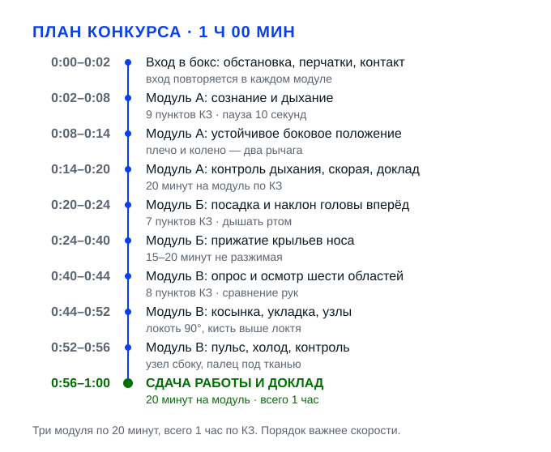
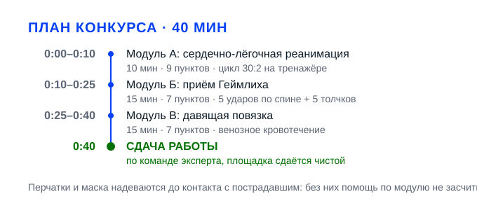
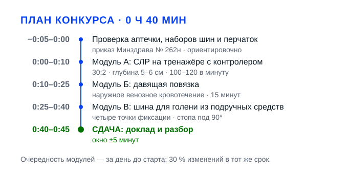

Инструктор по оказанию первой помощи (Р)
Задания ниже — официальные файлы «Абилимпикс» (источник: abilympics-russia.ru), разложенные по категориям. Решения написаны по тексту задания, регламенту и критериям оценки; в них указано, что именно проверяет эксперт.
Школьник
14–16 лет, базовый уровень заданияВыдержка из официального конкурсного задания: страницы, относящиеся к категории «Школьник» (стр. 11–15 источника).
Пошаговое решение
Конкурсное задание категории «Школьники» — это три ситуации по двадцать минут каждая, всего один час на все модули. В модуле А пострадавший без сознания, но дышит, и его нужно уложить в устойчивое боковое положение. В модуле Б идёт кровь из носа, и её останавливают прижатием крыльев носа на пятнадцать-двадцать минут, посадив человека с наклонённой вперёд головой. В модуле В — ушиб предплечья, и руку обездвиживают косынкой из подручных средств. Во всех трёх модулях первые четыре пункта почти дословно совпадают: убедиться в отсутствии опасности, установить словесный контакт, озвучить готовность помогать, надеть перчатки. Проверяют не скорость, а порядок: в каждом модуле от семи до девяти пунктов, и каждый эксперт отмечает отдельно, а результат сформулирован как состояние пострадавшего — уложен, кровотечение остановлено, конечность иммобилизована. Ниже — весь маршрут по шагам, с точками прижатия, углами, минутами и ошибками, которые стоят дороже всего.

Задача 1. Войти в ситуацию по единому алгоритмуМодули А, Б и В · первые 2–3 минуты каждого модуля
Вход в ситуацию повторяется трижды за час, и каждый раз он стоит из одних и тех же четырёх шагов: осмотреться и снять угрозы, надеть перчатки, установить словесный контакт и озвучить готовность помогать, провести обзорный осмотр и вызвать скорую. В конкурсном задании эти пункты выписаны отдельными строками в каждом модуле — в модуле А их девять, в модуле Б семь, в модуле В восемь, — и первые четыре почти дословно совпадают. Значит, отрабатывать их нужно не три раза, а один: довести до автоматизма, чтобы в боксе голова была занята состоянием пострадавшего, а не воспоминанием, что делать сначала. Ниже — этот общий вход целиком, с формулировками, которые эксперт ждёт услышать.
Действие 1.1. Оценить обстановку и снять угрозы
Шаг 1.1.1
Останавливаемся в полутора-двух метрах от пострадавшего и не подходим, пока не сделали полный оборот на месте: сначала смотрим на пол вокруг своих ног, потом на уровне груди, потом вверх — на провода, щитки, свисающие конструкции. В боксе угрозы выставляют специально: перевёрнутая канистра, оголённый провод у стола, лужа на кафеле, каталка на колёсах поперёк прохода. Каждую увиденную угрозу называем вслух коротко, в три-четыре слова: «лужа — скользко», «провод — не подходить». На весь осмотр уходит не больше десяти-пятнадцати секунд.
Первый пункт каждого из трёх модулей в конкурсном задании звучит одинаково: «убедиться в отсутствии опасности для себя и пострадавшего». Это не ритуал — именно с этого пункта начинается оценка порядка действий, и эксперт отмечает, подошёл участник к муляжу сразу или сначала осмотрелся. Второй пострадавший, упавший на скользком полу, — типичная картина на таких площадках, и цена пропущенного осмотра выше, чем цена любой ошибки в повязке.
Признаки того, что осмотр состоялся, видны снаружи: вы стоите на расстоянии, а не наклонились над пострадавшим; голова повёрнута в три стороны; прозвучали вслух хотя бы две конкретные угрозы; после осмотра вы либо убрали предмет, либо явно обошли его. Если ни одной угрозы назвать не удалось — значит, смотрели не туда, вернитесь на шаг назад.
Самая частая ошибка — идти к пострадавшему по прямой, глядя только на него: лужу и провод замечают уже стоя в них. Вторая — увидеть угрозу и промолчать: эксперт не может засчитать оценку обстановки, которую участник не озвучил, и весь блок входа в модуль остаётся неотмеченным.
Эксперт смотрит первые секунды модуля, стоя у входа в бокс, и в протоколе отмечает ровно три вещи: была ли пауза перед подходом, названы ли угрозы и устранены ли они.
Шаг 1.1.2
Убираем то, что можно убрать, и обозначаем то, что убрать нельзя. Канистру ставим вертикально и отодвигаем к стене, провод откидываем за пределы зоны досягаемости, лужу накрываем впитывающей салфеткой из аптечки или обходим, а место обозначаем словами: «здесь скользко, обхожу справа». Если угроза неустранима — например, из-под двери идёт дым или слышен запах газа, — пострадавшего не трогаем на месте, а перемещаем в безопасную зону: берём под мышки, тянем по полу, не поднимая, на пять-семь метров в сторону выхода.
В перечне мероприятий конкурсного задания после оценки обстановки идёт отдельный пункт — устранение повреждающих факторов и перемещение пострадавшего в безопасное место. Логика простая: помощь, оказанная в опасной зоне, превращает одного пострадавшего в двух, и никакая правильно наложенная косынка этого не компенсирует. Одновременно это проверка на взрослое решение: иногда правильный ответ — не лечить, а вынести.
Проверяем по результату: названная угроза либо исчезла из зоны, либо явно обойдена, и вы можете одной фразой объяснить, что именно сделали. Если пострадавшего перемещали — он лежит на ровном сухом участке, голова не упирается в стену, вокруг есть место, чтобы встать на колени с обеих сторон.
Ошибка — героически работать в луже «зато быстро», а потом поскользнуться с пострадавшим на руках. Вторая — тащить человека за руки или за голову: при неясной травме шеи это добавляет повреждение, которого не было, и обнуляет весь модуль по смыслу, даже если формально действия выполнены.
Эксперт смотрит на результат: угроза исчезла из зоны или явно обойдена, и отдельно фиксирует способ перемещения — за руки и за голову не засчитывается, волоком по полу засчитывается.
Шаг 1.1.3
Оцениваем количество пострадавших и решаем, кому помогать первым. Считаем вслух: «один пострадавший» или «двое». Если пострадавших двое, первым идёт тот, кто не дышит или кровоточит, вторым — тот, кто стонет и двигается: громкий стонущий человек дышит, а молчащий — нет. Дальше определяем, справляемся ли мы сами: если вокруг есть люди, сразу говорим, кто что делает, — один вызывает скорую, второй приносит аптечку, третий встречает бригаду у входа.
В перечне конкурсного задания есть отдельный пункт про оценку количества пострадавших и приоритетность помощи при двух и более пострадавших. На площадке категории «Школьники» пострадавший обычно один, но вопрос эксперта «а если их двое?» задают почти всегда, и ответ должен быть готов заранее. Кроме того, привлечение окружающих — это не слабость, а признак зрелого алгоритма: один человек не может одновременно держать нос и звонить.
Признак правильного решения: прозвучало число пострадавших, назван приоритет и распределены роли, причём каждой роли соответствует конкретный человек, а не абстрактное «кто-нибудь». Если вы всё делаете сами, это тоже допустимо, но тогда озвучьте это решением: «помощников нет, работаю один».
Частая ошибка — начать с того, кто громче кричит: крик означает проходимые дыхательные пути, а тишина рядом означает остановку дыхания. Вторая — раздать задания в пустоту: «вызовите скорую» без указания, кто именно, — и через минуту выясняется, что не позвонил никто.
Эксперт слушает формулировки: приказ с именем или приметой человека засчитывается как работа с окружающими, просьба в общий зал — нет, и строка остаётся пустой.
Действие 1.2. Надеть перчатки и защитить себя
Шаг 1.2.1
Достаём из аптечки перчатки, разрываем упаковку по насечке и надеваем так, чтобы манжета закрывала запястье на два-три сантиметра, а не заканчивалась у края ладони. Надеваем на сухие руки, снимаем часы и кольца заранее: под перчаткой они рвут латекс. Если перчаток в упаковке две пары, вторая остаётся в кармане — она понадобится после первого загрязнения. Каждое натягивание проверяем: потянули за пальцы — перчатка пружинит, значит, не порвана.
Четвёртый пункт каждого модуля в конкурсном задании — «обеспечить собственную безопасность (перчатки)». Кровь и биологические жидкости на площадке настоящие по легенде, и работать голыми руками запрещено не из брезгливости, а потому что контакт с чужой кровью — это путь передачи инфекций. Эксперт отмечает перчатки до первого касания пострадавшего, и надеть их после — уже нарушение последовательности.
Проверить легко: манжета на запястье, пальцы свободны, на ладони нет складок, которые будут мешать чувствовать пульс и крылья носа. Руки в перчатках вы держите перед собой, а не касаетесь ими лица, волос, телефона и ручки с протоколом.
Ошибка — надеть перчатки «по пути», уже наклонившись над пострадавшим, или работать в одной паре весь час: после контакта с кровью перчатка становится переносчиком, и в следующем модуле вы трогаете ею чистый муляж. Ещё одна типичная — взять перчатки не своего размера: болтающаяся перчатка сползает в самый неудобный момент.
Эксперт смотрит момент надевания — до или после первого касания, и состояние перчаток к концу модуля: разорванные или снятые раньше времени фиксируются отдельной строкой.
Шаг 1.2.2
Если по легенде есть риск разбрызгивания — кровотечение из носа, рвота, открытая рана, — надеваем ещё и маску: берём за резинки, прижимаем к лицу так, чтобы закрывала нос и рот, а не подбородок, и проверяем прижим по верхнему краю у переносицы. Волосы, если они длинные, убираем под резинку или за уши: свисающая прядь касается лица и раны раньше, чем вы успеваете её отвести.
В перечне СИЗ конкурсного задания названы прямо: перчатки медицинские и маска медицинская. На носовом кровотечении маска особенно уместна: кровь идёт из носа вперёд, и при наклоне головы капли летят в сторону того, кто стоит рядом. Аккуратно надетые СИЗ эксперт читает как понимание, что помощь — это контакт с чужой биологией, а не только с муляжом.
Признаки: маска сидит по краю лица, зажим на переносице прижат, дыхание не перекрыто, очки не запотевают. Волосы не падают на лицо при наклоне вперёд и назад — проверяется двумя наклонами до начала работы.
Ошибка — надеть маску на подбородок «чтобы видели лицо»: так она не защищает ничего. Вторая — поправить маску перчаткой, испачканной в крови: именно так и происходит перенос, и эксперт это отмечает как грубое нарушение.
Эксперт отмечает, надеты ли СИЗ до первого касания, и смотрит, трогает ли участник лицо и маску в перчатках: рука у лица в перчатке считается нарушением.
Шаг 1.2.3
Снимаем перчатки только после того, как пострадавший передан или работа закончена, и снимаем правильно: отворот одной перчатки захватываем снаружи, стягиваем через пальцы, комкаем в кулаке, второй рукой снимаем вторую перчатку за манжету изнутри — так кожа не касается наружной поверхности. Использованные перчатки идут в пакет для отходов, а не на стол и не в карман. После этого руки обрабатываем антисептиком или моем с мылом.
Порядок снятия — часть того же пункта про собственную безопасность: если стянуть перчатку за пальцы, кровь с наружной поверхности попадает на кожу, и все двадцать минут защиты обнуляются. Кроме того, аккуратное завершение модуля видно эксперту и входит в оценку работы с СИЗ, а разбросанные перчатки на площадке — замечание по организации рабочего места.
Проверяем: наружная поверхность перчаток не касалась кожи, пакет закрыт, руки чистые и сухие, на столе нет использованных салфеток. Вторую пару перчаток вы оставляете себе до конца часа — она пригодится в следующем боксе.
Ошибка — снять перчатки и сразу поправить волосы или протереть лицо: руки ещё не обработаны. Вторая — бросить перчатки в общий контейнер с чистым инвентарём: это нарушение санитарного порядка, которое фиксируют отдельно.
Эксперт оценивает технику снятия и утилизацию, и делает это в конце модуля, когда участник уже переключился на доклад: расслабленность в этот момент и выдаёт привычку.
Действие 1.3. Установить контакт и озвучить готовность
Шаг 1.3.1
Окликаем пострадавшего с расстояния, не наклоняясь над ним: «Вы меня слышите? Как вас зовут?» — громко и спокойно, двумя фразами, и ждём ответа три-четыре секунды. Если ответа нет, повторяем громче и добавляем лёгкое раздражение болевой точки: сжимаем мочку уха или надавливаем на трапециевидную мышцу у основания шеи. Муляж на категории «Школьники» изображает человека без сознания, поэтому ответа не будет, но пауза нужна: она показывает, что контакт проверяется, а не имитируется.
Второй пункт модуля А звучит как «попытаться установить словесный контакт с пострадавшим», а в модулях Б и В — «установить словесный контакт». Разница в одном слове: в модуле А сознания может не быть, и попытка контакта остаётся попыткой. Это первая проверка сознания, и от её результата зависит всё дальнейшее: при сознании мы ведём разговор и осматриваем, при отсутствии — считаем дыхание.
Признак того, что контакт проверен: прозвучали две разные фразы, между ними была пауза, и только потом вы коснулись пострадавшего. Если ответа нет — вы это озвучили вслух: «сознания нет, не отвечает». Молчание участника эксперт читает как пропуск пункта.
Ошибка — сразу трясти за плечо, не сказав ни слова: при травме шеи это добавляет смещение, а при сохранном сознании пугает человека. Вторая — задать вопрос и не дождаться ответа, начав считать дыхание: сознание и дыхание проверяются по очереди, иначе в протоколе обе строки останутся пустыми.
Эксперт слушает слова и паузу после них: для него это разница между проверкой сознания и имитацией движений, и в протоколе отмечается именно наличие паузы.
Шаг 1.3.2
Прежде чем продолжить, представляемся и проговариваем свои действия вслух. Формула короткая и рабочая: «Я [имя], умею оказывать первую помощь, сейчас помогу. Вы в безопасном месте, я вызову скорую». Если пострадавший без сознания, та же фраза адресуется окружающим: «Я умею оказывать первую помощь, начинаю, прошу не мешать и вызвать скорую». Говорим громко, чтобы слышали и те, кто стоит в трёх метрах, но без крика: крик на площадке читается как потеря контроля.
Третий пункт каждого модуля в конкурсном задании — устное информирование пострадавшего и окружающих о готовности оказывать первую помощь и о начале мероприятий. Смысл двойной: пострадавший, слышащий голос, успокаивается, а окружающие перестают хватать его за руки и мешать. На чемпионате это ещё и единственный способ показать эксперту, что вы понимаете границы своей роли — вы не врач, вы оказываете первую помощь до приезда бригады.
Проверка простая: в вашей фразе прозвучали три вещи — кто вы, что вы делаете и что будет дальше. Если из записи модуля понятно только «сейчас помогу», пункт закрыт наполовину: непонятно, вызвана ли скорая и кто этим занят.
Ошибка — молча работать, считая, что комментарии отвлекают: без озвученной готовности пункт не засчитывается, даже если все манипуляции выполнены безупречно. Вторая — объявить себя врачом или медсестрой: это вводит пострадавшего в заблуждение и для эксперта звучит как грубая ошибка.
Эксперт отмечает дословно: прозвучало ли, что участник умеет оказывать первую помощь и начинает мероприятия, и прозвучало ли это до первого действия, а не в конце.
Шаг 1.3.3
Раздаём конкретные поручения, а не просим о помощи вообще. Работают три формулы: «Вы, в синей куртке, вызовите скорую и вернитесь сказать, что вызов принят», «Вы принесите аптечку и воду», «Вы встречайте бригаду у входа и проводите сюда». Каждое поручение — с указанием человека и с ожидаемым результатом, чтобы был виден ответ. Если вокруг никого нет, произносим вслух: «помощников нет, работаю один, скорую вызову после первого действия».
Пункт перечня о призыве окружающих и вызове скорой в модуле А стоит после оценки признаков жизни, но по факту роли распределяют раньше: пока вы занимаетесь пострадавшим, кто-то уже набирает номер. На площадке помощников изображают волонтёры, и эксперт проверяет, умеет ли участник руководить, а не только делать руками. Это отдельно оцениваемая коммуникация, и она стоит дешевле манипуляций, но теряется чаще всего.
Признак выполненного пункта: поручения прозвучали до начала манипуляций, в каждом было имя или примета человека, а через полминуты вы получили обратный ответ — «вызов принят» или «аптечка здесь». Если ответа нет, поручение повторяем, а не делаем сами.
Ошибка — крикнуть в пустоту «вызовите скорую» и считать вопрос закрытым: через две минуты выясняется, что номер никто не набрал. Вторая — раздать всем сразу всё, включая себя: три поручения одному человеку не выполняются, и помогать перестают все.
Эксперт слушает, есть ли в поручениях адресат и обратная связь, и отдельно фиксирует, вызвана ли скорая до начала помощи или уже после первых действий.
Действие 1.4. Провести обзорный осмотр и вызвать скорую
Шаг 1.4.1
Обзорный осмотр делаем взглядом, не переворачивая пострадавшего: с головы к ногам, по передней поверхности — лицо, шея, грудь, живот, таз, бёдра, голени, стопы, — а затем, если позволяют обстоятельства, по задней: надплечья, спина, ягодицы. Смотрим не на «всё ли в порядке», а на конкретные признаки: кровь на одежде, рваные края ткани, неестественный угол конечности, отёк, бледность, следы рвоты. На каждый осмотренный участок — одна-две секунды и короткая пометка вслух: «голова чисто, грудь чисто, правое предплечье — отёк».
Второй пункт перечня конкурсного задания — обзорный осмотр именно для выявления продолжающегося наружного кровотечения. Порядок важен: сначала находим то, что убивает быстро, а именно кровь. На категории «Школьники» обзорный осмотр есть во всех трёх модулях, а в модуле В после него идёт ещё и подробный, поэтому границу между ними нужно держать в голове: обзорный — взглядом за тридцать секунд, подробный — руками по областям.
Осмотр считается сделанным, когда вы можете назвать, где кровь и где её нет. Проверьте себя: если эксперт спросит «где кровотечение?», ответ должен прозвучать сразу и с указанием стороны — «кровь из носа, справа» или «крови нет».
Ошибка — осматривать только то место, на которое жалуется пострадавший: при носовом кровотечении пропускают кровь на затылке, при ушибе предплечья — ссадины на голове. Вторая — переворачивать человека на живот «посмотреть спину», когда он без сознания: это грубое нарушение, которое сводит на нет всю дальнейшую работу.
Эксперт смотрит направление взгляда и слушает пометки вслух: молчаливое ощупывание без комментария он не может засчитать как обзорный осмотр и отмечает это.
Шаг 1.4.2
Если кровь найдена, определяем её характер по трём признакам: цвет, характер истечения и скорость наполнения салфетки. Алая, бьёт струёй или пульсирует — артериальное, давим немедленно и сильно. Тёмная, льётся ровно и медленно, салфетка пропитывается за десять-пятнадцать секунд — венозное. Кровь из носа при наклоне головы вперёд идёт каплями в платок и не угрожает жизни в первые минуты, но требует прижатия на пятнадцать-двадцать минут. Найденное озвучиваем: «кровотечение из носа, венозное, не артериальное».
Конкурсное задание для школьников специально ограничивает набор состояний: носовое кровотечение без повреждения костей носа. Но определить характер кровотечения всё равно нужно, потому что от этого зависит способ остановки: при венозном достаточно прижатия и холода, при артериальном нужен жгут и счёт на минуты. Эксперт проверяет именно обоснованность выбора, а не только результат.
Признаки правильной оценки: названы цвет и характер истечения, выбран способ остановки и объяснено, почему именно он. Для носа проверка простая: кровь идёт из одной ноздри или из обеих, усиливается ли при наклоне головы назад — если да, значит, течёт в глотку, и голову нужно наклонять вперёд.
Ошибка — на любое кровотечение хвататься за жгут: при носовом кровотечении жгут неприменим, а попытка наложить его читается как непонимание анатомии. Вторая — не озвучить характер кровотечения, а просто начать действовать: тогда в протоколе остаётся только результат, без оценки.
Эксперт слушает формулировку характера кровотечения и сверяет с ней выбранный способ остановки: названо венозное — значит, прижатие, а не жгут, и расхождение фиксируется.
Шаг 1.4.3
Вызываем скорую по алгоритму: набираем 103 или 112, дожидаемся ответа диспетчера и говорим по схеме — что случилось, где, сколько пострадавших, какой возраст, в каком состоянии, что уже сделано. Дальше отвечаем на вопросы и не кладём трубку первыми. На площадке вызов имитируется вслух, и полная формулировка звучит примерно так: «Улица, дом, второй этаж, кабинет номер такой-то: мужчина около сорока лет без сознания, дышит, уложен на бок, помощь оказываю».
Вызов скорой есть в каждом модуле отдельной строкой, причём в модуле А — девятым пунктом, то есть после укладывания, а в модулях Б и В — последним. Смысл один: вызов обязателен всегда, даже если состояние кажется нетяжёлым, потому что решение о госпитализации принимает бригада, а не участник. Отдельно оценивается полнота информации: адрес и состояние — то, без чего бригада не выедет или приедет не туда.
Проверка: в вызове прозвучали адрес, что случилось, состояние и что сделано; вы дождались подтверждения, что вызов принят; после этого озвучили, что скорая в пути. Если вызова не было, весь модуль не может считаться завершённым, каким бы аккуратным он ни выглядел.
Ошибка — сообщить только «человеку плохо»: диспетчеру нечего передать бригаде. Вторая — вызвать скорую мысленно, не озвучив, или отложить вызов на конец модуля: в реальной ситуации эти минуты и есть время до необратимых изменений.
Эксперт слушает вызов целиком и отмечает, названы ли адрес, состояние и выполненные мероприятия, а также момент вызова относительно начала помощи. Пропущенный адрес он считает грубой ошибкой.
Задача 2. Модуль А: уложить пострадавшего в устойчивое боковое положениеМодуль А · 20 минут · 9 пунктов последовательности
Модуль А изображает человека без сознания, у которого сохранено дыхание. Задача звучит просто — повернуть на бок, — но проверяют здесь не поворот, а два решения. Первое: убедиться, что дыхание действительно есть, потому что при его отсутствии на бок не укладывают, а начинают сердечно-лёгочную реанимацию. Второе: уложить так, чтобы голова оставалась слегка запрокинутой, рот был ниже гортани и содержимое выходило наружу, а не в дыхательные пути. Двадцать минут на модуль — это с большим запасом, поэтому время уходит не на скорость, а на проговаривание каждого шага: в конкурсном задании девять пунктов, и каждый эксперт отмечает отдельно.
Действие 2.1. Определить признаки жизни
Шаг 2.1.1
Сознание проверяем в два приёма: сначала голосом — «Вы меня слышите? Откройте глаза», — потом лёгким болевым раздражением. Мочку уха сжимаем двумя пальцами на три-четыре секунды или надавливаем основанием ладони на грудину, не на шею и не на глазные яблоки. Муляж не отвечает, и после второй проверки вы говорите вслух ровно то, что записано в конкурсном задании: «сознание отсутствует». Дальше руки убираем с головы и не трясём пострадавшего: при неизвестной травме шеи любое движение головой — лишний риск.
Шестой пункт модуля А требует определить наличие сознания и дыхания и «предполагаемый объём необходимой помощи». То есть от результата этой проверки зависит вся дальнейшая работа: нет сознания, но есть дыхание — устойчивое боковое положение; нет ни сознания, ни дыхания — реанимация, и на категории «Школьники» это уже другая задача. Ошибка в этой развилке означает, что дальше всё сделано не то, даже если сделано аккуратно.
Признаки: прозвучали две проверки — голосом и болевым приёмом, между ними была пауза, и вывод сказан вслух одной фразой. Если вы не можете ответить, чем именно проверяли, значит, проверки не было: эксперт слышит только слова.
Ошибка — сразу переходить к дыханию, не проверив сознание: тогда в протоколе пустует отдельная строка, а логика «почему на бок» остаётся необоснованной. Вторая — трясти за плечи и хлопать по щекам: при травме шейного отдела это добавляет смещение позвонков к уже имеющейся травме.
Эксперт стоит у изголовья и слушает: названо ли состояние вслух, прозвучали ли две проверки и не было ли лишних сотрясающих движений головой. Если ответа нет, он ждёт произнесённого вывода вслух.
Шаг 2.1.2
Восстанавливаем проходимость дыхательных путей: одну руку кладём на лоб, двумя пальцами второй берём за подбородок и одновременно запрокидываем голову назад и поднимаем подбородок вверх. Движение плавное, без рывка, до положения, когда подбородок оказывается выше линии лба. Если видно содержимое во рту — кровь, рвотные массы, слизь, — поворачиваем голову в сторону и убираем салфеткой или пальцем в перчатке, после чего снова запрокидываем.
В перечне конкурсного задания этот приём записан прямо: при отсутствии сознания проходимость восстанавливают запрокидыванием головы с подъёмом подбородка. Без него оценивать дыхание бессмысленно: у человека без сознания язык западает к задней стенке глотки, и вы будете слушать собственный шум вместо дыхания пострадавшего. На этом пункте чаще всего и теряется зачёт: участник наклоняется и «слушает», не тронув голову.
Проверяем по положению: голова запрокинута, подбородок поднят, шея не согнута вперёд, рот приоткрыт. Дыхательные шумы стали слышны, если они есть; если нет — вы всё равно должны были сделать приём до оценки дыхания, а не после.
Ошибка — давить на подбородок сверху, закрывая рот: воздух не пойдёт. Вторая — запрокинуть голову резко, рывком: при травме шеи это опаснее, чем сама закупорка, а правильный приём делается плавно и занимает две-три секунды.
Эксперт смотрит постановку рук — одна на лбу, вторая на подбородке, — и проверяет по секундам, что приём сделан до оценки дыхания, а не после. Приём, сделанный после оценки дыхания, не засчитывается.
Шаг 2.1.3
Оцениваем дыхание десять секунд, не больше: наклоняемся щекой ко рту пострадавшего, смотрим на грудную клетку и живот, слушаем и ощущаем выдох щекой. Считаем не «раз-два», а секунды, про себя или по часам на стене: 1001, 1002 и так до 1010. За это время должно быть не меньше двух-трёх выдохов. Дальше озвучиваем результат: «дыхание есть, ровное» или «дыхания нет».
Пункт третий перечня требует определять дыхание с помощью слуха, зрения и осязания — то есть тремя способами сразу, а не одним. Десять секунд — это не формальность: редкое агональное дыхание можно не заметить за три секунды и начать реанимацию живому человеку, а можно наоборот — принять за дыхание движение грудной клетки от ваших же рук. Для модуля А результат «дыхание есть» и есть основание укладывать на бок.
Признак правильно проведённой оценки: прошло около десяти секунд, вы смотрели на грудь, слушали и чувствовали выдох, и результат озвучен словами. Если пострадавший дышит редко и с паузами, это тоже результат — такой человек тоже укладывается на бок и требует контроля дыхания до приезда бригады.
Ошибка — определять дыхание по движению плеч, стоя в двух метрах: не видно ни экскурсии грудной клетки, ни выдоха. Вторая — слушать тридцать-сорок секунд, пытаясь понять, есть ли дыхание: за это время при отсутствии дыхания уходит треть резерва времени до необратимых изменений.
Эксперт отмечает три вещи: положение участника у лица пострадавшего, длительность паузы около десяти секунд и произнесённый вывод о наличии или отсутствии дыхания.
Шаг 2.1.4
Проговариваем состояние пострадавшего одной фразой, ровно в тех словах, которые записаны в конкурсном задании: «сознание отсутствует, дыхание сохранено, кровотечения нет». Дальше называем, что собираемся делать: «укладываю в устойчивое боковое положение, вызываю скорую». Фраза произносится громко, чтобы её слышали окружающие и эксперт, и до начала движений, а не после.
Седьмой пункт модуля А — отдельная строка протокола: озвучить состояние пострадавшего. Казалось бы, зачем говорить то, что и так видно, но в реальной помощи эта фраза синхронизирует всех: окружающие понимают, что происходит и что не надо переворачивать человека, а сам участник фиксирует решение. На конкурсе это ещё и единственный способ показать, что ваши дальнейшие действия не случайны.
Проверяем по содержанию: в фразе есть отсутствие сознания, наличие дыхания и отсутствие кровотечения — три элемента, каждый одной-двумя словами. Если сказано только «он без сознания», пункт закрыт частично, потому что дыхание не подтверждено.
Ошибка — сказать «он в коме» или «у него инсульт»: участник не ставит диагноз и не должен: это ошибка границ роли. Вторая — произнести фразу после укладывания, когда состояние уже изменилось: доклад идёт до действий, а не в отчёте.
Эксперт записывает формулировку дословно и сверяет её с тем, что участник делает потом: расхождение между словом и действием фиксируется отдельной строкой.
Действие 2.2. Подготовить место и тело к повороту
Шаг 2.2.1
Освобождаем площадку вокруг пострадавшего: отодвигаем стул, капельницу, сумку, ставни кровати, чтобы вокруг тела было не меньше полутора метров свободного пола с той стороны, куда вы будете поворачивать. Встаём на колени сбоку от пострадавшего — на стороне, противоположной направлению поворота, — и проверяем, что пол сухой: колени должны стоять устойчиво, потому что всю работу вы делаете весом тела, а не спиной.
Поворот требует места: на площади в полметра вы упрётесь в стену локтем и не сможете довести движение, а человек останется лежать на боку наполовину, с риском скатиться обратно на спину. Освобождение места — часть пункта об оценке обстановки и предотвращении дополнительного травмирования: задеть стул и уронить его на пострадавшего — типичная ошибка на тесных площадках.
Признаки: вокруг тела свободно на полтора метра, колени устойчиво на полу, до головы и до коленей можно дотянуться, не переступая. Если приходится тянуться — значит, вы стоите не с той стороны. Если колени упираются в мебель, положение выбрано неверно.
Ошибка — работать стоя, наклонившись через пострадавшего: спина не выдержит вес взрослого человека, и вы уроните его обратно. Вторая — отодвинуть мебель через пострадавшего, перешагивая его: любое движение над телом — риск задеть голову.
Эксперт смотрит положение участника: колени на полу, корпус над пострадавшим, а не сбоку от него, и оценивает, свободно ли вокруг тела. Тесноту вокруг тела он отмечает как риск вторичной травмы.
Шаг 2.2.2
Выпрямляем пострадавшему ноги: берём под колени и за стопы, вытягиваем их вдоль тела, стопы ставим на ширину таза, руки укладываем вдоль туловища. Если одна нога согнута и упирается в пол, её нужно выпрямить раньше, иначе при повороте тело пойдёт по дуге и вы не удержите вес. Голову держим в нейтральном положении: не запрокидываем и не сгибаем, пока не начали поворот.
Поворот на бок выполняется как единое движение, и любая часть тела, оставшаяся в стороне, становится точкой сопротивления. Выпрямленные ноги и прижатые руки дают компактный силуэт: тело катится, а не складывается. Заодно это проверка на понимание анатомии — эксперт видит, работает участник с весом или тянет за конечности.
Признаки: ноги вытянуты и параллельны, стопы на одном уровне, руки вдоль тела, голова по средней линии. Проверьте, что ни одна рука не оказалась под спиной — её потом не вытащить без второго поворота.
Ошибка — тянуть за стопы по одной: вторая нога остаётся согнутой и цепляется за пол. Вторая — оставить руку под туловищем: после поворота её придётся выдёргивать, а это и лишнее движение, и риск вывиха плеча у пострадавшего.
Эксперт смотрит на компактность: ноги вместе, руки вдоль тела, голова по центру — только из этого положения поворот идёт одним движением, и это видно заранее.
Действие 2.3. Уложить в устойчивое боковое положение
Шаг 2.3.1
Ближнюю к вам руку пострадавшего вытягиваем вперёд и укладываем под углом примерно девяносто градусов к туловищу, ладонью вверх — это будущая опора, на которой человек будет лежать плечом. Дальнюю руку берём за запястье, переносим через грудь и прижимаем её тыльной стороной кисти к щеке пострадавшего со своей стороны, как будто он сам подпёр голову. Придерживаем её своей ладонью, чтобы не соскользнула.
Дальняя рука, прижатая к щеке, — замок, который держит голову запрокинутой: он не даёт ей упасть лицом вниз и сохраняет проходимость дыхательных путей. Именно на этом элементе чаще всего и разваливается положение: руку прижимают к груди, и голова после поворота утыкается в пол. В конкурсном задании результат сформулирован как «пострадавший уложен в устойчивое боковое положение», то есть проверяют не факт поворота, а устойчивость.
Проверяем: дальняя рука лежит вдоль щеки, кисть у виска, локоть направлен в сторону от тела, ближняя рука вытянута под девяносто градусов и служит упором. Если локоть дальней руки упирается в грудь — замок не работает.
Ошибка — положить руку под голову ладонью вниз: при повороте она выскользнет. Вторая — прижать к щеке предплечье вместо кисти: голова всё равно завалится, потому что опора слишком далеко от виска. В обоих случаях голову придётся поправлять, и это видно.
Эксперт смотрит на две точки — локоть ближней руки и кисть у щеки: по ним видно, понимает ли участник, за счёт чего положение держится после поворота.
Шаг 2.3.2
Дальнюю ногу сгибаем в колене: берём за колено и за стопу, подтягиваем пятку к ягодице так, чтобы бедро и голень образовали примерно прямой угол, а стопа стояла на полу всей подошвой. Колено при этом направлено вверх — это рычаг, за который вы будете поворачивать. Свою вторую руку ставим на дальнее плечо пострадавшего и слегка прижимаем его к полу: плечо и колено — две точки, между которыми распределяется усилие.
Согнутая нога — единственный элемент, который после поворота не даёт человеку перекатиться обратно на спину: колено упирается в пол, бедро работает как подкос. Без него тело ложится на бок, но через полминуты сползает, и результат «уложен в устойчивое боковое положение» перестаёт быть правдой. Угол в девяносто градусов — не эстетика, а расчёт: при меньшем угле колено не достаёт до пола, при большем нога мешает повороту.
Проверяем: пятка у ягодицы, колено смотрит вверх, стопа стоит на полу всей подошвой, бедро и голень образуют угол, близкий к прямому. Если колено заваливается в сторону, значит, стопа стоит не подошвой, а ребром.
Ошибка — сгибать ногу после поворота: в этот момент её уже неудобно брать, и колено остаётся полусогнутым, не касаясь пола. Вторая — тянуть за стопу вверх: колено уходит к животу, и поворот идёт не в ту сторону.
Эксперт проверяет угол в колене и опору стопы до поворота: по ним понятно, спланировано движение или выполняется на глаз, и отмечает величину угла. Угол меньше прямого он считает типичной ошибкой.
Шаг 2.3.3
Поворачиваем одним движением: одной рукой держим дальнее плечо, второй тянем согнутое колено на себя, к себе же, а не вверх. Тело катится на бок вокруг своей оси, голова идёт вместе с туловищем, потому что дальняя рука прижата к щеке. Движение занимает две-три секунды: потянули — и сразу довели до конца, не останавливаясь на полпути. Направление поворота — к себе, чтобы вы контролировали лицо пострадавшего.
Поворот одним движением нужен по двум причинам. Во-первых, на полпути тело теряет опору и падает весом на вашу руку — это резкая нагрузка на плечо пострадавшего. Во-вторых, при медленном перекатывании голова успевает запрокинуться или упасть вперёд, и положение приходится переделывать. Конкурсное задание требует результата, а не процесса, но эксперт видит, что участник делает поворот уверенно, а не пробует.
Признаки: тело на боку, колено согнутой ноги на полу, лицо обращено к вам или чуть вниз, голова на дальней руке. Ни одна рука не придавлена туловищем, ничего не хрустнуло под весом — стопы, кисти и голова остались в тех положениях, в каких вы их оставили.
Ошибка — тянуть за плечо вверх, а не за колено в сторону: тело идёт по диагонали и заваливается на живот. Вторая — бросать движение на середине, чтобы поправить руку: после этого пострадавший лежит на спине наполовину повёрнутым, а это самое неустойчивое положение из возможных.
Эксперт следит за рычагами — плечо и колено, — и за тем, доведено ли движение до конца без остановки на середине, когда тело теряет опору. Остановка на середине считается ошибкой, а не мелочью.
Шаг 2.3.4
Сразу после поворота доводим положение до устойчивого: голову чуть запрокидываем назад, чтобы подбородок не упирался в грудь, рот оставляем приоткрытым и направленным вниз, к полу, — так жидкость вытекает наружу. Проверяем, что нижняя рука не придавлена, поправляем её, если нужно, и слегка подтягиваем верхнюю ногу, если она распрямилась. Всё это занимает пять-семь секунд и делается без перекатывания тела.
Голова и рот — главное в этом положении: смысл устойчивого бокового положения в том, чтобы рвотные массы, кровь и слюни выходили изо рта, а не стекали в трахею. Если голова согнута вперёд, подбородок прижат к груди, рот закрыт или обращён вверх, положение формально боковое, а по смыслу бесполезное. Это ровно тот пункт, по которому эксперт отличает заученное движение от понимания.
Проверяем тремя признаками: подбородок не прижат к груди, рот приоткрыт и смотрит вниз, нос и рот не упираются в пол. Дальше слушаем дыхание — видно, как поднимается грудная клетка, и слышно выдох. Рот должен смотреть вниз, к полу.
Ошибка — уложить на бок и оставить голову в том положении, в каком она оказалась: чаще всего лицом вниз, с прижатым к полу ртом. Вторая — подложить под голову свою руку или сумку: это поднимает голову и, наоборот, затрудняет отток содержимого.
Эксперт присаживается и смотрит на линию подбородка и на угол рта: это две точки, по которым он определяет, настоящее положение или только поворот на бок.
Действие 2.4. Проверить дыхание, вызвать скорую и доложить
Шаг 2.4.1
Проверяем дыхание в новом положении: снова наклоняемся, смотрим на грудную клетку, слушаем и ощущаем выдох щекой, считаем до десяти. Если дыхание стало хуже, тише, появились хрипы или вдохи с усилием — положение поправляем: чуть сильнее запрокидываем голову, подтягиваем верхнюю ногу, освобождаем нижнюю руку. Если дыхание пропало совсем — немедленно возвращаем на спину и начинаем реанимацию, потому что ситуация изменилась.
После поворота анатомия меняется: плечо и голова ложатся иначе, и дыхательные пути могут перегнуться. Поэтому контроль дыхания после укладывания — не формальность, а обязательная проверка результата, и в перечне мероприятий она идёт отдельным пунктом вместе с контролем состояния до приезда бригады. На конкурсе этот шаг виден как возврат к изголовью: уложил — вернулся — послушал.
Признаки: дыхание ровное, без хрипа, грудная клетка поднимается симметрично, изо рта в дыхательные пути ничего не затекает. Если слышен храп — язык подвернулся, голову нужно запрокинуть сильнее и проверить снова.
Ошибка — уложить и сразу уйти к следующему пункту, не проверив дыхание: именно так пропускают ухудшение. Вторая — поправлять положение, поднимая голову: от этого дыхательные пути перегибаются ещё сильнее.
Эксперт смотрит, возвращается ли участник к изголовью после поворота, и слушает, что тот говорит о дыхании: молчание читается как пропуск контроля. Проверка идёт по секундам, а не на глаз.
Шаг 2.4.2
Вызываем скорую, если ещё не вызвали, и докладываем результат: «Пострадавший без сознания, дыхание сохранённое, уложен в устойчивое боковое положение, кровотечения нет, помощь продолжаю». Доклад адресуем эксперту и бригаде, говорим в прошедшем времени и по пунктам, но без списка: одно-два предложения, в которых есть состояние, что сделано и что делаете сейчас. Все снятые вещи передаём вместе с пострадавшим.
Модуль А завершается докладом, и это отдельная строка в последовательности конкурсного задания: озвучить состояние и вызвать бригаду. Доклад нужен не для красоты: он показывает, что участник понимает, в каком состоянии передаёт пострадавшего, и не придумывает лишнего. Кроме того, на нём проверяется речь — ровная, без паники, с терминами, которые понятны не медику.
Проверка: в докладе прозвучали четыре элемента — сознание, дыхание, положение тела и отсутствие кровотечения; вызов скорой прозвучал вслух; вещи пострадавшего не потеряны. После доклада вы остаётесь рядом, а не отходите к столу с протоколом.
Ошибка — говорит «всё нормально, ничего не нужно»: при отсутствии сознания это неверно и опасно, бригада должна знать, что человек без сознания. Вторая — докладывать с диагнозом: «у него обморок» — участник не врач, и эксперт снимает за это отдельно.
Эксперт слушает доклад целиком и сверяет его с фактическим положением муляжа: если сказано «уложен на бок», а тело лежит на спине, это фиксируется как несоответствие.
Задача 3. Модуль Б: остановить носовое кровотечениеМодуль Б · 20 минут · 7 пунктов последовательности
Модуль Б — про самое частое бытовое состояние и самое частое заблуждение: почти все запрокидывают голову назад, чтобы кровь не капала на одежду. В конкурсном задании записано обратное: пострадавшего нужно усадить со слегка наклонённой вперёд головой и зажать ему нос в районе крыльев носа на пятнадцать-двадцать минут. Это значит, что оценивать будут три вещи: правильное положение тела, точку прижатия (мягкая часть, а не костная спинка носа) и выдержанное время, в течение которого пальцы не разжимают. Дальше идут холод, контроль и вызов скорой, но основной результат — «выполнена остановка носового кровотечения» — держится именно на этих трёх пунктах.
Действие 3.1. Посадить пострадавшего и задать положение головы
Шаг 3.1.1
Усаживаем пострадавшего на стул, а не оставляем стоять и не укладываем: при носовом кровотечении положение сидя снижает давление в сосудах носа и позволяет крови стекать наружу. Спина опирается на спинку стула, ноги стоят на полу, голова не запрокинута. Если стула рядом нет, подойдёт подоконник или ступенька — важно, чтобы человек сидел, а не лежал, и чтобы вы могли стоять сбоку от него.
Пятый и шестой пункты модуля Б в конкурсном задании описывают именно это: сначала обзорный осмотр, потом помощь, и первое действие помощи — усадить. Смысл физиологический: в горизонтальном положении кровь из носа затекает в носоглотку, человек её заглатывает, а через несколько минут начинается тошнота и рвота, которая усиливает кровотечение. Сидя человек контролирует ситуацию сам, и вы видите, сколько крови уходит.
Признак правильного положения: спина опирается, стопы на полу, вы стоите сбоку на уровне его плеча, голова пострадавшего ниже вашей груди. Если приходится наклоняться к самому полу — значит, человек сидит слишком низко или вы стоите не там.
Ошибка — уложить пострадавшего, «чтобы отдохнул»: кровь идёт в глотку, и через минуту появляется рвота. Вторая — оставить стоять: при потере крови человек может потерять сознание и упасть, добавив к кровотечению травму головы.
Эксперт смотрит на положение тела до начала манипуляций: сидит или лежит, и фиксирует это отдельной строкой протокола, не дожидаясь конца модуля. Лежачее положение он фиксирует сразу, не дожидаясь конца.
Шаг 3.1.2
Наклоняем голову вперёд, к коленям, примерно на тридцать-сорок градусов: подбородок опускается к груди, но не прижимается к ней. Наклон задаём словами и лёгким движением ладони на затылке: «наклоните голову вперёд, вот так, смотрите на свои колени». Если человек в сознании и может двигаться сам, он делает это сам, а вы только показываете направление и следите, чтобы голова не ушла назад.
Наклон вперёд — ключевой пункт, который в конкурсном задании записан как «со слегка наклоненной вперед головой». При наклоне вперёд кровь выходит через ноздри наружу, и вы видите её объём; при запрокинутой голове она уходит в глотку, и пострадавший её заглатывает. Разница видна не через час, а через две минуты: проглоченная кровь раздражает желудок и вызывает рвоту, которая поднимает давление и усиливает кровотечение.
Проверяем по линии взгляда: пострадавший смотрит на свои колени или пол перед собой, а не в потолок. Подбородок не прижат к груди, шея не согнута в дугу, дыхание свободное. Если человек всё время поднимает голову — повторяем указание и мягко возвращаем голову рукой.
Ошибка — запрокинуть голову, потому что «так кровь не капает»: это самое распространённое действие и самая частая потеря зачёта в модуле. Вторая — наклонить голову слишком сильно, до упора в колени: так пережимается шея и затрудняется дыхание.
Эксперт оценивает угол наклона в первые секунды и проверяет, не поднимает ли участник голову пострадавшего вверх «посмотреть» и не отпускает ли её назад.
Шаг 3.1.3
Объясняем пострадавшему три правила и добиваемся, чтобы он их понял: дышать ртом, кровь не глотать, а сплёвывать в салфетку или в подставленную ладонь, сморкаться нельзя. Говорим коротко, спокойно, глядя в лицо: «Дышите ртом. Если кровь попала в рот — сплёвывайте, не глотайте. Сморкаться нельзя, это опять откроет сосуд». Если есть возможность, даём в руки салфетку или бумажный платок, а не подставляем свою руку.
Слова здесь — часть помощи, а не вежливость. Человек с носовым кровотечением инстинктивно запрокидывает голову и глотает кровь, потому что так ему кажется правильнее; если не объяснить, он будет мешать вам всё время. В перечне мероприятий конкурсного задания есть пункт об информировании пострадавшего о начале помощи, и в этом модуле он особенно уместен: без понимания со стороны пострадавшего вы держите нос одному, а он в это время глотает кровь.
Признаки понимания: пострадавший дышит ртом, голову держит наклонённой, сплёвывает в салфетку, а не сглатывает, и не пытается высморкаться. Если он забывает — напоминаем один раз спокойно, без упрёка.
Ошибка — молча прижать нос и ничего не объяснить: человек не понимает, что происходит, и начинает вырываться или запрокидывать голову. Вторая — посоветовать «потерпите, сейчас пройдёт»: через десять минут кровь продолжается, и пострадавший теряет доверие к тому, кто помогает.
Эксперт слушает, что участник говорит пострадавшему: проговорены ли дыхание ртом, сплёвывание крови и запрет на сморкание, и в каком тоне это сказано.
Действие 3.2. Прижать крылья носа и выдержать время
Шаг 3.2.1
Находим точку прижатия: мягкую часть носа ниже костной спинки, там, где хрящ пружинит под пальцем. Это примерно середина носа, ближе к ноздрям — именно там, в переднем отделе перегородки, и находится большинство источников кровотечения. Прижимаем большим и указательным пальцами обеих сторон сразу, захватывая оба крыла, а не одно: давление должно идти на перегородку с двух сторон. Свою руку ставим так, чтобы не закрывать пострадавшему рот.
Пункт шестой модуля Б в конкурсном задании сформулирован точно: зажать нос «в районе крыльев носа». Это не придирка к формулировке: если давить на костную часть выше, вы сжимаете хрящ и почти не пережимаете сосуды, и кровотечение продолжается все двадцать минут, сколько бы вы ни держали. Мягкая часть пружинит, и по этому ощущению точку легко проверить.
Проверяем: палец проваливается в мягкую ткань, а не упирается в твёрдую спинку; прижаты оба крыла; ноздри сомкнуты; пострадавший может дышать ртом свободно. Если вы чувствуете под пальцем кость, сдвиньтесь на один-два сантиметра ниже.
Ошибка — прижать одну ноздрю, «потому что кровит из одной»: перегородка кровоснабжается с двух сторон, и одностороннее давление часто не работает. Вторая — давить на спинку носа сверху, как будто останавливаете кровь из головы: сосуды там не пережимаются.
Эксперт смотрит положение пальцев и спрашивает, где именно точка прижатия: неверная точка выше хряща — типичная ошибка, которую он видит сразу. Точку прижатия он просит показать на муляже.
Шаг 3.2.2
Держим прижатие не меньше пятнадцати и не больше двадцати минут, не разжимая пальцев. Это самое длинное непрерывное действие во всём конкурсном задании, и его нужно выдержать по часам, а не «на глаз». Засекаем время по часам на стене или просим помощника отметить момент старта: пятнадцать минут — это минимум, за который образуется сгусток, двадцать — предел, после которого нужен уже другой способ. Свою руку по возможности меняем на руку пострадавшего: показываем ему, как держать, и контролируем силу.
Время — это и есть содержание модуля: в конкурсном задании прямо написано «на 15-20 минут». Сгусток в повреждённом сосуде формируется не мгновенно, и если отпустить через три минуты, кровотечение начнётся снова, причём сильнее. С другой стороны, прижатие дольше двадцати минут без эффекта означает, что источник глубже и нужна помощь врача. Отсюда и вилка: пятнадцать — минимум, двадцать — повод вызывать скорую.
Признаки: вы помните время начала или оно записано, пальцы держат непрерывно, кровь в салфетку не поступает. Через пятнадцать минут проверяем аккуратно: ослабляем давление, но не убираем руку, и смотрим, не пошла ли кровь снова.
Ошибка — подержать две-три минуты, увидеть, что «вроде перестало», и отпустить: это самая частая причина возобновления кровотечения. Вторая — держать тридцать-сорок минут, потому что жалко отпустить: человек устаёт, начинает паниковать, а времени на вызов скорой уже не остаётся.
Эксперт засекает время прижатия и сверяет с интервалом 15–20 минут: три минуты и тридцать минут одинаково фиксируются как ошибка, но с разными пометками.
Шаг 3.2.3
Не разжимаем пальцы, чтобы «посмотреть, как там»: каждое разжатие срывает только что образовавшийся сгусток, и таймер начинается заново. Если очень нужно понять, что происходит, смотрим на салфетку и на губы пострадавшего, а не на ноздри: кровь во рту, бледность, потливость скажут больше. Если пострадавший сам пытается убрать вашу руку — объясняем, что отпускать нельзя, и просим потерпеть ещё несколько минут.
Правило «не проверять» звучит странно, но именно на нём теряется больше всего времени в этом модуле. Сгусток в переднем отделе носа рыхлый: он держится ровно до того момента, когда давление снято. В перечне мероприятий конкурсного задания после прижатия идёт контроль состояния, и он делается по внешним признакам, а не путём разглядывания носовых ходов.
Проверяем себя: пальцы не двигались ни разу с момента прижатия, салфетка остаётся чистой, пострадавший не сплёвывает алую кровь. Если вы всё-таки отпустили — считайте время заново и держите ещё пятнадцать минут, это честнее, чем делать вид, что таймер идёт.
Ошибка — проверять каждую минуту, «чтобы убедиться»: так можно продержать час и не остановить кровь. Вторая — дать пострадавшему высморкаться, чтобы «вышло всё лишнее»: сморкание срывает сгусток и открывает сосуд заново.
Эксперт смотрит на руки участника непрерывно, а не на часы: любое разжатие он замечает и отмечает в протоколе как срыв сгустка и потерю времени. Каждое разжатие он считает поштучно.
Шаг 3.2.4
Организуем позу так, чтобы двадцать минут прошли без мучений: локти пострадавшего ставим на стол или на собственные колени, голову он держит сам, а вы только контролируете силу прижатия своей рукой поверх его пальцев. Свою вторую руку освобождаем — ею можно поддерживать спину или подать салфетку. Если человек сидит на полу или на низкой ступеньке, садимся рядом на корточки, чтобы вам не приходилось стоять в наклоне двадцать минут.
Двадцать минут в неудобной позе человек не выдержит: руки устают, он начинает опускать их и наклоняться, давление ослабевает, и кровотечение возобновляется. Продуманная поза — это не удобство, а условие непрерывного прижатия. Заодно это видно эксперту как понимание, что помощь длится, а не состоит из одного движения.
Признаки: пострадавший сидит устойчиво, локти имеют опору, голова наклонена и не поднимается, ваши руки свободны для контроля и салфетки. Если человек начал сползать или поднимать голову — поправляем позу, не снимая давления с носа.
Ошибка — держать нос пострадавшего своей рукой все двадцать минут, стоя в наклоне: к десятой минуте рука дрожит, давление слабеет. Вторая — усадить человека на высокий стул без опоры для локтей: он будет балансировать и мешать вам.
Эксперт оценивает эргономику: есть ли опора для локтей, кто держит нос, не меняется ли сила давления к концу интервала и не устал ли пострадавший. Усталость пострадавшего ведёт к ослаблению давления.
Действие 3.3. Холод и три запрета
Шаг 3.3.1
Прикладываем холод: пузырь со льдом, грелку с холодной водой, пакет из морозилки, обёрнутый в тонкое полотенце, или смоченную холодной водой ткань. Кладём на переносицу и на затылок, держим десять-пятнадцать минут, потом снимаем на две-три минуты и при необходимости повторяем. Холод не должен касаться кожи напрямую: между пакетом и лицом всегда слой ткани, иначе через пять минут будет обморожение, а не помощь.
Холод сужает сосуды и замедляет кровоток в том месте, куда его приложили, поэтому переносица и затылок — рабочие точки при носовом кровотечении. В перечне мероприятий конкурсного задания охлаждение записано отдельным пунктом при травмах и воздействиях высоких температур, а при кровотечении из носа оно применяется как вспомогательное средство вместе с прижатием. Самостоятельного значения холод не имеет: без прижатия он кровь не остановит.
Признаки: кожа под холодом не побелела до синевы, пострадавший не жалуется на жжение, холод держится в пределах пятнадцати минут с перерывами. Если человек говорит, что холодно и неприятно, уменьшаем время до пяти-семи минут.
Ошибка — приложить лёд прямо на кожу и уйти: обморожение на переносице развивается быстро, а заметить его на бледном лице трудно. Вторая — положить холод на нос и одновременно отпустить прижатие, решив, что «холод справится»: он не справится.
Эксперт смотрит, есть ли между холодом и кожей слой ткани, и куда положен холод: переносица и затылок — верно, глаза и открытая кожа — нет. Прокладку он проверяет пальцем, а не взглядом.
Шаг 3.3.2
Проговариваем и удерживаем три запрета. Не запрокидывать голову — кровь уйдёт в глотку. Не заталкивать в нос вату, бинт и бумажные салфетки глубоко — грубый тампон травмирует слизистую и мешает сгустку встать на место; если очень нужно, комок ваты ставят у входа в ноздрю, не глубже, и он не заменяет прижатия. Не сморкаться и не пить горячее в ближайший час — горячее расширяет сосуды и провоцирует повторное кровотечение.
Запреты — половина помощи в этом модуле, потому что вокруг всегда найдутся советчики: «запрокинь голову», «затолкай вату поглубже», «высморкайся, и всё пройдёт». Участник должен уметь не только сделать правильно, но и отвести неверное действие, причём вежливо: на площадке волонтёры-демонстранты могут предлагать именно такие советы, и реакция на них входит в оценку коммуникации.
Признаки: голова наклонена вперёд всё время, в носу нет посторонних предметов, пострадавший не сморкается. Если советчик настаивает — спокойно объясняем причину: «если запрокинуть, кровь пойдёт в желудок, начнётся рвота».
Ошибка — согласиться с советом «просто запрокиньте голову»: эксперт видит смену положения и фиксирует её как ошибку, даже если инициатива была не ваша. Вторая — набить нос бумагой «чтобы остановить»: при извлечении сгусток срывается, и кровотечение начинается с новой силой.
Эксперт слушает, как участник реагирует на подсказки посторонних: умение спокойно отстоять правильное действие оценивается отдельной строкой. Молчаливое согласие с неверным советом — тоже ошибка.
Действие 3.4. Проверить результат, вызвать скорую и доложить
Шаг 3.4.1
Через пятнадцать-двадцать минут аккуратно ослабляем прижатие, но руку не убираем: смотрим, не появилась ли кровь в ноздрях и не пошла ли она в рот. Если кровь не возобновилась — оставляем салфетку у входа в ноздрю, просим не сморкаться и не наклоняться резко в течение часа, голову держим наклонённой ещё несколько минут. Если кровь пошла снова — прижимаем ещё раз и держим ещё десять минут, а параллельно вызываем скорую.
Проверка результата — обязательный пункт последовательности: в конкурсном задании результат модуля сформулирован как «выполнена остановка носового кровотечения». Остановка подтверждается не тем, что вы отпустили, а тем, что после отпускания кровь не идёт. Проверять нужно медленно и осторожно: ослабляем давление постепенно, а не сдёргиваем руку, иначе сгусток срывается и вы получаете обратный результат.
Признаки: в ноздрях сухо или есть только тёмные сгустки, пострадавший не сплёвывает алую кровь, дышит ртом спокойно, цвет лица обычный. Если появилась свежая алая кровь — остановка не достигнута, и это надо честно сказать в докладе.
Ошибка — объявить, что кровотечение остановлено, не проверив: через минуту кровь идёт, а в протоколе уже записано «остановлено», и расхождение с реальностью фиксируется как ошибка оценки. Вторая — сразу после остановки отпустить пострадавшего идти: при наклоне и движении кровотечение возвращается.
Эксперт подходит в момент проверки и смотрит, ослабляет участник давление постепенно или убирает руку сразу, а также что он делает при возобновлении крови.
Шаг 3.4.2
Оцениваем, есть ли признаки опасного кровотечения, при которых дальше ждать нельзя: кровь идёт больше двадцати минут, несмотря на прижатие; кровь льётся струёй или человек сплёвывает её изо рта; появились бледность, холодный пот, головокружение, шум в ушах, тошнота; человек стал вялым или, наоборот, беспокойным. Все эти признаки называем вслух и сразу меняем план: прижатие не прекращаем, скорую вызываем немедленно.
Носовое кровотечение редко угрожает жизни, но при длительном и обильном истечении человек теряет объём крови, а проглоченная кровь даёт рвоту, которая ухудшает ситуацию. Кроме того, кровотечение из задних отделов носа, которое не видно снаружи, останавливается только врачом. Способность отличить «обычное» от «опасного» — это и есть та часть работы, которая отличает инструктора от человека, выучившего одно движение.
Признаки правильной оценки: названы время, объём и состояние пострадавшего, и на основании этого выбрано решение — продолжать прижатие или вызвать скорую немедленно. Если пострадавший побледнел и вспотел, это уже не «подождать», а «вызвать сейчас».
Ошибка — держать и ждать сорок минут «пока само не остановится», глядя, как человек бледнеет. Вторая — пропустить сплёвывание алой крови изо рта и решить, что кровотечение только переднее: это признак затекания в глотку.
Эксперт слушает, названы ли признаки ухудшения и изменилось ли решение участника в зависимости от них: остался прижатие или вызвал бригаду немедленно.
Шаг 3.4.3
Вызываем скорую и докладываем результат: «Носовое кровотечение, прижатие крыльев носа двадцать минут, кровотечение остановлено, пострадавший в сознании, сидит с наклонённой головой, холод приложен». Если кровотечение не остановилось — говорим это прямо: «кровотечение продолжается двадцать минут, прижатие неэффективно, нужна бригада». Пострадавшего не отпускаем домой и не оставляем одного до приезда помощи.
Вызов скорой — седьмой, последний пункт модуля Б, и он есть даже тогда, когда кровь остановилась: решение о том, нужна ли госпитализация, принимает врач, а не участник. Кроме того, в вызове проверяется полнота информации: время, что делали, чем закончилось — именно эти три вещи нужны бригаде, чтобы понять, с чем она едет.
Проверка: вызов прозвучал вслух с адресом, состоянием и тем, что сделано; результат назван честно; пострадавший сидит под контролем и не предоставлен сам себе. После доклада вы не уходите от него до передачи бригаде.
Ошибка — не вызывать скорую, потому что «кровь остановилась»: пункт остаётся незакрытым, а при повторном кровотечении помощи рядом не будет. Вторая — сказать «всё в порядке», если кровотечение продолжается: бригада приедет неготовой, и это самое опасное последствие ошибки в докладе.
Эксперт сверяет доклад с фактическим состоянием пострадавшего и отмечает, вызвана ли бригада и передана ли информация о результате, а не только о действиях.
Задача 4. Модуль В: иммобилизовать предплечье косынкой из подручных средствМодуль В · 20 минут · 8 пунктов последовательности
Модуль В — самый объёмный: восемь пунктов последовательности, из них один требует подробного осмотра и опроса по шести областям тела, а последний — наложения косынки из подручных средств. Ситуация по легенде — ушиб предплечья, то есть закрытая травма без крови и без видимых костных отломков. Задача не «замотать руку», а обездвижить её в физиологичном положении: сгиб в локте около девяноста градусов, кисть чуть выше локтя, вес руки держит ткань, а не мышцы пострадавшего. Отсюда и три точки контроля, которые эксперт проверяет обязательно: пульс на запястье, цвет пальцев и узел не на позвоночнике.
Действие 4.1. Провести подробный осмотр и опрос
Шаг 4.1.1
Начинаем с опроса, сидя или стоя рядом на уровне глаз пострадавшего: что случилось, где болит, когда, терял ли сознание, двигал ли рукой после травмы, есть ли хронические болезни и аллергия. Вопросы задаём по одному, не списком, и делаем паузу на ответ. Ответы коротко повторяем вслух: «упал на вытянутую руку, болит здесь, двигать не может» — так и пострадавший видит, что его услышали, и вы фиксируете картину для доклада.
Пятый пункт перечня мероприятий конкурсного задания требует подробного осмотра и опроса при наличии сознания, и в модуле В он вынесен отдельной строкой. Опрос нужен не из вежливости: механизм травмы подсказывает, что искать. Падение на вытянутую руку — это не только предплечье, но и плечо, ключица, запястье; удар головой — это ещё и шея. Без опроса вы осмотрите одну руку, а пропустите то, что опаснее.
Признаки: прозвучали четыре обязательных вопроса — что, где, когда и был ли удар головой; ответы повторены вслух; пострадавший не перебит и не торопим. Если он говорит «всё нормально, только рука» — всё равно проверяем остальное.
Ошибка — начать ощупывать руку, не спросив ничего: человек напрягается, и любое движение воспринимает как боль. Вторая — задать пять вопросов одной скороговоркой: в ответ получите один, и картина травмы останется неполной.
Эксперт слушает опрос: важны последовательность вопросов и то, реагирует ли участник на ответы пострадавшего, а не зачитывает список подряд. Пауза после вопроса — часть оценки, а не вежливость.
Шаг 4.1.2
Осматриваем голову и шею: проводим ладонями по своду черепа, проверяем затылок, височные области, надбровья, уши — нет ли крови и гематом; смотрим, одинаково ли зрачки реагируют на свет, нет ли тошноты. Дальше шея: наклоняем голову пострадавшего подбородком к груди и обратно, просим повернуть в стороны, если он в сознании и может, и спрашиваем о боли. При любой боли в шее или ударе головой движения прекращаем и фиксируем шею.
Подробный осмотр идёт по областям, и начинается он сверху: голова и шея — то, что пропускают чаще всего, потому что «жалуется на руку». Ушиб предплечья при падении почти всегда сопровождается ударом головой или рывком шеи, и незамеченное сотрясение меняет тактику: такого пострадавшего нельзя сажать и тем более отпускать домой. В перечне конкурсного задания осмотр головы и шеи выписаны отдельными строками, и эксперт отмечает каждую.
Признаки: вы осмотрели и назвали вслух четыре зоны — свод, затылок, виски, уши; проверили зрачки; спросили о тошноте и головокружении; проверили подвижность шеи. Каждая зона — одна фраза: «голова чисто, шея безболезненна».
Ошибка — крутить голову пострадавшего, проверяя шею, когда он жалуется на боль: активные движения выполняет сам пострадавший, а вы только просите и наблюдаете. Вторая — не спросить про тошноту: без этого невозможно заподозрить сотрясение.
Эксперт смотрит, идёт ли осмотр сверху вниз и проговариваются ли результаты по каждой зоне: молчаливое ощупывание он засчитать не может. Он считает названные зоны, а не движения рук.
Шаг 4.1.3
Осматриваем грудь, спину, живот и таз. На груди: симметрия дыхания, боль при нажатии на грудину и рёбра, нет ли кровоподтёков и болезненных участков. На спине, если пострадавший сидит: проводим ладонями вдоль позвоночника и по лопаткам, спрашиваем о боли. На животе: мягкий он или напряжён, есть ли боль при лёгком нажатии, нет ли кровоподтёков. Таз проверяем осторожно: сдавливаем гребни подвздошных костей с двух сторон и спрашиваем об ощущениях.
Это области, где скрытая травма опаснее видимой: ушиб предплечья не угрожает жизни, а разрыв внутреннего органа или перелом таза — угрожает, и обнаружить их можно только осмотром. Пункт перечня требует осмотра груди, спины, живота и таза, и на конкурсе это проверяется буквально: эксперт смотрит, дошёл ли участник до этих зон или остановился на руке.
Признаки: вы последовательно назвали четыре области, проверили симметрию дыхания и болезненность, спросили о боли в спине и животе. На каждую область — не больше десяти-пятнадцати секунд, иначе осмотр растянется на весь модуль.
Ошибка — давить на живот сильно и глубоко: при подозрении на внутреннюю травму это усиливает повреждение. Вторая — пропустить спину, потому что пострадавший сидит: осмотр вдоль позвоночника ладонями делается и в положении сидя.
Эксперт ведёт счёт областям: голова, шея, грудь, спина, живот и таз — шесть отметок, и каждая пропущенная остаётся в протоколе пустой строкой. Счёт областей он ведёт вслух вместе с участником.
Шаг 4.1.4
Осматриваем конечности, и начинаем со здоровой руки: просим поднять её, сжать пальцы, почувствовать вашу руку. Затем травмированная: сравниваем две руки по цвету, объёму, температуре, проверяем пульс на запястье травмированной руки, просим пошевелить пальцами и оцениваем, нет ли онемения. Смотрим на предплечье: есть ли отёк, кровоподтёк, деформация, неестественная подвижность. Травмированную руку при этом поддерживаем сами, не давая ей свисать.
Сравнение со здоровой стороной — основной приём осмотра: отёк и изменение цвета видны только в сравнении, а пульс на запястье показывает, не сдавлены ли сосуды. Отсутствие пульса или онемение пальцев — признак, который меняет тактику: такую руку нельзя просто подвесить в косынку, нужна срочная помощь. В модуле В задание требует иммобилизации, и обоснование иммобилизации — именно результат осмотра.
Признаки: сравнили цвет, объём и температуру; проверили пульс до наложения повязки и запомнили его; уточнили, двигаются ли пальцы и нет ли онемения; назвали вслух, есть ли деформация. Пульс до и после — это две точки, между которыми виден результат вашей работы.
Ошибка — крутить и разгибать травмированную руку «посмотреть, что там»: при возможном переломе это смещает отломки. Вторая — не проверить пульс до наложения: после повязки вы не сможете отличить сдавление от исходного состояния.
Эксперт смотрит на сравнение со здоровой рукой и на пальпацию пульса до наложения косынки: это две отметки, между которыми видна логика работы. Онемение и бледность пальцев меняют тактику на месте.
Действие 4.2. Сложить косынку из подручных средств
Шаг 4.2.1
Выбираем материал. Годится всё, что держит форму и не тянется: платок, шарф, полотенце, косынка, парео, рубашка, футболка, простыня, кусок марли или бинта. Не годится тонкий трикотаж, эластичный бинт и полиэтилен: трикотаж растягивается под весом руки и через минуту она снова висит, а пакет не держит воздух и скользит. Если материал светлый, а рука в крови — подкладываем салфетку, но на ушиб без крови это не требуется.
Конкурсное задание прямо требует косынку «из подручных средств», то есть из того, что есть на площадке, а не из готового медицинского изделия. Это проверка на гибкость: в реальной ситуации рядом не будет аптечки, а будет куртка, шарф или чужой рюкзак с ремнём. Выбор материала — первое, что видит эксперт, и он оценивает, понимает ли участник, что ткань должна держать вес, а не украшать.
Признаки подходящего материала: ткань не тянется, если потянуть за угол; размер не меньше метра по длинной стороне; на ткани нет острых застёжек и булавок, которые упрутся в шею. Проверьте растяжение руками до того, как начнёте складывать.
Ошибка — взять эластичный бинт: он тянется, и рука опускается до исходного положения за две-три минуты. Вторая — взять слишком маленький платок: концы не дойдут до противоположного надплечья, и узел придётся делать на шее спереди, что опасно.
Эксперт смотрит на выбранный материал и на то, проверял ли участник его растяжение: для него это признак практического опыта, а не памяти. Эластичный бинт и тонкий трикотаж он не засчитывает.
Шаг 4.2.2
Складываем треугольник. Квадратный платок или отрез ткани размером примерно метр на метр складываем по диагонали — получается треугольник с длинной стороной около 130–140 сантиметров и двумя короткими по 90–100. Если ткань прямоугольная, складываем её по диагонали от угла к углу и отрезаем или подворачиваем лишнее. Гладить и выравнивать не нужно, но углы должны быть расправлены, иначе узлы получатся перекошенными.
Классическая косынка — это треугольник с основанием около 130 сантиметров: такая длина позволяет обвести концы вокруг шеи и завязать узел сбоку, не перетягивая горло. Меньший треугольник не достанет, больший — сделает узел слишком объёмным и сместит руку. Про геометрию спрашивают прямо: «какой длины должно быть основание?» — и ответ 130 сантиметров показывает, что участник работал с косынкой, а не видел её на картинке.
Проверяем: треугольник ровный, основание длинное, углы расправлены, два коротких конца одинаковой длины. Если один конец короче другого на десять сантиметров — узел уйдёт в сторону, и рука перекосится.
Ошибка — сложить прямоугольник по короткой стороне: получится длинный узкий треугольник, который не охватит предплечье. Вторая — сложить ткань вчетверо «для прочности»: получится толстая полоса, которая давит на шею и не держит локоть.
Эксперт проверяет форму и размер: треугольник с основанием около 130 сантиметров и двумя короткими сторонами по 90–100 — то, что он ожидает увидеть. Меньший треугольник он считает ошибкой выбора материала.
Действие 4.3. Наложить косынку и обездвижить руку
Шаг 4.3.1
Придаём руке физиологичное положение: сгибаем в локте примерно до девяноста градусов, предплечье ставим поперёк туловища, кисть чуть выше локтя — так, чтобы большой палец смотрел вверх, а ладонь была обращена к животу. Плечо при этом опущено и прижато к туловищу, локоть у бока. Держим предплечье сами, не отпуская, пока не наложена повязка: пострадавший не должен удерживать вес руки мышцами.
Угол в девяноста градусов и кисть выше локтя — не удобство, а анатомия: в нём предплечье в физиологической позиции, мышцы расслаблены, кровоток не нарушен. Если кисть опустить ниже локтя, кровь и лимфа устремятся вниз, отёк усилится, а боль возрастёт. Если согнуть руку сильнее, к девяноста градусов прибавится сдавление в локтевом сгибе. В конкурсном задании результат сформулирован как иммобилизация конечности, и проверяют её по положению.
Признаки: угол между плечом и предплечьем близок к прямому, кисть на уровне локтя или на два-три сантиметра выше, большой палец направлен вверх, ладонь не развёрнута наружу. Плечо не поднято к уху, локоть не отставлен от туловища.
Ошибка — подвесить руку прямой, «как удобнее»: при ушибе предплечья прямая рука свисает вдоль тела и травмированные ткани растягиваются. Вторая — поднять кисть высоко, к плечу: это перегибает запястье и нарушает кровоток в пальцах.
Эксперт смотрит угол в локте и уровень кисти до наложения ткани: если рука висит, повязка только закрепит неправильное положение, и это отдельная ошибка.
Шаг 4.3.2
Подводим треугольник под предплечье: основание идёт вдоль туловища со стороны травмированной руки, верхушка направлена к локтю и выступает за него на десять-пятнадцать сантиметров. Ткань поддерживает предплечье снизу, от локтя до кисти, а не наоборот. Один короткий конец перекидываем через надплечье здоровой стороны, второй ведём под мышкой травмированной руки; оба конца сходятся у шеи сбоку.
Такое расположение задаёт геометрию всей повязки: ткань работает как гамак, вес руки распределяется на надплечье и спину, а не на шею. Если верхушку направить к кисти, предплечье окажется на весу и повязка сползёт. Если основание положить поперёк туловища, а не вдоль, рука упрётся в грудь и узел перекосится. Всё это эксперт видит в первые секунды и оценивает как понимание конструкции, а не как заучивание последовательности.
Проверяем: ткань под предплечьем от локтя до кисти, верхушка за локтем, концы выведены на противоположное надплечье и под мышку, нигде ткань не перекручена в жгут. Если один конец короче и не достаёт до шеи — перекладываем треугольник заново, а не тянем.
Ошибка — положить предплечье поверх ткани и прижать его к груди: тогда рука держится за счёт прижатия, а не за счёт повязки. Вторая — провести оба конца по одной стороне: узел окажется на плече травмированной руки, и вес пойдёт на больное плечо.
Эксперт проверяет, проходит ли ткань под предплечьем и куда выведены концы: это самая частая точка ошибки, и он смотрит её до завязывания узла. Перекрут ткани в жгут он отмечает как грубую ошибку.
Шаг 4.3.3
Завязываем концы у шеи сбоку, на стороне травмированной руки, на уровне надплечья, а не на позвоночнике и не спереди на горле. Узел плоский, двойной, но не затянутый до упора: под него подкладываем мягкую прокладку — салфетку, платок, сложенную ткань. После завязывания проверяем, что ткань не давит на шею: между узлом и кожей должен свободно проходить палец. Плечо травмированной руки остаётся опущенным.
Узел сбоку — требование безопасности: на позвоночнике он давит на остистые отростки и мешает лежать, а спереди на горле пережимает дыхательное горло и сонные артерии. Мягкая прокладка нужна потому, что за двадцать минут и дорогу до больницы тугой узел натирает кожу и оставляет след. В конкурсном задании этот пункт не выписан отдельной строкой, но проверяется всегда: «где узел?» — вопрос, который задают на любой площадке.
Признаки: узел на надплечье сбоку, не на середине спины, не на горле; под узлом прокладка; палец проходит между тканью и шеей; пострадавший говорит, что не давит. Голова наклоняется свободно, дыхание не затруднено.
Ошибка — завязать узел на затылке или на позвоночнике: это и неудобно, и опасно при транспортировке. Вторая — затянуть так, что ткань врезается в шею: через пять минут появится головная боль и чувство нехватки воздуха.
Эксперт приходит и проверяет узел рукой: место сбоку на надплечье, мягкая прокладка и свободно проходящий палец — три признака, которые он ищет. Узел на горле он просит снять и перевязать при нём.
Шаг 4.3.4
Закрепляем верхушку треугольника: подворачиваем её вокруг локтя вперёд и закрепляем булавкой или пластырем у передней поверхности предплечья, а если крепления нет — узлом на два конца, заранее связанных с верхушкой. Верхушка не должна свисать: она разматывается при движении, и рука выскальзывает из гамака. После закрепления ещё раз проверяем, что предплечье лежит в ткани, а не на её краю.
Незакреплённая верхушка — самая частая причина, по которой повязка разваливается через десять минут: край треугольника разворачивается, поддержка уходит, и рука опускается. Технически это мелкая деталь, но именно по ней видно, работал ли участник с реальной косынкой. На конкурсе это отдельный взгляд эксперта в конце модуля: смотрит, аккуратно ли заправлен локоть.
Признаки: верхушка подвёрнута и закреплена, не свисает ниже локтя, предплечье полностью в ткани, край не режет подмышку. При движении здоровой рукой повязка не смещается и узел не ползёт к шее. Булавка проходит только через ткань.
Ошибка — оставить верхушку свободной, «и так держится»: к концу модуля рука висит ниже, и результат уже не тот. Вторая — приколоть булавку к коже: она должна проходить только через ткань, и проверять это нужно на ощупь, а не на глаз.
Эксперт смотрит на верхушку и на булавку: открытая булавка или укол в кожу фиксируются как грубая ошибка, а незакреплённая верхушка — как небрежность.
Шаг 4.3.5
Прикладываем холод на область ушиба: пакет или грелку в полотенце кладём на предплечье поверх ткани, на пятнадцать-двадцать минут, и следим, чтобы он не съезжал. Если холод держать нечем, используем смоченную холодной водой ткань и меняем её каждые пять минут. После двадцати минут холод снимаем и делаем перерыв не меньше десяти минут: непрерывное охлаждение вредит коже и сосудам.
При ушибе холод — единственное, что реально влияет на отёк и боль в первые минуты: он сужает сосуды, уменьшает выход жидкости в ткани и снижает проводимость болевых нервов. В перечне конкурсного задания охлаждение при травмах выписано отдельным пунктом, и на площадке смотрят, приложен ли холод и через сколько минут после травмы. После двадцати минут эффект прекращается, а риск повреждения кожи растёт.
Признаки: холод лежит на области отёка, между холодом и кожей слой ткани, время засечено, через двадцать минут холод снят. Проверяем пальцы: они должны быть тёплыми и розовыми, а не белыми. Ноготь после нажатия розовеет за одну-две секунды.
Ошибка — приложить лёд прямо на кожу и держать полчаса: обморожение на фоне травмы выглядит как ухудшение и требует уже другого лечения. Вторая — не прикладывать холод вовсе, считая, что достаточно повязки: отёк нарастёт к моменту приезда бригады.
Эксперт проверяет наличие прокладки и время охлаждения: холод без ткани — ошибка, отсутствие холода — потерянный пункт, тридцать минут подряд — тоже ошибка.
Действие 4.4. Проверить кровообращение, вызвать скорую и доложить
Шаг 4.4.1
Проверяем кровообращение в кисти: двумя-тремя пальцами находим пульс на лучевой артерии у основания большого пальца и сравниваем с пульсом на здоровой руке. Смотрим цвет и температуру пальцев: они должны быть розовыми и тёплыми, ногти при нажатии бледнеют и восстанавливают цвет за одну-две секунды. Просим пострадавшего пошевелить пальцами и сказать, не появилось ли онемение.
Пульс и цвет пальцев — главный контроль качества повязки: слишком тугая косынка или перетянутый узел сдавливают сосуды, и рука остаётся без кровоснабжения, что за двадцать минут даёт онемение, а за час — необратимые изменения. Проверка делается всегда, даже если повязка кажется свободной: ткань под весом руки натягивается сильнее, чем при наложении. На конкурсе это отдельный пункт, и эксперт подходит смотреть именно его.
Признаки: пульс на травмированной руке прощупывается так же отчётливо, как на здоровой; пальцы розовые, тёплые, ногтевое ложе восстанавливает цвет быстро; пострадавший не жалуется на онемение и покалывание. Если пульс слабее или пальцы бледные — повязку ослабляем немедленно.
Ошибка — не проверять пульс после наложения: сдавление обнаруживается только тогда, когда человек уже жалуется на онемение, а это поздний признак. Вторая — проверять на здоровой руке и считать, что всё в порядке: сравнение обязательно должно быть с травмированной стороны.
Эксперт смотрит момент проверки — сразу после повязки или в конце модуля, — и наличие сравнения со здоровой рукой, а не только факт прощупывания пульса.
Шаг 4.4.2
Вызываем скорую и докладываем: «Ушиб правого предплечья, сознание сохранено, дыхание в норме, других повреждений при осмотре не выявлено, наложена косынка из подручных средств, предплечье иммобилизовано, холод приложен, пульс на кисти сохранён». В докладе называем сторону и что именно сделано, а не «оказал первую помощь». Пострадавшего не отпускаем и не разрешаем ему нести сумку травмированной рукой.
Восьмой пункт модуля В — вызов бригады скорой помощи, и он обязателен даже при лёгком ушибе: только врач может исключить перелом и решить, нужна ли госпитализация. Доклад завершает модуль и проверяется отдельно: в нём должны прозвучать сторона повреждения, что сделано и результат контроля. Это же доклад, по которому бригада понимает, с чем имеет дело, ещё до того, как войдёт в бокс.
Проверка: вызов прозвучал вслух с адресом; в докладе есть сторона, вид помощи и контроль пульса; пострадавший сидит с поддерживаемой рукой и не остаётся один. Вещи, снятые с него в начале, переданы вместе с ним.
Ошибка — не вызывать скорую, потому что «всего лишь ушиб»: пункт остаётся незакрытым, и модуль теряет результат. Вторая — сказать в докладе «перелома нет»: участник не ставит диагноз, и такая фраза снимает зачёт за границы роли.
Эксперт слушает доклад и сверяет его с фактическим положением руки: сторона, повязка, холод и пульс — четыре элемента проверки, и все должны совпасть.
Студент
учащиеся колледжей и техникумовВыдержка из официального конкурсного задания: страницы, относящиеся к категории «Студент» (стр. 11–12, 15–16 источника).
Пошаговое решение
Категория «Студенты» — три ситуации в сорока минутах: десять минут на модуль А, по пятнадцать на модули Б и В. В модуле А пострадавший без сознания, дыхания и кровообращения, и на тренажёре нужно провести базовую сердечно-лёгочную реанимацию. В модуле Б полная непроходимость дыхательных путей, и инородное тело удаляют приёмом Геймлиха. В модуле В наружное венозное кровотечение, которое останавливают давящей повязкой. Во всех трёх модулях последовательность выписана отдельными строками: девять пунктов в модуле А, по семь в модулях Б и В, и каждый отмечается отдельно. Результат сформулирован не как «участник сделал», а как состояние пострадавшего: реанимация проведена и восстановлены сердцебиение с дыханием, инородное тело удалено, кровотечение остановлено. Аптечка комплектуется по приказу Минздрава России № 261н, разрешены перчатки и маска, поэтому защита рук — не опция, а условие.

Задача 1. Войти в ситуацию по единому алгоритмуМодули А, Б и В · первые 2–3 минуты каждого модуля
Вход в ситуацию повторяется трижды за сорок минут, и каждый раз он собран из одних и тех же пунктов: убедиться в отсутствии опасности, попытаться установить словесный контакт, озвучить готовность помогать, надеть перчатки, провести обзорный осмотр. В конкурсном задании эти пункты выписаны отдельными строками в каждом модуле — девять в модуле А, семь в модуле Б, семь в модуле В — и эксперт отмечает их по одному, а не «в целом за ситуацию». Поэтому вход нужно довести до автоматизма: пока он не отработан, любая, даже правильная, помощь начинается с потерянных отметок, а восстановить их задним числом нельзя. Разница между модулями только в одном: в модуле Б перчатки в перечне не значатся, потому что помощь там оказывают без контакта с кровью, но надеть их всё равно разумно — к этому мы ещё вернёмся.
Действие 1.1. Оценить обстановку и снять угрозы
Шаг 1.1.1
Останавливаемся в полутора-двух метрах от тренажёра и не подходим, пока не сделали полный оборот на месте: сначала смотрим на пол вокруг своих ног, потом на уровне груди, потом вверх — на провода, щитки, свисающие конструкции. В боксе угрозы выставляют специально: перевёрнутая канистра, оголённый провод у стола, лужа на кафеле, каталка на колёсах поперёк прохода. Каждую увиденную угрозу называем вслух, коротко, в три-четыре слова, и только после этого делаем шаг вперёд. На весь осмотр уходит не больше десяти-пятнадцати секунд.
Первый пункт каждого из трёх модулей в конкурсном задании звучит одинаково: «убедиться в отсутствии опасности для себя и пострадавшего». Это не ритуал, а отдельная отметка в протоколе, и эксперт ставит её по факту: подошли вы к тренажёру сразу или сначала осмотрелись. На площадках первой помощи второй пострадавший, подвернувший ногу на разлитой жидкости, — обычная картина, и цена пропущенного осмотра выше цены любой ошибки в повязке.
Осмотр виден снаружи: вы стоите на расстоянии, а не наклонились над тренажёром, голова повёрнута в три стороны, прозвучали вслух хотя бы две конкретные угрозы. Если ни одной угрозы назвать не удалось — смотрели не туда, вернитесь и пройдите зону ещё раз, время это позволяет.
Самая частая ошибка — идти к пострадавшему по прямой, глядя только на него: лужу и провод замечают, уже стоя в них. Вторая — увидеть угрозу и промолчать: оценку обстановки, которую участник не озвучил, эксперт засчитать не может, и весь блок входа остаётся без отметки.
Эксперт стоит у входа в бокс и в первые секунды видит главное: была ли пауза перед подходом, названы ли угрозы вслух и убраны ли они с пути. Эту же проверку он повторит в модулях Б и В, поэтому осмотр должен идти автоматически.
Шаг 1.1.2
Устраняем то, что можно устранить, и обходим то, что нельзя: канистру отодвигаем носком обуви в сторону, провод отводим за край стола или накрываем сухой тряпкой, лужу обходим по сухому краю, каталку откатываем к стене. Если в зоне лежит второй пострадавший, сначала оцениваем его состояние и приоритет: помощь начинают с того, у кого нет дыхания, а не с того, кто громче стонет. Свой маршрут к тренажёру выстраиваем так, чтобы не поворачиваться к опасности спиной.
Второй пункт последовательности требует не только увидеть угрозу, но и устранить её, «в том числе предотвратив дополнительное травмирование пострадавшего». Практический смысл простой: отодвинутая канистра — это ещё и место, куда вы встанете на колени, а не на скользкий кафель. Оценка количества пострадавших тоже входит в этот пункт: при двух пострадавших порядок помощи меняется, и эксперт следит, заметили ли вы второго.
Признак выполненной работы — обстановка изменилась: канистра не на проходе, провод не под руками, ваши колени стоят на сухом. Если устранить нельзя, вы должны были назвать это вслух и выбрать безопасную сторону подхода — например, работать со стороны головы, а не со стороны стола с инструментом.
Ошибка — механически отодвинуть один предмет и остановиться, не проверив пол под собой и не заметив второго пострадавшего. Вторая — начать помощь, стоя на коленях в луже: через минуту скользит опора, компрессии становятся рваными, а на разборе это читается как небрежность, а не как случайность.
Он отмечает, изменилась ли обстановка после осмотра, и заметил ли участник второго пострадавшего, если тот был выставлен. При двух пострадавших отдельно смотрит, с кого начата помощь и назван ли приоритет.
Шаг 1.1.3
Проговариваем вслух, что именно вы делаете и почему это безопасно: «Угроз нет, перчатки надеваю, подхожу с левой стороны». Одновременно определяем себе точку работы: у головы пострадавшего, с той стороны, где вам удобно ставить руки, и так, чтобы сумка аптечки лежала в полуметре, а не под ногами. Если рядом есть волонтёр — просим его встать у входа и не пропускать людей в зону.
Проговорённое вслух решение — это единственный способ показать эксперту ход мысли: оценка обстановки не видна, если о ней молчат. Кроме того, фраза организует и вас: произнесённое «подхожу с левой стороны» заставляет проверить, действительно ли слева сухо и свободно. В модуле А это ещё и экономия времени, которого всего десять минут.
Вы стоите там, где планировали, аптечка не под ногами, в зоне нет посторонних, и всё названное вслух совпадает с тем, что вы делаете. Любое расхождение между словами и движениями эксперт заметит быстрее, чем вы его исправите.
Типичная ошибка — молча работать: формально всё правильно, но проверяемому пункту нечего подтвердить. Вторая — поставить аптечку за спиной, а потом разворачиваться за ней всем корпусом, теряя контакт с пострадавшим и секунды на каждом движении.
Эксперт слушает короткие фразы-действия и сверяет их с движениями: сказал «подхожу с левой стороны» — значит, должен подойти слева. Если участник молчит, отметка за оценку обстановки ставится ниже, даже когда всё сделано верно.
Действие 1.2. Надеть перчатки и защитить себя
Шаг 1.2.1
Достаём перчатки из аптечки, осматриваем каждую на свет: не должно быть проколов, разрывов у пальцев, залипших мест. Надеваем, не касаясь наружной поверхности: берём за отворот у запястья, натягиваем до конца, расправляем пальцами другой руки уже надетую перчатку. Если перчатка порвалась при надевании — выбрасываем и берём следующую, а не «дотягиваем» её на руке.
Третий пункт модулей А и В прямо требует обеспечить собственную безопасность, «в том числе с использованием средств индивидуальной защиты». На тренажёре и на муляже раны есть имитация крови, и порванная перчатка — это не эстетика, а нарушение барьера. Проверка целостности занимает секунды и стоит отдельной отметки, поэтому её делают до подхода, а не в процессе.
Перчатки сидят по руке, не топорщатся на пальцах, манжета закрывает запястье. Сжимаем и разжимаем кулак: если чувствуется натяжение у большого пальца — размер мал, если перчатка собирается складками — велик, и в обоих случаях лучше взять другую пару из аптечки.
Частая ошибка — натянуть перчатки заранее, ещё до оценки обстановки, и потом ладонями в перчатках отодвигать канистру и браться за грязные поверхности. Вторая — надеть одну перчатку и искать вторую одной рукой, пачкая уже надетую.
Он проверяет два момента: надеты ли перчатки до контакта с тренажёром и целы ли они на пальцах. Момент надевания фиксируется отдельно — до подхода или уже над пострадавшим.
Шаг 1.2.2
Надеваем медицинскую маску, а при её наличии — защитные очки или экран: при компрессиях и при вдохах брызги летят в лицо, и это единственный реальный риск для помогающего на этом задании. Маску берём из аптечки, крепим по носу, проверяем, что дышать через неё легко. Аптечку держим открытой и повёрнутой к себе той стороной, где лежат бинты и салфетки.
Средства индивидуальной защиты названы в конкурсном задании прямым текстом — «перчатки медицинские, маска медицинская», — и относятся к пункту обеспечения собственной безопасности. На оценку это влияет дважды: как отдельная отметка за защиту и как условие, без которого эксперт не считает помощь корректной. Кроме того, открытая и правильно повёрнутая аптечка экономит по десять-пятнадцать секунд на каждом модуле.
Маска сидит по носу и не сползает при наклоне, очки не запотевают до потери видимости, аптечка открыта и её содержимое видно, ничего не рассыпано на полу. Проверьте одним движением: наклон к тренажёру и обратно — если маска съехала, поправьте сразу.
Ошибка — работать в маске, спущенной на подбородок: формально она есть, фактически защиты нет, и эксперт это фиксирует. Вторая — вывалить содержимое аптечки на пол «чтобы было под рукой»: часть укатится, а на поиски уйдёт время модуля.
Эксперт смотрит на лицо участника в момент наклона над тренажёром: маска должна быть на носу, а не под ним. Сползшую к середине модуля маску он отмечает как нарушение непрерывности защиты.
Шаг 1.2.3
Перчатки меняем между модулями обязательно, а внутри модуля — если они порвались или испачкались кровью. Снимаем правильно: отворот одной перчатки стягиваем пальцами другой, выворачиваем наизнанку, снятую держим в перчатке и второй рукой снимаем вторую тем же движением, после чего всё выбрасываем в контейнер для отходов. Руки после снятия обрабатываем кожным антисептиком из аптечки.
Смена перчаток между модулями — это гигиеническая логика, которую эксперт проверяет на переходах: в модуле А вы касались лица тренажёра, в модуле В будете работать с раной. Снятие выворачиванием нужно затем, чтобы наружная, загрязнённая поверхность оказалась внутри и не коснулась кожи. Это же движение экономит время на уборке после сдачи.
После снятия руки чистые, перчатки в контейнере, а не на столе и не в кармане, на руках не осталось следов имитатора крови. Проверьте тыльную сторону ладоней и промежутки между пальцами — там чаще всего остаются следы.
Самая частая ошибка — стянуть перчатку за пальцы, размазав содержимое по руке. Вторая — положить использованную перчатку на стол рядом с чистыми бинтами: на разборе это трактуется как грубое нарушение, а не как мелочь.
Он наблюдает за сменой перчаток на переходах между модулями и за тем, куда участник девает использованные. В модуле В ту же проверку он делает перед контактом с раной.
Действие 1.3. Установить контакт и озвучить готовность
Шаг 1.3.1
Опускаемся рядом с тренажёром на колени, наклоняемся к лицу и окликаем громко, но не криком в ухо: «Вы меня слышите? Откройте глаза». Ждём ответа две-три секунды — именно пауза отличает проверку от имитации. Затем сжимаем плечо, слегка встряхиваем за него и повторяем вопрос; при полном отсутствии реакции проверяем болевую чувствительность давлением на трапециевидную мышцу. Не трясём за голову, не бьём по щекам и не поднимаем человека за руки.
Второй пункт последовательности во всех трёх модулях звучит как «попытаться установить словесный контакт», и это отдельная отметка, а не предисловие к осмотру. Разница принципиальна: человек в обмороке отвечает на голос и сам приходит в себя, человек без кровообращения не реагирует ни на что. Грубое воздействие — тряска за голову, удары по лицу — опасно при невидимой травме шеи и на зачёте считается ошибкой, даже если реакция в итоге появилась.
Вы окликнули, подождали ответа, сжали плечо, проверили болевую реакцию — и только после этого сделали вывод. На тренажёре реакции нет ни на одном уровне, и это нужно озвучить словами, а не показать кивком.
Самая частая ошибка — сразу хватать за плечи и трясти, не окликнув: контакт формально не установлен, отметка не ставится. Вторая — кричать в ухо, наклонившись вплотную: при сохранённом слухе это больно и вызывает защитную реакцию, а при отсутствии сознания всё равно бесполезно.
Эксперт слушает оклик и замечает паузу после него: она показывает, ждал ли участник ответа. Отдельно фиксируется, названа ли отсутствующая реакция вслух и не трясёт ли участник тренажёр за голову.
Шаг 1.3.2
Представляемся и озвучиваем готовность одной фразой, обращённой и к пострадавшему, и к окружающим: «Я владею приёмами первой помощи, сейчас начну осмотр и помогу вам». Сразу после этого распределяем роли: конкретному человеку — вызвать скорую, второму — принести аптечку, третьему — освободить проход и встретить бригаду. Если рядом никого нет, фразу произносим для себя и для эксперта, а вызов делаем сами по громкой связи.
Третий пункт каждого модуля требует информировать пострадавшего и окружающих о готовности оказывать помощь и о начале мероприятий — это условие правомерности помощи и одновременно способ организовать людей вокруг. Без распределения ролей вызов скорой и поиск бинта ложатся на одного человека, то есть на вас, а руки в это время заняты. Конкретное поручение конкретному человеку работает, обращение к толпе — нет.
Фраза прозвучала целиком, роли розданы по именам или по приметам («вы, в синей куртке»), и каждый кивнул. Если вы сказали «кто-нибудь вызовите скорую» — поручение не выполнено, потому что адресат не определён.
Ошибка — молча приступить к работе: пункт остаётся без отметки, а волонтёры стоят и смотрят. Вторая — поручать всё сразу одному человеку: он уйдёт за аптечкой и не вызовет скорую, а вы узнаете об этом через десять минут.
Он слушает формулировку готовности и проверяет, кому адресованы поручения: конкретному человеку или в пустоту. Важно и время — фраза должна прозвучать до начала работы, а не в её середине.
Действие 1.4. Провести осмотр и определить объём помощи
Шаг 1.4.1
Осматриваем пострадавшего от головы к ногам, не пропуская ни одной области и не переставляя порядок: голова и лицо, шея, грудь, живот, таз, руки, ноги, спина. В каждой области смотрим на кровь, деформацию, асимметрию, цвет кожи и положение тела. Осмотр обзорный, на него уходит тридцать-сорок секунд, руки при этом не задерживаются на первой найденной ране дольше, чем нужно для оценки.
Пятый пункт последовательности — обзорный осмотр, и его задача найти всё, а не первое попавшееся: в модуле В кровотечение может быть не одно, в модуле Б поза и цвет лица дают больше, чем сама грудь. Двигаться от головы к ногам нужно затем, чтобы не потерять ориентир и не возвращаться дважды. Тридцать-сорок секунд — тот отрезок, который не вредит пострадавшему, но даёт полную картину.
Вы прошли все области и можете назвать, что нашли и что не нашли. Если после осмотра вы не помните, смотрели ли ноги, значит, порядок был потерян и часть тела пропущена: вернитесь к началу и пройдите путь ещё раз, это дешевле, чем пропущенная рана.
Ошибка — остановиться на первой ране и больше ничего не осматривать: вторая, менее заметная, останется без помощи. Вторая — переворачивать человека «чтобы посмотреть спину» без необходимости: при подозрении на травму позвоночника это опасно.
Эксперт следит за порядком областей и за длительностью осмотра: тридцать-сорок секунд — норма, две минуты — потеря времени модуля. Начало осмотра не с головы он отмечает отдельно.
Шаг 1.4.2
В модулях Б и В после обзорного осмотра переходим к подробному: спрашиваем, что случилось и где болит, уточняем, чем человек болел раньше и какие лекарства принимает, просим показать место боли и оценить её по десяти баллам. Смотрим, как он говорит — полными фразами или односложно, — и как дышит: ровно, с усилием, со свистом. По ответам и поведению определяем объём помощи, о котором сразу говорим вслух.
Пункт «провести подробный осмотр и опрос, определить предполагаемый объём помощи» есть в модулях Б и В: при полной непроходимости разговаривать некогда, а при венозном кровотечении время на вопросы есть. Речь и дыхание — самые быстрые индикаторы: человек, говорящий полными фразами, дышит достаточно. Сказанный вслух объём помощи показывает эксперту, что решение принято на основании осмотра, а не по легенде.
Вы можете назвать объём помощи одной фразой: «полная непроходимость, нужны удары по спине и толчки» или «венозное кровотечение, нужна давящая повязка». Если фраза не складывается, значит, осмотр не дал ответа и его нужно дополнить.
Ошибка — задавать десять вопросов при явной остановке дыхания: в модуле А опрос не проводят вообще, там сразу переходят к признакам жизни. Вторая — определять объём помощи по легенде, не глядя на пострадавшего: эксперт задаёт уточняющий вопрос, и ответа не находится.
Он слушает, назван ли объём помощи и на каком признаке он основан, и ждёт вопроса о самочувствии до начала действий. Ответ «по легенде», без осмотра, он не засчитывает.
Задача 2. Модуль А: провести сердечно-лёгочную реанимациюМодуль А · 10 минут · 9 пунктов последовательности
Десять минут — самый короткий модуль, и он единственный, где результат сформулирован как восстановление самостоятельного сердцебиения и дыхания. Проверяют здесь не силу и не выносливость, а технику: точку постановки рук, глубину от пяти до шести сантиметров, частоту от ста до ста двадцати в минуту, полное распадание грудной клетки между толчками, паузы не дольше десяти секунд и соотношение тридцать к двум при искусственном дыхании. Девять пунктов последовательности надо пройти по порядку, включая озвучивание состояния вслух и вызов скорой с сообщением, что реанимация уже начата, — без этой фразы модуль формально не закрыт, даже если компрессии были идеальны.
Действие 2.1. Определить признаки жизни и зафиксировать остановку
Шаг 2.1.1
Укладываем тренажёр строго на спину на твёрдую ровную поверхность, голову поворачиваем по средней линии, руки вытягиваем вдоль тела. Одну ладонь кладём на лоб и запрокидываем голову назад, второй рукой захватываем подбородок и выдвигаем нижнюю челюсть вперёд — это и есть тройной приём, открывающий дыхательные пути. Движения делаем плавно, без рывка: при запрокидывании головы вперёд-назад на муляже слышен щелчок механизма, и это нормально.
Шестой пункт последовательности требует определить признаки жизни, и начинается он с проходимости дыхательных путей: у человека без сознания язык западает к задней стенке глотки, и без запрокидывания головы вы оцениваете не дыхание, а собственную ошибку. Кроме того, от положения головы зависит и качество последующих вдохов — при согнутой шее воздух не проходит, и вдох уходит в желудок.
Голова запрокинута так, что подбородок смотрит вверх, рот приоткрыт, шея не согнута вперёд. На тренажёре видно, поднялась ли грудная клетка при пробном вдохе: если да, путь открыт и можно переходить к оценке дыхания.
Частая ошибка — запрокидывать голову, подкладывая руку под шею: голова при этом не разгибается, а просто приподнимается. Вторая — тянуть за подбородок вниз, вместо того чтобы выдвигать челюсть вперёд: язык остаётся на месте, и оценка дыхания снова неверна.
Эксперт смотрит на постановку рук у головы и на угол разгибания шеи, а при первом пробном вдохе видит, открыт ли путь. Ему важно, чтобы голова была запрокинута до оценки дыхания, а не после.
Шаг 2.1.2
Наклоняемся к лицу: смотрим, есть ли движение грудной клетки, слушаем ухом у рта и носа, одновременно ощущаем щекой и ладонью поток выдыхаемого воздуха. Считаем про себя до десяти — это около десяти секунд, и за это время нужно успеть увидеть, услышать и почувствовать. Если признаков нет ни одного, фиксируем остановку дыхания и не тратим время на повторные попытки.
Оценка занимает ровно десять секунд, потому что при настоящей остановке кровообращения каждая потерянная минута снижает шансы на восстановление примерно на десять процентов. При этом дольше десяти секунд смотреть бессмысленно: агonal дыхание в первые секунды легко принять за нормальное, и именно поэтому смотрят не на один вдох, а на дыхание в течение всего счёта. На тренажёре дыхание отсутствует полностью, и это нужно озвучить.
Вы посчитали до десяти, при этом смотрели, слушали и ощущали одновременно, а не по очереди. Грудная клетка неподвижна, потока воздуха нет, звуков нет — значит, дыхания нет, и можно переходить к следующему пункту.
Ошибка — смотреть на грудь, не приблизив лицо: не видно ни экскурсии грудной клетки на фоне одежды, ни потока воздуха. Вторая — оценивать дыхание дольше двадцати секунд: время уходит, а результат тот же, и в десять минут модуля такая пауза заметна.
Он засекает длительность оценки дыхания и слушает, назван ли результат вслух. Считает ли участник до десяти и не отвлекается ли на разговоры — вторая половина этой отметки.
Шаг 2.1.3
Проверяем пульс на сонной артерии: два пальца кладём на боковую поверхность шеи между гортанью и грудино-ключично-сосцевидной мышцей, на стороне, обращённой к вам, не более чем на десять секунд и без сильного надавливания. Пальцы держим подушечками, а не кончиками, и не пережимаем шею с двух сторон. Пульса нет — это подтверждение остановки кровообращения, и дальше сомнений быть не может.
В конкурсном задании для студентов определение пульса отдельной строкой не выписано, но оно входит в определение признаков жизни и в медицинской логике обязательно: без него нельзя отличить остановку сердца от обморока с сохранённым кровообращением. Проверка занимает те же десять секунд, что и оценка дыхания, и не удлиняет модуль. Ошибка в эту сторону безопаснее, чем пропущенная остановка.
Пульсация не определяется, зрачки на тренажёре не реагируют на свет, дыхания нет — три признака сходятся. Если вы сомневаетесь, считайте, что признаков жизни нет: при сомнении реанимацию начинают, а не откладывают.
Ошибка — искать пульс на одном и том же месте минуту: пальцы соскальзывают в ямку над ключицей, где пульса не бывает никогда. Вторая — давить на шею сильно и с двух сторон: у настоящего пострадавшего это вызывает дополнительное нарушение кровотока.
Эксперт смотрит на точку постановки пальцев на шее и на то, не пережимает ли участник её с двух сторон. Пропущенную проверку пульса при уже начатых компрессиях он фиксирует мягче, чем обратный порядок.
Шаг 2.1.4
Озвучиваем вслух и громко, обращаясь к окружающим: «Сознания нет, дыхания нет, пульса на сонной артерии нет — начинаю сердечно-лёгочную реанимацию». Одновременно фиксируем время начала по часам на стене или на своём телефоне, если он в кармане и не отвлекает. Фразу произносим один раз, чётко, не бормоча себе под нос, и сразу переходим к следующему действию.
Седьмой пункт последовательности студентов звучит буквально так: «озвучить состояние пострадавшего: отсутствие сознания и дыхания». Это не формальность: озвученное состояние — точка, с которой эксперт начинает отсчёт качества реанимации, и по ней же проверяется, что участник не начал компрессии «на всякий случай». Время нужно затем, чтобы через две минуты оценить результат и вовремя смениться.
Фраза прозвучала целиком, её слышно на расстоянии двух метров, время записано или запомнено. Если после вашей фразы волонтёр переспросил «что случилось?» — вы говорили слишком тихо или слишком быстро.
Ошибка — молча начать компрессии: пункт остаётся неотмеченным, и дальше спор о технике уже не имеет значения. Вторая — объявить состояние, не проверив его, «по легенде»: на разборе эксперт спросит, чем подтверждено отсутствие дыхания.
Он слушает формулировку целиком и отмечает момент, когда она прозвучала: до первого толчка или после. Формулировку он сверяет с легендой модуля, где нет ни сознания, ни дыхания.
Действие 2.2. Вызвать скорую и подготовить место
Шаг 2.2.1
Вызываем скорую, не отходя от пострадавшего: громко, в сторону ближайшего человека, — «Вы, в синей куртке, вызовите скорую, номер 103 или 112, скажите: человек без сознания и дыхания, реанимация начата, адрес — назовите площадку». Если рядом никого нет, звоним сами по громкой связи, уложив телефон рядом на пол, и продолжаем работу. В разговоре обязательно звучит фраза, что реанимация уже идёт, и время начала.
Восьмой пункт последовательности студентов требует вызвать бригаду, «сообщив, что приступают к выполнению сердечно-лёгочной реанимации», — то есть диспетчер должен понимать, что счёт идёт на минуты. Передавать вызов конкретному человеку, а не «кто-нибудь вызовите», нужно потому, что при обращении к толпе ответственность размывается и звонок не делает никто. Громкая связь экономит руки, а руки в этом модуле — главный инструмент.
Вызов сделан до начала компрессий или одновременно с подготовкой, названы адрес, состояние и то, что реанимация начата. Если вы передали вызов голосом, убедитесь, что человек кивнул и достал телефон, — «передали» и «услышали» это разные вещи.
Ошибка — крикнуть в пустоту «вызовите скорую» и начать работать: через десять минут выясняется, что никто не звонил. Вторая — уйти звонить в коридор, оставив тренажёр без компрессий: пауза больше тридцати секунд обнуляет предыдущую работу.
Эксперт слушает, кому адресован вызов, и есть ли в нём состояние, факт начатой реанимации и время. Вызов в пустоту, без конкретного человека, он не засчитывает.
Шаг 2.2.2
Освобождаем грудную клетку и проверяем поверхность: расстёгиваем или приподнимаем одежду, снимаем галстук и ремень, а под спиной ищем жёсткое основание — пол, щит, кушетку с твёрдой основой. Если тренажёр лежит на матрасе, перекладываем его на пол, взявшись за плечи и таз, а не за конечности. Затем встаём на колени сбоку, ближе к груди, так чтобы плечи оказались строго над грудиной, и ставим основание ладони на нижнюю половину грудины, не захватывая мечевидный отросток; вторая ладонь сверху, пальцы в замок и отведены от рёбер.
На мягкой поверхности часть усилия уходит в прогиб, глубина не достигается, и толчки бесполезны при правильной на вид технике. Освобождённая грудная клетка нужна и для контроля: по её движению видно, распадается ли она между толчками. Положение корпуса определяет, за счёт чего вы работаете: при плечах над грудиной усилие идёт весом тела, и две минуты выдерживает не самый сильный участник, а при работе руками силы кончаются через сорок секунд.
Спина на жёстком, одежда не мешает постановке рук, руки прямые, плечи над грудиной, пальцы приподняты и не касаются рёбер. Проверьте наклоном: если при нажатии вы качаетесь корпусом, а не сгибаете локти, всё правильно.
Ошибка — работать на кушетке с мягким покрытием «потому что так стоит тренажёр»: глубина не набирается, и контроллер показывает недожим. Вторая — стащить тренажёр за руку: плечо проворачивается, и на разборе это отдельная ошибка. Третья — сцепить пальцы так, что они лежат на рёбрах: через минуту появляются переломы.
Он проверяет основание под спиной до первого толчка, а не после замечания, и подходит сбоку, чтобы увидеть линию плеч и точку под основанием ладони. Прогиб поверхности он отмечает как причину недожима.
Действие 2.3. Выполнить компрессии грудной клетки
Шаг 2.3.1
Начинаем толчки сразу после постановки рук, без паузы на сборы: давим вертикально вниз весом корпуса, локти держим прямыми, запястья не сгибаем. Глубина — от пяти до шести сантиметров у взрослого, и на тренажёре это показывает контроллер или слышимый щелчок. После каждого толчка полностью отпускаем усилие, но не отрываем ладоней от грудины, чтобы не менять точку.
Глубина и полное распадание — две половины одного критерия: при недостаточной глубине кровоток не восстанавливается, при неполном распадании сердце не успевает наполниться, и следующий толчок выталкивает пустоту. Пять-шесть сантиметров — диапазон, за пределами которого начинаются переломы рёбер без выигрыша в кровотоке. На тренажёре с контроллером каждая компрессия вне диапазона просто не засчитывается.
Щелчок или индикатор подтверждает глубину, ладони возвращаются в ту же точку, грудная клетка заметно поднимается между толчками. Если контроллер молчит, а вы давите изо всех сил — скорее всего, вы работаете руками, а не корпусом.
Ошибка — давить слишком мелко, боясь повредить рёбра: на тренажёре это выглядит как «мягкая» реанимация и не засчитывается вовсе. Вторая — не отпускать усилие до конца: грудина остаётся вдавленной, и половина эффективности теряется незаметно для глаза.
Эксперт смотрит на индикатор глубины, если он есть, и на то, распадается ли грудная клетка между толчками. Ладони, отрывающиеся от грудины, он отмечает как потерю точки постановки.
Шаг 2.3.2
Держим частоту от ста до ста двадцати компрессий в минуту, то есть примерно два толчка в секунду: удобно считать вслух «раз-и, два-и» или вести счёт до тридцати ровным темпом. Считаем именно вслух — это и метроном, и способ не сбиться при переходе к вдохам. Ритм держим одинаковым от первого толчка до последнего, без ускорения к концу. Если счёт сбился, начинаем заново с единицы, но темп не меняем.
Частота ниже ста снижает кровоток, выше ста двадцати не даёт сердцу наполниться, поэтому обе границы одинаково важны. Счёт вслух нужен ещё и потому, что при счёте про себя темп незаметно ускоряется к середине цикла, а эксперт слышит и видит ритм. Тридцать толчков на два вдоха — стандартное соотношение, и сбиться с него легко именно на счёте.
Тридцать толчков занимают примерно пятнадцать-восемнадцать секунд. Если у вас на цикл уходит меньше двенадцати — вы торопитесь, если больше двадцати пяти — вы медленный, и в обоих случаях счёт вслух сразу это покажет.
Ошибка — работать в темпе «как удобно рукам», обычно это около восьмидесяти в минуту, и внешне это выглядит энергично. Вторая — ускорять к концу цикла, когда кончаются силы: кровоток становится рваным, а контроллер фиксирует разброс.
Он слушает ритм счёта и сверяет его с секундомером на любом десятисекундном отрезке. Просьба посчитать вслух отдельно — обычная проверка темпа без прибора.
Шаг 2.3.3
Не прерываем компрессии больше чем на десять секунд: вдохи, проверка пульса, смена реаниматора — всё это делается быстро и с минимальной паузой. Если рядом есть помощник, меняемся каждые две минуты, и смена занимает не больше пяти секунд: новый человек ставит руки до того, как старый их уберёт, и продолжает в том же ритме. Каждую паузу проговариваем вслух — «меняюсь».
Перерыв в компрессиях обнуляет давление в сосудах за десять-пятнадцать секунд, и после паузы приходится начинать заново. Две минуты — предел, после которого качество толчков падает у любого человека, поэтому регламент и допускает смену. Смена «рука в руку» нужна затем, чтобы не потерять ни одного толчка и не сместить точку постановки.
Пауз не было дольше десяти секунд, смена прошла без потери ритма, точка постановки рук после смены та же. Если вы не можете вспомнить, сколько раз проверяли пульс, — значит, проверяли слишком часто. Паузу вдохов тоже считаем: две секунды на два вдоха — норма, пять — уже много.
Ошибка — останавливаться, чтобы поговорить с экспертом или поправить маску: каждая такая беседа стоит примерно десять секунд и одну потерянную компрессию за каждую. Вторая — менять положение рук после каждого вдоха: точка сдвигается вверх, и эффективность падает.
Эксперт держит секундомер и засекает каждую остановку длиннее десяти секунд, включая проверку пульса и смену рук. Сдвиг точки постановки после вдохов он отмечает отдельно.
Шаг 2.3.4
Следим за тем, чтобы усилие шло строго по центру грудины: не в стороны, не на рёбра, не на мечевидный отросток. Корпус держим вертикально, не наваливаемся плечом, не подпрыгиваем над тренажёром. Если чувствуете, что ладони «уехали», останавливаемся на один толчок, возвращаем их на нижнюю половину грудины и продолжаем в прежнем темпе. Если под ладонями хрустит, это не повод останавливаться: при правильной реанимации переломы рёбер возможны, а отказ от толчков стоит жизни.
Боковое усилие не даёт компрессии и ломает рёбра с одной стороны, а давление на мечевидный отросток опасно разрывом внутренних органов. Вертикальный корпус нужен и вам: при наклоне вперёд вес уходит в поясницу, и через минуту появляется боль, которая отвлекает от ритма. На тренажёре с контроллером отклонение сразу видно по индикатору, без него — по тому, как ведёт себя грудная клетка.
Грудная клетка прогибается по центру, а не сбоку, рёбра целы, ладони остаются на одной линии. Проверьте по своей тени на полу: она должна двигаться вверх-вниз, а не в сторону. Смещение точки проверяется по срединной линии грудины, а не по ощущению удобства.
Ошибка — давить основанием ладони у края грудины, ближе к подмышке: кажется, что так удобнее, а на деле половина усилия уходит в рёбра. Вторая — наклоняться вперёд всем корпусом, перенося вес на плечи: глубина есть, а через минуту спина перестаёт держать.
Он смотрит на положение корпуса со стороны и отмечает, работал участник весом или руками. Направление усилия и целостность грудной клетки он проверяет по тренажёру после модуля.
Действие 2.4. Выполнить искусственное дыхание в цикле 30:2
Шаг 2.4.1
После тридцатого толчка снова запрокидываем голову, выдвигаем челюсть, одной рукой зажимаем нос пострадавшего, а своей ладонью плотно охватываем его рот, чтобы не было утечки. Делаем два вдоха по одной секунде каждый, глядя на грудную клетку. Между вдохами отпускаем рот, даём воздуху выйти и повторяем. Рот пострадавшего перед вдохом накрываем салфеткой из аптечки, если она есть под рукой, — это допустимая защита.
Вдохи без запрокидывания головы и без зажатого носа бесполезны: воздух выходит через нос или уходит в желудок. Герметичный захват рта — то, что отличает эффективный вдох от имитации: утечка через уголки губ видна по отсутствию подъёма грудной клетки. Одна секунда на вдох выбрана потому, что при быстром вдувании воздух попадает в желудок и вызывает рвоту.
Грудная клетка поднимается на каждом вдохе и опускается между ними, щёки не раздуваются от утечки. Если подъёма нет — проверьте запрокидывание головы и плотность захвата, а не дуйте сильнее. Подъём груди на вдохе виден даже через одежду, если смотреть сбоку, а не сверху.
Ошибка — дуть изо всех сил: грудная клетка поднимается, но желудок раздувается, и на тренажёре это фиксируется как перераздувание. Вторая — забыть зажать нос: воздух уходит наружу, а участник уверен, что сделал вдох.
Эксперт смотрит на захват рта и на зажатый нос: при разжатой руке вдох не засчитывается. Подъём грудной клетки на каждом вдохе — второй признак, который он отмечает.
Шаг 2.4.2
Объём вдоха — около пятисот-шестисот миллилитров, то есть примерно столько, сколько вы вдыхаете сами спокойно, без глубокого вдоха. Ориентир простой: грудная клетка должна подняться заметно, но не до предела. Если используется мешок или лицевая маска из аптечки, вдох делаем за ту же секунду и по тому же признаку подъёма груди. При работе с мешком вдох делаем сжатием за одну секунду и отпускаем мешок полностью.
Объём вдоха — это точное попадание между двумя ошибками: при малом объёме нет вентиляции, при большом — воздух идёт в желудок, поднимает диафрагму и мешает компрессиям, а при рвоте создаёт риск аспирации. На тренажёре перераздувание видно по датчику или по вздутию живота. При работе через маску из аптечки (приказ 261н) герметичность важнее силы.
Живот не вздут, грудная клетка поднимается ровно, лицо пострадавшего не меняет цвет. Проверьте после второго вдоха: если живот поднялся, а грудь нет — воздух ушёл не туда, и нужно переделать захват. Ориентир верного вдоха простой: грудь поднимается, а живот остаётся мягким и не выпячивается.
Ошибка — делать вдох «от души», на полную мощность: это самая частая причина вздутия желудка на зачёте. Вторая — работать через маску, не проверив её герметичность: воздух уходит по краю, а участник продолжает считать вдохи выполненными.
Он проверяет объём по подъёму груди, а не по силе выдоха участника в тренажёр, и отдельно смотрит на живот: вздутие считает перераздуванием и снижает отметку.
Шаг 2.4.3
Держим цикл тридцать толчков к двум вдохам и повторяем его без остановок: пять циклов — это примерно две минуты, после чего оцениваем результат и меняемся, если есть с кем. Если вдохи делать нельзя (нет маски, лицо травмировано, есть рвотные массы), работаем только компрессиями без пауз на дыхание. Оценку результата проводим не чаще чем раз в две минуты.
Соотношение тридцать к двум — стандарт для взрослого, потому что компрессии дают основной кровоток, а вдохи лишь поддерживают оксигенацию: чем меньше пауз, тем выше давление. Оценка раз в две минуты нужна затем, чтобы не тратить время на бесполезные проверки, но и не пропустить восстановление. Пять циклов — удобная единица счёта, по которой легко следить за временем без часов.
Пять циклов пройдены без лишних пауз, соотношение не сбилось, результат оценён именно на пятой отметке. Если вы сбились со счёта — начните цикл заново с тридцати, но не прерывайте толчки. Соотношение проверяется по последнему полному циклу: тридцать и два, без добавок.
Ошибка — проверять пульс после каждого второго цикла: паузы съедают время, а динамики за тридцать секунд всё равно нет. Вторая — бросать вдохи, «потому что не получается»: это допустимо только при реальной невозможности, и об этом нужно сказать вслух.
Эксперт считает циклы целиком и сверяет соотношение тридцать к двум за два полных прохода. Отдельно он отмечает, менялись ли участники ролями, если помощник был рядом.
Действие 2.5. Оценить результат и передать пострадавшего
Шаг 2.5.1
Через пять циклов, то есть примерно через две минуты, коротко оцениваем результат: смотрим, появилось ли дыхание, есть ли пульс на сонной артерии, порозовела ли кожа, сузились ли зрачки. На всё — не больше десяти секунд, после чего либо продолжаем реанимацию, либо переходим к следующему шагу. Если признаков жизни нет, продолжаем цикл 30:2 до приезда бригады.
Результат модуля в конкурсном задании сформулирован как восстановление самостоятельного сердцебиения и дыхания, поэтому проверка результата — не формальность, а отдельный пункт оценки. При этом важно не превращать проверку в паузу: десять секунд — предел, после которого продолжение компрессий обязательно. На тренажёре восстановление показывает сам механизм, и его нужно заметить, а не пропустить.
Есть дыхание и пульс — вы убираете руки и переходите к устойчивому боковому положению; нет — тридцать толчков и два вдоха продолжаются. Пульс ищут те же десять секунд, что и в начале модуля, и на той же стороне шеи.
Ошибка — прекратить реанимацию, потому что «вроде задышал», не проверив пульс: агональные вдохи легко принять за восстановление. Вторая — продолжать компрессии при явных признаках жизни: это опасно и на зачёте считается грубой ошибкой.
Он фиксирует момент оценки и слушает, на каком признаке построено решение продолжать или прекращать. Решение без проверки пульса не засчитывается, даже если оказалось верным.
Шаг 2.5.2
Как только самостоятельное дыхание восстановилось, сразу укладываем пострадавшего в устойчивое боковое положение: ближнюю к себе руку отводим вверх, дальнюю подкладываем под голову, согнутую ногу ставим как опору и поворачиваем на бок одним движением за плечо и таз. Голову слегка запрокидываем, рот приоткрываем, чтобы жидкость стекала наружу. Укрываем и остаёмся рядом до приезда скорой.
После восстановления дыхания человек без сознания не может защитить свои дыхательные пути: расслабленный язык и рвотные массы закрывают их в течение минуты, и вся реанимация окажется напрасной. Боковое положение решает эту задачу без инструментов. Оставаться рядом нужно и потому, что остановка сердца может повториться, а заметить её сможет только тот, кто смотрит на пострадавшего.
Пострадавший устойчиво лежит на боку, лицо не упирается в пол, дыхание слышно, грудная клетка движется, изо рта ничего не вытекает внутрь. Проверьте через полминуты: положение не сместилось, дыхание не изменилось.
Ошибка — оставить пострадавшего на спине, потому что «он уже дышит»: через минуту язык западает, и состояние ухудшается на глазах. Вторая — уложить на бок, не освободив рот, и не контролировать дыхание до приезда бригады.
Эксперт смотрит на устойчивость бокового положения и на то, контролируется ли дыхание после поворота. Остался ли участник у пострадавшего до конца модуля — последняя отметка задачи.
Шаг 2.5.3
Докладываем коротко и по факту: что было обнаружено, когда начата реанимация, сколько циклов проведено, чем закончилось. Формулировка вроде «обнаружен без сознания и дыхания, реанимация начата в 10:42, проведено пять циклов, дыхание восстановлено, уложен в устойчивое боковое положение, скорая вызвана» закрывает модуль целиком. Говорим в сторону эксперта, не прекращая наблюдения за пострадавшим.
Доклад — это последняя возможность показать, что все девять пунктов последовательности пройдены осознанно, а не механически. В модуле А на доклад уходят секунды, а эксперт получает связную картину вместо набора разрозненных отметок. Кроме того, умение передать информацию в таком виде проверяется и в двух следующих модулях, где времени больше.
В докладе прозвучали состояние, время, объём помощи и результат; эксперт не задаёт уточняющих вопросов. Если вопрос всё же прозвучал — значит, какая-то часть не названа. В докладе не должно быть слов «примерно» и «где-то»: время называется точно.
Ошибка — ограничиться «я всё сделал»: эксперт не может засчитать то, чего не услышал. Вторая — начать объяснять, почему было трудно, вместо того чтобы назвать факты: время модуля кончается, а отчёт неполный.
Он слушает доклад и сверяет его со своими отметками по девяти пунктам модуля. Доклад длиннее тридцати секунд оценивается с пометкой о нечёткости, а доклад без времени — как неполный.
Задача 3. Модуль Б: удалить инородное тело приёмом ГеймлихаМодуль Б · 15 минут · 7 пунктов последовательности
Пятнадцать минут на самую динамичную ситуацию конкурса: полная непроходимость дыхательных путей, человек не может ни говорить, ни кашлять, хватается за горло и теряет сознание на глазах. Здесь решает не аккуратность, а верная последовательность: пять ударов основанием ладони между лопатками, затем пять толчков в живот, и так по кругу до удаления инородного тела или до потери сознания, после которой пострадавшего укладывают и начинают сердечно-лёгочную реанимацию. Семь пунктов последовательности в этом модуле короче, чем в модуле А, но каждый из них проверяется отдельно, а ошибка в распознавании — то есть помощь при частичной непроходимости, когда человек ещё кашляет, — стоит дороже всего модуля.
Действие 3.1. Распознать полную непроходимость
Шаг 3.1.1
Смотрим на тренажёр и на позу: человек сидит или стоит, наклонившись вперёд, руки у горла, глаза широко открыты, вдох судорожный и беззвучный. Полная непроходимость — это когда воздух не проходит совсем: пострадавший не может говорить, не кашляет, не издаёт звуков, кожа быстро синеет. Частичная — когда он кашляет, пусть и слабо, или может сказать хотя бы слово: тогда помощь другая.
Пятый пункт последовательности требует подробного осмотра и определения объёма помощи, и здесь этот объём зависит целиком от распознавания. При частичной непроходимости пострадавший сам выкашливает инородное тело, и вмешательство только мешает: толчок в момент кашля может протолкнуть предмет глубже. Полная непроходимость без помощи заканчивается потерей сознания за две-три минуты, поэтому на распознавание отводятся секунды, а не минуты.
Пострадавший не говорит, не кашляет, звука выдоха нет, лицо синеет — это полная непроходимость, действуем. Если он кашляет или прохрипел слово — вы стоите рядом, наклоняете вперёд и не вмешиваетесь, пока кашель сильный.
Самая частая ошибка — начать толчки при звучном кашле: человек кашляет, а его хлопают по спине, и предмет уходит глубже. Вторая — потерять десять-пятнадцать секунд на раздумья: при полной непроходимости счёт идёт на секунды, и любая задержка видна эксперту.
Эксперт смотрит, как быстро распознано состояние, и слушает, названо ли оно вслух. Медленное распознавание при полной непроходимости он считает ошибкой темпа, а не знания.
Шаг 3.1.2
Подходим на расстояние вытянутой руки, наклоняемся к лицу и задаём один прямой вопрос: «Вы подавились?» — и просим кивнуть, если говорить не может. Одновременно кладём ладонь на плечо, чтобы человек не упал, и смотрим на грудную клетку: есть ли попытки вдоха. Кивок или отсутствие ответа при явной позе — достаточное основание начинать помощь. Если ответа нет и человек теряет силы, вопрос больше не повторяем — начинаем помощь.
Вопрос нужен затем, чтобы не начать помощь человеку с приступом бронхиальной астмы или с сердечным приступом, который тоже хватается за грудь. Кивок — единственный доступный способ коммуникации при полной непроходимости, и на тренажёре роль кивка играет заранее заданная легенда. Плечо под ладонью — страховка: человек с острой нехваткой кислорода падает без предупреждения.
Вопрос задан один раз и коротко, ответ получен или его отсутствие истолковано верно. Если вы задали три вопроса подряд — время потеряно, а ясности не прибавилось. Достаточно одного кивка или его отсутствия при явной позе — второго подтверждения не требуется.
Ошибка — спрашивать «что с вами, вам плохо?»: при полной непроходимости человек не может ответить, а вы теряете секунды. Вторая — начать помощь, не убедившись в позе и не оценив, есть ли попытки вдоха.
Он слышит формулировку вопроса и видит, ждёт ли участник ответа или действует сразу. Вопрос, заданный после первого приёма, отметки уже не даёт, даже если приём выполнен правильно.
Шаг 3.1.3
Не трогаем рот пальцами «на всякий случай» и не даём пить: инородное тело при полной непроходимости находится глубже, чем достают пальцы, а слепые попытки проталкивают его и травмируют слизистую. Если предмет виден в открытом рту — его убирают пальцами или пинцетом, но только когда он виден. Пить не даём ни при какой степени непроходимости. Если предмет виден, его убирают одним движением и сразу переходят к оценке дыхания.
Слепое извлечение пальцами — грубая ошибка, которая на реальном пострадавшем приводит к смещению предмета и травме гортани, а на зачёте фиксируется как неправильное действие. Видимый предмет — единственный случай, когда допустимо достать его рукой. Жидкость при неполной проходимости может окончательно закрыть путь воздуху.
Рука не тянется ко рту без причины, предмет не извлекается вслепую, пострадавший не получает ни глотка воды. Если вы всё же заглянули в рот — только для того, чтобы увидеть предмет глазами, а не нащупать.
Ошибка — «почистить рот» пальцем, потому что так делают в кино: на тренажёре это моделируется как смещение инородного тела глубже. Вторая — дать воды «чтобы прошло»: состояние ухудшается мгновенно. Третья — оставить человека стоять и ждать, что «само пройдёт»: при полной непроходимости это минуты до потери сознания.
Эксперт фиксирует любые манипуляции в полости рта и проверяет, были ли они обоснованы видимым предметом. Руки, потянувшиеся ко рту без причины, он отмечает как грубую ошибку.
Действие 3.2. Занять правильную позицию и нанести удары по спине
Шаг 3.2.1
Встаём сбоку и чуть сзади, ставим пострадавшего так, чтобы он наклонился вперёд — своей рукой надавливаем на грудь или на плечо, наклоняя корпус примерно до сорока пяти градусов. Свою стопу ставим между его стопами или рядом, вторую отводим назад для устойчивости. Голова пострадавшего при наклоне оказывается ниже плеч — это и есть рабочее положение для ударов.
Наклон вперёд — не поза вежливости, а физика: при вертикальном положении сила удара частично гасится, а при наклоне инородное тело движется по направлению к выходу из дыхательных путей. Позиция сзади и сбоку нужна и для вашей безопасности: пострадавший в панике может оттолкнуть или ударить. Устойчивая стойка позволяет наносить резкие удары, не теряя равновесия.
Корпус пострадавшего наклонён, его голова ниже уровня ваших плеч, вы стоите устойчиво и не тянете его на себя. Проверьте по своей руке: если она лежит на груди и человек действительно наклонился, а не просто согнулся в пояснице, положение верное.
Ошибка — хлопать по спине стоящего прямо человека: сила уходит в мышцы спины, а не в дыхательные пути. Вторая — встать строго сзади вплотную: при ударе вы толкаете пострадавшего вперёд, и он теряет опору.
Он смотрит на угол наклона корпуса и на устойчивость стойки — это видно до первого удара. Недостаточный наклон он определяет по линии плеч и отмечает как техническую ошибку.
Шаг 3.2.2
Наносим до пяти резких ударов основанием ладони — той частью, где начинается запястье, — между лопатками, по средней линии спины, на уровне чуть ниже линии плеч. Бьём не кулаком и не ребром ладони, а именно основанием, с отскоком руки после каждого удара. Удары считаем вслух, чтобы не сбиться и не сделать шесть-семь вместо пяти. Если человек выше вас, наклоняем его сильнее и бьём снизу вверх по направлению к лопаткам.
Основание ладони даёт широкую площадь и жёсткую передачу силы: кулак травмирует, ребро ладони бьёт слишком узко. Точка между лопатками выбрана потому, что удар передаёт давление в грудную полость и создаёт толчок воздуха, достаточный, чтобы вытолкнуть предмет. Пять ударов — не случайное число: после пятого оценивают результат и переходят к толчкам, а не продолжают бить до бесконечности.
Пять ударов нанесены по средней линии, каждый с отскоком, счёт прозвучал. После пятого — пауза на оценку: если предмет не вышел и человек по-прежнему не дышит, переходим к толчкам. Удары идут под счёт «раз, два, три, четыре, пять», и после пятого счёт начинается заново уже на толчках.
Ошибка — бить по лопаткам или по шее: сила уходит вбок, а на тренажёре это просто не засчитывается. Вторая — наносить удары, не наклонив пострадавшего: предмет не смещается, и весь блок работы впустую.
Эксперт считает удары и смотрит на точку нанесения: она должна быть по центру спины. Удары по позвоночнику или по лопаткам он не засчитывает и отмечает как ошибку точки.
Шаг 3.2.3
Не дожидаясь эффекта после пятого удара, переходим к толчкам: встаём сзади, обхватываем пострадавшего руками, сжимаем одну ладонь в кулак и ставим его большим пальцем внутрь, чуть выше пупка и заметно ниже мечевидного отростка. Второй рукой обхватываем кулак и прижимаем локти к своему корпусу. Если пострадавший выше вас ростом, свою стойку делаем шире, а его просим слегка согнуть колени.
Точка постановки кулака — главная техническая деталь всего модуля: выше мечевидного отростка можно сломать грудину, ниже пупка удар уходит в кишечник, а между ними создаётся давление, которое поднимает диафрагму и выталкивает воздух из лёгких. Локти, прижатые к корпусу, дают резкость — именно она работает, а не сила рук. Большой палец внутри кулака защищает вашу кисть и концентрирует усилие.
Кулак стоит между пупком и мечевидным отростком, вторая рука его накрывает, локти у корпуса. Если кулак упирается в рёбра — точка слишком высокая, если в живот — слишком низкая, поправьте до первого толчка.
Ошибка — ставить кулак прямо под грудину, «чтобы наверняка»: это та самая зона мечевидного отростка, где возможна травма печени. Вторая — обхватывать пострадавшего не сзади, а сбоку: толчок идёт вкось и не поднимает диафрагму.
Он подходит сбоку и проверяет положение кулака относительно пупка и грудины до первого толчка. Ошибку точки он отмечает сразу, потому что дальше вся серия идёт впустую.
Действие 3.3. Выполнить толчки в живот и чередовать приёмы
Шаг 3.3.1
Делаем резкий толчок: надавливаем кулаком внутрь и вверх, как будто пытаемся приподнять пострадавшего. Толчок короткий и сильный, руки после него возвращаются в исходное положение, но не отпускают пострадавшего. Выполняем до пяти таких приёмов подряд, каждый — отдельным движением, а не серией непрерывного давления. Сила толчка должна быть достаточной, чтобы человек приподнялся на носках, но не оторвался от пола.
Направление «внутрь и вверх» — то, что отличает приём Геймлиха от простого надавливания на живот: резкое движение вверх поднимает диафрагму и уменьшает объём грудной полости, а остаточный воздух выталкивает предмет. Раздельные толчки нужны потому, что давление должно каждый раз создаваться заново, иначе эффекта нет. Пять приёмов — та же единица счёта, что и удары по спине.
Пять толчков выполнены с возвратом рук, пострадавший при каждом толчке слегка приподнимается. После пятого — оценка: дышит ли, вышел ли предмет, изменилось ли его состояние. Если пострадавший не реагирует на толчки телом, значит, давление уходит в мягкие ткани.
Ошибка — давить плавно и долго, как при массаже живота: предмет не смещается, а пострадавший теряет последние силы. Вторая — толкать вниз: это уводит предмет глубже и не поднимает диафрагму. Третья — давить на живот открытой ладонью вместо кулака: усилие распределяется и не работает.
Эксперт смотрит на направление и резкость толчков и на то, возвращаются ли руки в точку между приёмами. Толчок вниз он отличает от толчка вверх по движению корпуса пострадавшего.
Шаг 3.3.2
Чередуем серии: пять ударов по спине — пять толчков в живот — снова пять ударов — снова пять толчков, и так до удаления инородного тела или до потери сознания. Между сериями не делаем длинных пауз: смена позиции занимает не больше двух-трёх секунд, а счёт ведём вслух. После каждой пары серий коротко смотрим на лицо и слушаем, появился ли звук дыхания.
Чередование предписано стандартом, потому что удары и толчки действуют на предмет с разных сторон: если один приём не сработал, второй может дать результат. Паузы опасны так же, как при компрессиях: каждая секунда без движения воздуха ухудшает состояние. Счёт вслух нужен ещё и потому, что при волнении участники теряют счёт и делают восемь-десять ударов подряд, что уже опасно.
Серии идут ровно, по пять, без длинных остановок, счёт слышен. Если вы сбились — начинайте новую серию с пяти ударов, но не останавливайтесь, чтобы вспомнить, на чём остановились. Если между сериями прошло больше пяти секунд, это уже пауза, и её видно по секундомеру.
Ошибка — застрять на одном приёме, например бить по спине десять раз подряд: травмируется спина, а предмет остаётся на месте. Вторая — устраивать паузу, чтобы объяснить эксперту, что происходит: на объяснения уходят секунды, которых у пострадавшего нет.
Он считает серии и засекает длительность переходов: больше пяти секунд — уже пауза. Сбой на один приём он отмечает как потерю чередования, даже если приём выполнен чисто.
Шаг 3.3.3
Постоянно контролируем состояние: следим за лицом, за попытками вдоха, за тем, держится ли человек на ногах. Как только он обмяк и перестал держать голову, аккуратно опускаем его на пол, поддерживая голову, и сразу начинаем сердечно-лёгочную реанимацию по алгоритму модуля А. Толчки в живот потерявшему сознание не делают. При укладывании голову придерживаем ладонью, чтобы не ударить затылком о пол.
Потеря сознания при полной непроходимости означает, что мышцы расслабились и дыхание прекратилось: продолжать толчки стоящему без сознания человеку бессмысленно и опасно. Переход к компрессиям — единственное, что сохраняет шанс, и он должен занимать секунды. Контроль состояния нужен и для того, чтобы не пропустить момент, когда предмет всё-таки вышел.
Человек держится на ногах и реагирует — продолжаем серии; обмяк, голова упала, вдоха нет — укладываем и начинаем компрессии. Проверяйте это после каждой пары серий, а не один раз в начале. Проверка занимает секунду: держится ли голова, есть ли попытка вдоха, реагирует ли человек на голос.
Ошибка — продолжать толчки человеку, который уже без сознания: время уходит, а помощь неэффективна. Вторая — уложить на пол и замешкаться с началом компрессий: пауза в двадцать секунд здесь равна потере модуля.
Эксперт следит за реакцией на изменение состояния и засекает время от потери сознания до первого толчка. Больше тридцати секунд — ошибка, которую он отмечает отдельно от техники компрессий.
Действие 3.4. Учесть особые случаи и не навредить
Шаг 3.4.1
Если перед вами беременная женщина или человек с выраженным ожирением, толчки в живот не выполняют: кулак ставится на нижнюю треть грудины, и толчки делают в грудную клетку, а удары по спине остаются теми же — пять, между лопатками, с наклоном вперёд. У подростка и у худого взрослого силу уменьшают, а у детей до года приём Геймлиха не применяют вовсе: там работают ударами по спине в положении лицом вниз на предплечье и толчками двумя пальцами в грудную клетку.
Толчок в живот при беременности опасен для плода и малоэффективен из-за смещённой диафрагмы, поэтому стандарт предлагает грудной вариант: давление на грудину создаёт тот же подъём давления в грудной полости. Ожирение меняет анатомию точки не меньше: живот просто не даёт нужной глубины. Возрастные особенности — обязательная часть квалификации инструктора, и такие вопросы задают чаще, чем кажется.
При грудном варианте кулак стоит на нижней трети грудины, а не на животе, и толчок идёт по оси. Проговорите вслух, почему выбран этот вариант, — так эксперт видит основание решения. Для младенца называйте положение и пальцы, а не «то же самое, только слабее».
Ошибка — работать по животу у беременной «как обычно»: это грубая ошибка и по технике, и по последствиям. Вторая — заменить толчки простым давлением на грудину без резкости: эффекта не будет. Третья — не знать, что для младенца приём другой, и отвечать наугад.
Вопрос об особых случаях он задаёт в конце модуля и оценивает точность формулировки вместе с пониманием причины. Ответ «слабее» без объяснения он ответом не считает.
Шаг 3.4.2
Если помощь оказывать некому, приём выполняют себе: сжимают кулак над пупком и резко надавливают внутрь и вверх, либо наваливаются животом на спинку стула, на угол стола, на перила — так, чтобы давление пришлось на ту же точку. Удары по спине самому себе не наносят, вместо них используют упор. После каждого толчка — попытка выдохнуть и оценить, прошло ли.
Самопомощь входит в число приёмов, которые инструктор обязан уметь показать: на площадке помощника может не оказаться, а при полной непроходимости счёт идёт на минуты. Механика та же — подъём диафрагмы и резкое повышение давления в грудной полости. Упор на спинку стула даёт жёсткую опору, которую не заменит собственная рука.
Кулак стоит между пупком и грудиной, толчок резкий, дыхание после него проверяется. Если после пяти толчков ничего не изменилось — звоните в скорую и продолжайте, чередуя с попытками вызвать кашель. Признак успеха — резкий выдох и восстановление голоса.
Ошибка — давить себе на живот мягко и долго, боясь боли: без резкости приём не работает. Вторая — пытаться вызвать рвоту: это не удаляет предмет, а добавляет риск. Третья — ждать помощи, не делая ничего: при полной непроходимости счёт идёт на минуты.
Он может попросить показать самопомощь и смотрит на точку упора и резкость движения. Упор выше грудины или ниже пупка он отмечает как ошибку точки, а мягкое давление — как потерю приёма.
Действие 3.5. Проверить результат, вызвать скорую и доложить
Шаг 3.5.1
После удаления инородного тела не отпускаем пострадавшего сразу: усаживаем его полусидя, с опорой на спинку, проверяем дыхание — слышно ли, ровное ли, нет ли свиста и хрипа. Смотрим, говорит ли он полными фразами, не синеет ли лицо. Остаёмся рядом: предмет мог выйти не полностью, а отёк гортани развивается в течение минут. Если пострадавший хочет лечь, разрешаем полулежачее положение с приподнятой головой.
Седьмой пункт последовательности — вызов скорой — имеет смысл только после того, как вы убедились, что помощь дала результат. Даже при удачном исходе нужен осмотр: инородное тело могло травмировать слизистую, а остатки — остаться в дыхательных путях. Полусидячее положение облегчает дыхание, потому что диафрагма опускается свободнее.
Дыхание ровное и слышное, речь восстановилась, лицо порозовело, человек отвечает на вопросы. Если свист или хрип остались — помощь не закончена, и об этом нужно сказать вслух. Перепроверьте через минуту: даже при хорошем дыхании состояние может измениться на глазах.
Ошибка — считать модуль закрытым сразу после выхода предмета и отойти: состояние может ухудшиться, а эксперт видит, что пострадавший остался без контроля. Вторая — уложить человека горизонтально: в таком положении дышать тяжелее.
Эксперт смотрит на положение пострадавшего после помощи и на то, остался ли участник рядом. Уход сразу после удаления тела он отмечает как потерю контроля над состоянием.
Шаг 3.5.2
Вызываем скорую: называем адрес площадки, состояние — «инородное тело удалено приёмом Геймлиха, дыхание восстановлено», время и что сделано. Если предмет вышел не полностью или состояние сомнительное, формулировка меняется: «дыхание затруднено, инородное тело удалено частично». После звонка докладываем эксперту по той же схеме, что и в модуле А. После звонка проверяем, не изменилось ли дыхание, и фиксируем время в докладе.
В модуле Б вызов скорой стоит последним пунктом, и формулировка в нём важнее самого факта звонка: диспетчер должен понимать, что помощь уже оказана и что именно сделано. При частичном удалении это меняет решение бригады. Доклад эксперту закрывает семь пунктов последовательности и показывает, что модуль пройден целиком.
В вызове прозвучали адрес, состояние, выполненный приём и время; доклад эксперту содержит те же сведения. Если эксперт задаёт уточняющий вопрос, значит, чего-то в докладе не хватило. Доклад должен занимать не больше тридцати секунд и содержать четыре факта.
Ошибка — звонить до оказания помощи, пока человек ещё не дышит: сначала приём, потом звонок, иначе теряются минуты. Вторая — ограничиться фразой «мы справились» без описания состояния. Третья — не назвать время: бригаде оно нужно, чтобы понять, сколько человек был без дыхания.
Он слушает вызов и доклад и сверяет их со своими отметками по семи пунктам модуля. Расхождения он называет сразу, при участнике, а не после смены, чтобы их можно было объяснить.
Задача 4. Модуль В: наложить давящую повязку при венозном кровотеченииМодуль В · 15 минут · 7 пунктов последовательности
Пятнадцать минут на третью ситуацию — наружное венозное кровотечение, где помощь заключается в давящей повязке, а не в жгуте. Это ключевое различие модуля: тёмная кровь, льющаяся ровным потоком, останавливается давлением на саму рану, и жгут здесь не только не нужен, но и вреден, потому что пережимает артерию, которая работает. Семь пунктов последовательности включают перчатки, обзорный осмотр и вызов скорой, а результат сформулирован как остановка кровотечения наложением давящей повязки, — значит, оценивают и технику наложения, и то, что повязка действительно держит, а не просто лежит на руке.
Действие 4.1. Оценить кровотечение и подготовиться
Шаг 4.1.1
Проводим обзорный осмотр от головы к ногам, задерживаясь на руках: ищем не только саму рану, но и следы крови на одежде, на полу, на соседних участках тела. Найдя повреждение, оцениваем характер крови: при венозном она тёмная, вишнёвая, вытекает ровным потоком, без пульсации, и пропитывает одежду быстро, но не струёй. Смотрим также на размер раны и на то, что из неё торчит.
Пятый пункт последовательности — обзорный осмотр с определением объёма помощи, и именно от характера крови зависит, что вы будете делать: давящую повязку или жгут. Ошибка в оценке стоит дороже, чем небрежный бинт: жгут при венозном кровотечении пережимает артерию и усугубляет состояние конечности. Обзорный осмотр нужен ещё и потому, что венозных ран на теле может быть несколько, а замечают обычно первую.
Кровь тёмная и течёт ровно, пульсации нет — это венозное кровотечение, работаем давящей повязкой. Если кровь алая и бьёт толчками в такт пульсу — это артериальное, и алгоритм другой: там нужен жгут. При сомнении в характере крови исходят из худшего варианта — артериального.
Ошибка — оценивать рану по количеству крови на тренажёре, не глядя на характер: имитации бывают яркими, и участник механически хватается за жгут. Вторая — осмотреть только рану, не заметив вторую ссадину или пропитанный рукав выше.
Эксперт слушает, назван ли характер кровотечения словами, а не показан рукой, и как быстро сделан выбор между повязкой и жгутом. Механическое «сразу за жгут» он отмечает как ошибку оценки.
Шаг 4.1.2
Освобождаем область раны: расстёгиваем манжету, при необходимости разрезаем рукав по шву, снимаем украшения — часы, браслет, кольца — с повреждённой руки. Одежду, прилипшую к ране, не отрываем: её обрезают вокруг. Кожу вокруг раны не трогаем и не промываем водой: это дело перевязки в стационаре. Если рукав разрезать нечем, его просто поднимают выше раны и фиксируют, не сдавливая.
Украшения и тесная манжета работают как удавка при отёке, который нарастает после травмы: через десять минут кольцо снять уже не получится, а пальцы посинеют. Одежда, прилипшая к ране, при отрывании снимает вместе с собой тромб и возобновляет кровотечение, поэтому её именно обрезают. Промывание раны водой на этапе первой помощи не требуется и только разносит загрязнение.
Область раны открыта, украшения сняты, рукав не натянут выше раны. Проверьте пальцы: если на них осталось кольцо, снимайте немедленно, до наложения повязки. Кожа вокруг раны не вымыта и не растёрта, на ней нет следов ваших пальцев.
Ошибка — оставить часы или кольцо «они не мешают»: отёк разовьётся за минуты, и на разборе это отдельная ошибка. Вторая — дёрнуть прилипшую ткань: кровотечение возобновляется, и всё начинается заново.
Он проверяет, сняты ли кольца и часы, и как участник обошёлся с прилипшей к ране одеждой. Кольцо, оставленное на пальце, отмечается как отдельная ошибка.
Шаг 4.1.3
Раскладываем перед собой всё, что понадобится, до первого касания раны: стерильные салфетки, бинт, валик или плотно сложенную подушечку, при наличии — перевязочный пакет. Проверяем целостность упаковок, вскрываем нужные заранее, бинт разворачиваем на длину вытянутой руки, но не до конца. Аптечку ставим так, чтобы до неё можно было дотянуться одной рукой.
Раскладка заранее — это способ не искать бинт окровавленными перчатками: пока вы копаетесь в аптечке, рана продолжает кровоточить, а время модуля уходит. Вскрытые упаковки экономят самое дорогое — секунды между обнаружением раны и первым давлением. Валик нужен не «для объёма», а как механизм локального давления точно на рану.
Салфетки, бинт и валик лежат в порядке использования, упаковки вскрыты, бинт развёрнут. Если вы тянетесь за чем-то второпях — значит, разложили не всё. Всё нужное лежит в пределах вытянутой руки, и вам не приходится вставать.
Ошибка — начать бинтовать и только потом искать салфетку: повязка ложится на голую рану, и кровь пропитывает бинт. Вторая — развернуть бинт целиком заранее: он путается и падает на пол, а поднять его уже нельзя.
Эксперт оценивает подготовку по одному признаку: начал участник бинтовать сразу или сначала разложил материал. Вскрытые до первого касания упаковки он считает признаком зрелой техники.
Действие 4.2. Остановить кровь давлением
Шаг 4.2.1
Надеваем перчатки так же, как в модуле А: проверяем на свет, надеваем за отворот, расправляем. Поверх перчаток кровь не вытираем о халат и не трогаем лицо. Если перчаток в аптечке нет или они порваны, используем чистый полиэтиленовый пакет или несколько слоёв чистой ткани — это допустимая замена, о которой нужно сказать вслух. Манжеты перчаток расправляем поверх рукава, чтобы кровь не затекала под них.
Четвёртый пункт модуля В прямо требует обеспечить собственную безопасность, и это единственный пункт, который стоит до осмотра. Контакт с чужой кровью — реальный путь передачи инфекций, и на зачёте проверяют именно порядок: перчатки до касания. Замена подручными средствами допустима, но должна быть осознанной и озвученной, иначе выглядит как импровизация.
Перчатки целые, надеты до первого касания раны, на них нет крови снаружи до начала работы. Если вы надели перчатки после того, как тронули рану, пункт формально не выполнен. Если перчатки пришлось сменить, новые надеваются до возвращения к ране, а не после него.
Ошибка — надеть перчатки «по ходу», уже испачкав руки: на зачёте это отсутствие защиты. Вторая — использовать перчатки с надорванным пальцем, потому что «их всё равно мало». Третья — работать в одной перчатке, потому что вторая порвалась.
Он смотрит на руки в момент первого касания раны: перчатки должны быть надеты до него. Поправка лица или очков окровавленной перчаткой отмечается как нарушение защиты.
Шаг 4.2.2
Прижимаем рану стерильной салфеткой всей ладонью и держим не отпуская: при венозном кровотечении давление направлено ниже раны, то есть по ходу тока крови к периферии. Давим сильно, весом руки, не «поглаживая», и через салфетку, а не голыми пальцами. Руку пострадавшего при этом держим приподнятой — вы выше раны, кровь идёт вниз хуже. Если салфеток мало, вторую кладём поверх первой, не снимая её.
Венозная кровь течёт от периферии к сердцу, поэтому пережимать нужно дистальнее раны, ниже её по ходу конечности, — иначе давление не перекрывает путь. Прижатие через салфетку останавливает поток и даёт время наложить повязку, а прямыми пальцами вы бы занесли загрязнение в рану. Приподнятое положение снижает давление в венах и уменьшает кровопотерю без всяких инструментов.
Кровотечение из-под ладони прекратилось или резко уменьшилось, салфетка не пропитывается насквозь, рука приподнята. Если кровь проступает между пальцами — давление слабое или смещено в сторону от раны.
Ошибка — прижать выше раны «как при артериальном»: при венозном это не останавливает поток. Вторая — держать салфетку двумя пальцами и отпускать, чтобы посмотреть: каждый осмотр возобновляет кровотечение.
Эксперт проверяет, где стоит ладонь относительно раны — ниже или выше по конечности, — и как долго держится давление без перерывов. Каждое «посмотреть, как там» он считает возобновлением кровотечения.
Шаг 4.2.3
Пока держим давление, готовим валик: плотно скручиваем бинт или складываем подушечку размером чуть больше раны, толщиной в два-три сантиметра. Валик кладём прямо на салфетку, точно над раной, и прижимаем его той же ладонью. Если рана на сгибе — руку держим в физиологическом положении, не разгибая до предела. Валик держим на месте до третьего тура бинта, иначе он сместится в сторону.
Валик создаёт локальное давление именно на повреждённый сосуд, а не размазывает его по всей окружности руки: без него бинт давит равномерно и вены продолжают подтекать. Толщина в два-три сантиметра — оптимум: тонкий валик не даёт нужного давления, толстый смещается. Положение конечности важно потому, что при разогнутом локте повязка сползает при первом же движении.
Валик стоит точно над раной, не съезжает в сторону, салфетка под ним не смещена. Проверьте взглядом сбоку: валик должен быть центром будущей повязки, а не её краем. Если валик уезжает под пальцем, значит, он слишком тонкий или плохо скручен.
Ошибка — положить валик рядом с раной, «чтобы не давить на повреждение»: давления на сосуд нет, и кровь продолжает идти. Вторая — сделать валик из рыхлого комка бинта: он сминается под первым же туром.
Он проверяет положение валика до начала бинтования — это видно за секунду. Отдельно смотрит, держит ли участник давление одной рукой, пока готовит валик другой.
Действие 4.3. Наложить давящую повязку
Шаг 4.3.1
Начинаем бинтовать от периферии к центру, то есть от пальцев или от предплечья ниже раны — в сторону тела, с умеренным натяжением: бинт должен прижимать, но не врезаться. Первые два тура — фиксирующие, их кладём с небольшим натяжением, каждый следующий перекрывает предыдущий примерно наполовину ширины. Валик придерживаем рукой, пока его не закроет третий тур.
Направление от периферии к центру выбрано не для красоты: при обратном порядке кровь выдавливается к пальцам, и отёк нарастает под повязкой. Перекрытие на половину ширины даёт равномерное давление без «окон», через которые кровь находит путь. Умеренное натяжение — компромисс: слишком слабое не остановит кровь, слишком тугое пережмёт артерию и вызовет онемение.
Туры ложатся ровно, без складок, валик зафиксирован, повязка не сползает при легком движении руки. Проверьте натяжение пальцем: он должен проходить под край бинта с усилием, но проходить. Бинт идёт без перекрутов: перекрученный участок превращается в жгут и пережимает руку.
Ошибка — бинтовать от центра к периферии: кровь выдавливается вниз, пальцы отекают, а кровотечение не останавливается. Вторая — тянуть бинт «до хруста», считая, что чем туже, тем лучше: через минуту пальцы немеют.
Эксперт следит за направлением первых двух туров и за перекрытием: каждый следующий должен накрывать половину предыдущего. Обратное направление он отмечает как ошибку, ведущую к отёку.
Шаг 4.3.2
Поверх валика накладываем ещё два-три тура с усилием чуть больше среднего — именно они создают давящий эффект, — и закрепляем повязку: конец бинта подворачиваем и фиксируем булавкой или завязываем узлом сбоку от раны, не над ней. Узел не должен попадать на костный выступ или на сгиб. Конец бинта не подворачиваем под последний тур — он разойдётся при первом движении.
Давящий эффект создают не все туры, а последние два-три поверх валика: если натяжение одинаково по всей повязке, давления на рану не хватает. Узел над раной — это дополнительная точка боли и смещения при движении, а на сгибе он развязывается сам. Крепление сбоку сохраняет давление и не мешает проверить пульс.
Повязка держится без булавки в ране, узел сбоку, при нажатии пальцем на валик чувствуется плотное сопротивление. Если повязка «играет» при движении руки — натяжение слабое, добавьте тур. Узел не давит на кожу и не мешает проверить пульс на запястье.
Ошибка — завязать узел прямо над раной: давление распределяется неравномерно, а на тренажёре это видно сразу. Вторая — закрепить повязку слишком слабо, чтобы «не было больно»: через полминуты салфетка пропитывается.
Он нажимает на валик пальцем и смотрит, держит ли повязка давление, а также где завязан узел. Узел над раной или на сгибе он отмечает отдельно, потому что при движении тот развязывается.
Шаг 4.3.3
Проверяем, что повязка не передавила конечность: пальцы ниже повязки должны быть тёплыми и розовыми, пульс на запястье — сохранённым, чувствительность — на месте. Спрашиваем пострадавшего об онемении и покалывании. Если пальцы бледные, холодные или немеют, повязку ослабляют на один-два тура и проверяют снова. Сравниваем обе руки: цвет и температура пальцев должны совпадать.
Давящая повязка опасна именно пережатием: при избыточном натяжении нарушается питание тканей, и через час добавятся проблемы, которых не было. Пульс ниже повязки — объективный признак того, что артерия работает, а вена перекрыта, то есть повязка делает ровно то, что нужно. Субъективные ощущения пострадавшего — второй, не менее важный контроль.
Пальцы тёплые, розовые, пульс на запястье определяется, пострадавший не жалуется на онемение, кровь через повязку не проступает. Все четыре признака проверяются за десять секунд. Симметрия с другой рукой — самый быстрый способ заметить нарушение кровотока.
Ошибка — не проверять пульс вовсе: повязка выглядит аккуратной, а рука уже обескровлена. Вторая — при первом же сомнении снять повязку целиком: это возобновляет кровотечение, ослабляют только натяжение.
Эксперт смотрит, проверены ли пульс, цвет и температура пальцев обеих рук после наложения. Отсутствие проверки он считает пропущенным пунктом даже при аккуратной повязке.
Шаг 4.3.4
Если повязка промокает, не снимаем её: сверху кладём ещё одну салфетку и накладываем дополнительные туры с давлением, при необходимости — второй валик. Снятие повязки на этом этапе означает разрыв уже сформировавшегося тромба. Замену делает уже врач, а на площадке задача — держать давление. Каждый добавленный слой фиксируем новыми турами, а прежние не трогаем.
Промокание означает, что давления не хватило, но сформировавшийся под салфеткой сгусток уже держит часть сосуда: снять повязку — значит разрушить его и начать с нуля, с большей кровопотерей. Дополнительные слои увеличивают давление без потери того, что уже сделано. Это же правило действует при любой остановке кровотечения и проверяется экспертом как отдельный навык.
Новая салфетка лежит поверх старой, дополнительные туры наложены с усилием, промокание прекратилось. Если после второго добавления кровь всё равно идёт — это повод сказать вслух, что требуется врачебная помощь.
Ошибка — размотать повязку «чтобы посмотреть, как там»: кровотечение возобновляется, и часто сильнее прежнего. Вторая — наложить сверху салфетку без дополнительного натяжения: она мгновенно пропитывается.
Он специально смотрит на реакцию участника, если повязка промокла: добавляет слои поверх или разматывает. Второй вариант он отмечает как грубую ошибку с возобновлением кровотечения.
Действие 4.4. Проверить результат, вызвать скорую и доложить
Шаг 4.4.1
Даём конечности возвышенное положение: руку укладываем на косынку, на подушку или на грудь пострадавшего так, чтобы рана оказалась выше уровня сердца. Одновременно укрываем пострадавшего, чтобы не терял тепло: при кровопотере развивается озноб, и согревание — часть противошоковых мер. Следим за лицом: бледность, липкий пот и спутанность речи означают, что кровопотеря значимее, чем кажется.
Возвышенное положение снижает давление в вене и уменьшает подтекание под повязку, а заодно помогает контролировать, не пропиталась ли она. Озноб при кровопотере — не жалоба, а признак нарушения кровообращения, и укрыть пострадавшего так же важно, как наложить бинт. Оценка лица и речи — самый доступный способ заметить ухудшение, не снимая повязку.
Рука выше уровня сердца, пострадавший укрыт, речь связная, лицо не бледнеет на глазах. Если появилась вялость или спутанность — помощь не закончена, и это нужно озвучить. Проверьте ещё раз через две минуты: состояние меняется быстрее, чем кажется.
Ошибка — оставить руку свисать вниз, потому что «так удобнее бинтовать»: давление в вене растёт, повязка промокает. Вторая — не обращать внимания на озноб и бледность, сосредоточившись только на повязке.
Эксперт оценивает положение конечности и общее наблюдение: укрыт ли пострадавший, говорите ли вы с ним, замечаете ли бледность. Одну только повязку он не оценивает.
Шаг 4.4.2
Вызываем скорую: адрес площадки, характер повреждения — «наружное венозное кровотечение, давящая повязка наложена, кровотечение остановлено», время наложения повязки. Если кровотечение остановить не удалось, говорим прямо об этом и о том, что кровь продолжает поступать. После звонка не отходим от пострадавшего и продолжаем контролировать повязку каждые две-три минуты.
Шестой пункт модуля В — наложение повязки, седьмой — вызов скорой, и порядок здесь принципиален: сначала остановить кровь, потом звонить, иначе минуты уходят на разговор, а не на давление. Время наложения повязки диспетчер передаёт бригаде: от него зависит оценка кровопотери. Честная формулировка при неудаче меняет тактику бригады, поэтому «остановлено» говорят только тогда, когда это правда.
В вызове прозвучали адрес, характер кровотечения, факт наложения повязки и время; эксперт слышит те же данные в докладе. Если вы не помните время наложения — значит, не зафиксировали его, и это стоит отдельной отметки.
Ошибка — звонить до наложения повязки: кровь продолжает идти, пока вы объясняетесь с диспетчером. Вторая — сказать «кровотечение остановлено», не проверив салфетку: промокание обнаружится через минуту, и доверие к докладу пропадёт.
Он слушает вызов и сверяет его с фактическим состоянием повязки на тренажёре: назван ли характер кровотечения и время наложения. Расхождение слов и картинки он отмечает сразу.
Шаг 4.4.3
Докладываем эксперту и передаём пострадавшего: что обнаружено при осмотре, какое решение принято и почему именно давящая повязка, что наложено и когда, какое состояние сейчас. Формулировка короткая, но полная: «обнаружено венозное кровотечение в области предплечья, наложена давящая повязка с валиком в 11:07, кровотечение остановлено, пульс на запястье сохранён, рука в возвышенном положении, скорая вызвана». После доклада остаёмся у пострадавшего до конца модуля.
Доклад закрывает семь пунктов последовательности и показывает, что решение о повязке было обоснованным, а не случайным. Умение объяснить выбор между жгутом и давлением — то, что отличает инструктора: на разборе этот вопрос задают почти всегда. Кроме того, доклад фиксирует время, а оно нужно бригаде для оценки кровопотери.
В докладе прозвучали характер кровотечения, вид повязки, время, результат и текущее состояние; эксперт не задаёт уточняющих вопросов. Если вопрос есть — не хватило одной из четырёх частей. Доклад не должен содержать слов «наверное» и «вроде бы» — только факты.
Ошибка — сказать «наложил повязку» и замолчать: неясно, оценивал ли участник характер кровотечения вообще. Вторая — начать объяснять теорию вместо фактов: время модуля кончается, а отчёт остаётся неполным.
Он слушает доклад и сверяет его со своими отметками по семи пунктам, задавая вопросы только при пропусках. Доклад без обоснования выбора повязки он считает неполным.
Специалист
работающие профессионалыВыдержка из официального конкурсного задания: страницы, относящиеся к категории «Специалист» (стр. 11–17 источника).
Пошаговое решение
Конкурсное задание категории «Специалисты» — три ситуации, на которые отведено сорок минут: десять на модуль А, по пятнадцать на модули Б и В. В модуле А пострадавший без сознания, дыхания и кровообращения, и на тренажёре с контролером глубины и частоты компрессий нужно провести базовую сердечно-лёгочную реанимацию. В модуле Б — наружное венозное кровотечение, и его останавливают давящей повязкой. В модуле В — закрытый перелом костей голени, и ногу обездвиживают импровизированной шиной из подручных средств, которые выдаёт площадка: платки, шарфы, палантины, палки и куски досок. Последовательность во всех трёх модулях задана пунктами 2.3.3 конкурсного задания, и первые пять пунктов в них совпадают дословно: опасность, контакт, информирование, перчатки, обзорный осмотр. Дальше модули расходятся по существу, но порядок остаётся общим, и оценивают именно его.

Задача 1. Войти в ситуацию по единому алгоритмуМодули А, Б и В · первые 2–3 минуты каждого модуля
Прежде чем касаться пострадавшего, нужно пройти четыре шага, которые в конкурсном задании повторяются в каждом модуле без изменений: убедиться в отсутствии опасности для себя и пострадавшего, попытаться установить словесный контакт, сообщить о готовности оказывать первую помощь и надеть перчатки, а затем провести обзорный осмотр. Это не вступление, а отдельно оцениваемая часть работы: здесь набирается или теряется больше баллов, чем кажется, потому что каждый следующий шаг эксперты сверяют с этим началом.
Действие 1.1. Оценить обстановку и снять угрозы
Шаг 1.1.1
Входя в зону, первые десять-пятнадцать секунд не касаемся пострадавшего вообще. Встаём так, чтобы видеть всю площадку, и медленно ведём взглядом от пола к стенам: лужа или разлитая жидкость под ногами, осколки, торчащие металлические детали, качающийся штатив, лежащий на полу провод, открытая дверца шкафа, дым или запах газа, работающий рядом станок, второй человек, лежащий в стороне. То, что увидели, проговариваем вслух короткой фразой: «вижу разлитую воду у кушетки, вижу второго пострадавшего у стены». Проговаривание занимает пять секунд и делает осмотр проверяемым, а не воображаемым.
Первый пункт каждого модуля сформулирован одинаково — убедиться в отсутствии опасности, и это не ритуал. Оценка обстановки открывает перечень мероприятий из пункта 2.3, и от неё зависит, признают ли безопасными все последующие действия: реанимация в луже под работающим станком рассыпает логику модуля независимо от качества компрессий. Плюс практика: спасатель, ставший вторым пострадавшим, — частая причина, по которой помощь не оказывается.
Признак настоящего осмотра простой: вы можете назвать не меньше двух конкретных факторов на площадке и сказать, что с каждым сделали. Если назвать нечего и обстановка описывается словами «всё нормально» — осмотра не было. Полезно зафиксировать и путь подхода: он должен быть свободен на всём протяжении от вашей точки до пострадавшего.
Типичная ошибка — сразу броситься к муляжу, потому что время идёт и модуль короткий. На площадках «Абилимпикс» специально оставляют второй муляж в стороне и лужу у кушетки, и оба пропуска снимают балл за безопасность. Вторая ошибка — осмотреться молча: эксперт не читает мысли и фиксирует только то, что прозвучало или было сделано руками.
Эксперт стоит у входа в сектор и смотрит именно на первые секунды: подошёл участник к пострадавшему сразу или сначала огляделся, назвал угрозы и только потом двинулся к нему.
Шаг 1.1.2
Найденную угрозу не описываем, а устраняем, если это возможно без риска для себя. Лужа накрывается впитывающей салфеткой или обходится стороной, осколки отодвигаются ногой в сторону, провод убирается за край площадки, качающаяся конструкция фиксируется или обходится. Если устранить угрозу нельзя — дым или работающее оборудование, — пострадавшего переносят в безопасное место: берут под мышки, идут спиной вперёд и тянут по ровной поверхности, не поднимая высоко. При подозрении на травму позвоночника и таза перемещение делают только при прямой угрозе жизни, волоком, сохраняя ось тела.
Устранение повреждающего фактора — отдельный пункт перечня мероприятий, и он оценивается как действие, а не как намерение. Пока пострадавший лежит под действием угрозы, любая помощь бессмысленна: вы либо работаете в опасной зоне, либо возвращаетесь к нему повторно. Кроме того, перемещение в безопасное место входит в перечень прямо, и пропуск этого шага при явной угрозе читается как непонимание алгоритма.
Проверьте себя вопросом: осталась ли угроза между вами и пострадавшим. Если да — вы либо её сняли, либо переместили человека, и это можно показать рукой. Второй признак — рабочая зона вокруг пострадавшего освобождена настолько, чтобы вы могли встать на колени с любой стороны и положить рядом аптечку.
Ошибка — объявить угрозу и продолжить работу рядом с ней: «здесь вода, но я аккуратно». Вторая, более опасная — тянуть пострадавшего за руки, не удерживая голову, при подозрении на травму шеи: этим можно превратить перелом голени в повреждение спинного мозга. Третья — унести аптечку в сторону и оставить её там, где она понадобится через минуту.
Эксперт отмечает, было ли действие физическим: сдвинулся ли предмет, накрыта ли лужа, освобождено ли место вокруг муляжа.
Шаг 1.1.3
Считаем пострадавших, а не только того, кого видно первым. Обводим взглядом площадку и проговариваем число: «один пострадавший» или «двое, второй у стены». При двух и более помощь оказывают по приоритету: сначала тому, у кого нет дыхания и кровообращения, затем тому, у кого продолжается сильное наружное кровотечение, и только потом остальным. Если пострадавших двое, а вы один, привлекаете помощников из числа окружающих конкретными поручениями: «вы вызывайте скорую и стойте у телефона», «вы принесите аптечку и держите фонарь».
Оценка количества пострадавших и приоритетность помощи прямо входят в первый пункт перечня мероприятий. На чемпионате это проверяют просто: в зоне может оказаться второй муляж, и участник, который его не заметил, теряет балл за осмотр и за распределение приоритетов. Логика здесь жёсткая: минута, потраченная на самого тяжёлого, даёт ему больше шансов, чем та же минута, отданная тому, кто стонет громче.
Убедитесь, что можете назвать число пострадавших и обосновать, кому помогаете первым. Если второй пострадавший есть, проверьте, что он хотя бы осмотрен взглядом на предмет дыхания и крови и что ему сказано, что помощь идёт следом.
Частая ошибка — работать с тем, кто первым попал в поле зрения, игнорируя второго, и не распределять поручения, а просить «кто-нибудь помогите»: в толпе на такую просьбу не реагирует никто. Ещё одна — начать с перевязки, оставив без внимания человека без дыхания.
Эксперт слушает, прозвучало ли число пострадавших и прозвучали ли поручения, адресованные конкретным людям из окружения.
Действие 1.2. Защитить себя и обозначиться
Шаг 1.2.1
Надеваем медицинские перчатки до первого контакта с пострадавшим, а не в процессе. Берём перчатку за отворот, натягиваем до основания пальцев, вторую надеваем так же, стараясь не касаться наружной поверхности, — она уже считается рабочей. Если перчатки латексные и рвутся, берём следующую пару, а не растягиваем порванную. При подозрении на кровотечение добавляем защиту глаз и маску, если они есть в укладке. Снятие в конце модуля делаем в обратном порядке: за отворот, выворачивая наизнанку, не касаясь кожи.
Обеспечение собственной безопасности с использованием средств индивидуальной защиты стоит в перечне отдельным пунктом, и перчатки — минимальный его уровень. Кровь пострадавшего — биологическая жидкость, и контакт с ней без перчаток означает риск для вас; на конкурсе это ещё и формальный критерий, который проверяется визуально и без обсуждений. Пункт про перчатки есть в каждом из трёх модулей, то есть повторён трижды.
Перчатки сидят по руке, не сползают при сжатии кулака и не имеют видимых разрывов между пальцами. Проверьте перед первым касанием: сожмите и разожмите кулак, посмотрите на просвет. Наружная поверхность не должна быть в пудре или тальке, если дальше работаете с раной.
Ошибка — надеть перчатки «потом, когда дойдёт до крови», а сначала проверить дыхание голыми руками. Вторая — снять перчатки в середине модуля, чтобы удобнее было развязать узел, и не надеть новые. Третья — работать в одной паре на двух пострадавших, перенося кровь с одного на другого.
Эксперт фиксирует момент надевания перчаток и их состояние к концу модуля: порванная и окровавленная перчатка к моменту сдачи читается как нарушение.
Шаг 1.2.2
Прежде чем что-то делать, обозначаем себя голосом. Формула короткая и произносится целиком: «Я оказываю первую помощь, я умею это делать, сейчас начну осмотр». Дальше — то же самое для окружающих: «Я оказываю первую помощь этому человеку, прошу вас вызвать скорую и вернуться сказать, что вызов принят». Если пострадавший в сознании, эти слова адресуем ему, глядя в лицо: человек должен понимать, что рядом кто-то, кто взял ситуацию на себя. Голос при этом спокойный и ровный, без крика и без суеты.
Устное информирование пострадавшего и окружающих о готовности оказывать первую помощь — отдельный пункт перечня мероприятий, вынесенный в начало, и в каждом модуле он повторён. Смысл двойной: вы обозначаете себя как оказывающего помощь и собираете вокруг людей, которые могут вызвать скорую, принести аптечку, удержать конечность. Молча работающий участник теряет баллы, даже если всё остальное сделано верно.
Проверьте, что после ваших слов кто-то конкретный занят вызовом скорой и что пострадавший, если он в сознании, получил ответ на вопрос «что происходит». Если вокруг никого нет, фраза произносится всё равно — она адресована ещё и эксперту, который сверяет последовательность с чек-листом.
Ошибка — начать с манипуляций и заговорить через минуту, когда руки уже заняты: пункт последовательности оказывается пропущен. Вторая — обратиться к толпе без адресата и решить, что помощь организована. Третья — наоборот, потратить на объяснения полминуты вместо пяти секунд.
Эксперт слушает, прозвучала ли фраза о готовности и было ли поручение конкретному человеку; на категории «Специалисты» это оценивают строже, чем у школьников, потому что коммуникация входит в профессиональные требования.
Шаг 1.2.3
Устанавливаем словесный контакт с пострадавшим, если он может отвечать. Обращаемся на «вы», называем себя, спрашиваем имя и что случилось, просим сжать вашу руку и пошевелить пальцами. Вопросы задаём простые и закрытые, чтобы ответ требовал одного слова: «вам трудно дышать», «где болит», «вы меня слышите». Если человек не отвечает, но реагирует на боль или стонет, контакт считается частично сохранённым, и это озвучивают: «сознание угнетено, на голос не реагирует, на боль реагирует».
Контакт решает сразу две задачи: он успокаивает пострадавшего и даёт вам информацию для обзорного осмотра — где боль, что немеет, может ли человек двигать пальцами. Пункт «попытаться установить словесный контакт» стоит в задании вторым, до надевания перчаток и осмотра, и это порядок не случайный: человек в сознании может сам сказать, что с ним, и вы не будете искать перелом на ощупь.
Пострадавший отвечает по смыслу на вопрос, выполняет простое движение — сжимает руку, кивает, открывает глаза. Если реакции нет ни на голос, ни на лёгкое встряхивание плеч, контакт не установлен, и это нужно произнести вслух перед переходом к проверке дыхания.
Ошибка — трясти пострадавшего за голову или за одежду, особенно при подозрении на травму: при переломе голени любое движение ноги через тело отдаётся болью и смещает отломки. Вторая — задавать длинные вопросы и ждать развёрнутого ответа, теряя время. Третья — молча начать ощупывать тело, не предупредив.
Эксперт слышит, обращался ли участник к пострадавшему по-человечески, и видит, сообщил ли он вслух о результате контакта перед следующим шагом.
Действие 1.3. Провести обзорный осмотр, вызвать скорую и передать пострадавшего
Шаг 1.3.1
Обзорный осмотр делаем быстро, за десять-пятнадцать секунд, и он отвечает на один вопрос: есть ли продолжающееся наружное кровотечение. Смотрим по порядку — голова, шея, грудь, живот, таз, руки, ноги, — приподнимая и отводя одежду, а не ощупывая всё подряд. Ищем не раны вообще, а активное кровотечение: лужу под телом, пропитанную ткань, тёмные пятна на одежде, след крови на полу рядом с конечностью. Найденное озвучиваем сразу: «кровотечение из раны на левом предплечье, продолжается».
Обзорный осмотр для выявления продолжающегося наружного кровотечения стоит в перечне вторым пунктом — сразу после оценки обстановки и до проверки признаков жизни. Порядок продиктован простой логикой: человек может умереть от кровопотери за те минуты, которые вы потратите на подробный осмотр, поэтому сначала кровь, потом всё остальное. В модуле Б этот шаг и определяет весь дальнейший сценарий, а в модулях А и В он подтверждает, что крови нет.
Осмотр считаем выполненным, если вы прошли все шесть зон и можете сказать, где крови нет и где есть. Проверьте себя: назовите зоны в том же порядке, в каком смотрели. Если из перечисления выпали спина или промежность, осмотр формальный — именно там чаще всего остаётся незамеченная кровь.
Ошибка — осматривать только то место, на которое жалуется пострадавший: при переломе голени человек не скажет про ссадину на затылке. Вторая — тратить на обзорный осмотр минуту и больше, разглядывая каждую царапину, и терять время модуля. Третья — не озвучить найденное кровотечение и перейти к другому шагу.
Эксперт смотрит на траекторию вашего взгляда и рук и на то, прозвучал ли вывод осмотра до начала следующего действия.
Шаг 1.3.2
Вызываем скорую медицинскую помощь по номеру 103 или 112, говорим по громкой связи и по порядку: точный адрес и место — «Республика Башкортостан, город, улица, дом, корпус, этаж, вход со двора»; что случилось — «мужчина около сорока лет, предположительно упал с высоты, без сознания и дыхания, начата сердечно-лёгочная реанимация»; сколько пострадавших; что уже сделано и что планируется; кто вызвал и номер своего телефона. Не кладём трубку первыми: диспетчер может задать уточняющие вопросы, а на площадке чемпионата вызов часто имитируется вслух, и содержание фразы оценивают дословно.
Вызов скорой прямо вписан в перечень мероприятий, причём дважды: как обязательный шаг при отсутствии признаков жизни и как повторный — если вызов не был сделан ранее. В модуле А задание требует сначала сообщить, что вы приступаете к реанимации, и только потом начать компрессии, потому что реанимация без вызова оставляет пострадавшего без бригады. Оценивают именно полноту сообщения: адрес, состояние, начатые мероприятия.
Проверьте, что в вашем сообщении прозвучали четыре вещи: адрес с ориентиром, состояние пострадавшего, что именно вы уже начали делать и кто вызвал. Если диспетчер переспросил адрес — значит, вы назвали его нечётко.
Ошибка — крикнуть «вызывайте скорую» и не проверить, что вызов сделан: на площадке это поручение часто остаётся невыполненным. Вторая — сообщить только адрес и положить трубку, не назвав состояние. Третья — начать компрессии, не сообщив о вызове, и получить замечание о нарушении последовательности.
Эксперт слушает вызов целиком и отмечает, названы ли адрес, состояние, начатые мероприятия и обратный номер.
Шаг 1.3.3
Контролируем состояние пострадавшего до передачи бригаде и говорим с ним, если он в сознании. Каждые две-три минуты проверяем три вещи: есть ли сознание, есть ли дыхание, не появилась ли кровь там, где её не было. Вслух комментируем то, что делаем: «держу вашу руку, нога обездвижена, сейчас приедет бригада». При передаче бригаде или эксперту-волонтёру докладываем коротко по схеме: что произошло, что нашли, что сделали, когда и что изменилось.
Контроль состояния и психологическая поддержка завершают перечень мероприятий пункта 2.3, и в структуре задания «Результат» каждого модуля сформулирован как оказанная помощь, а не как выполненное движение. Доклад по схеме нужен потому, что принимающий помощь человек не видел начала: без ваших слов он начнёт осматривать заново, а время уйдёт. Спокойный голос при этом работает как обезболивающее не хуже правильной укладки.
Проверьте, что можете пересказать хронологию: когда обнаружили, что сделали первым, что изменилось к моменту передачи. Если пострадавший в сознании, убедитесь, что он понял, что происходит и что вы рядом.
Ошибка — закончить действие и отойти, считая, что дальше не ваша зона ответственности. Вторая — докладывать в стиле «ну, я всё сделал», без последовательности и времени. Третья — замолчать и перестать реагировать на изменения состояния.
Эксперт оценивает доклад по полноте и по спокойствию: сбивчивый рассказ читается как отсутствие контроля над ситуацией.
Задача 2. Модуль А: сердечно-лёгочная реанимация на тренажёреМодуль А · 10 минут · 9 пунктов последовательности
По условию модуля у пострадавшего отсутствуют сознание, дыхание и кровообращение, и нужно провести базовую сердечно-лёгочную реанимацию на тренажёре с контролером глубины и частоты компрессий. Результат, который записан в задании, звучит как восстановление самостоятельных сердцебиения и дыхания, но оценивают не финал, а технику: глубину, частоту, полноту расправления грудной клетки, соотношение компрессий и вдохов и время без перерывов. Десять минут модуля — это примерно сто циклов по тридцать компрессий, и контролер фиксирует каждый из них, поэтому сразу берите ровный темп.
Действие 2.1. Проверить сознание и дыхание, позвать помощь
Шаг 2.1.1
Проверку сознания делаем руками и голосом, но не головой. Наклоняемся к лицу, громко спрашиваем: «Вы меня слышите? С вами всё хорошо?» — и одновременно аккуратно встряхиваем пострадавшего за оба плеча, не за шею и не за одежду. Надавливаем на трапециевидные мышцы у основания шеи или на ногтевые ложа, проверяя болевую реакцию. Всё это занимает не больше пяти секунд, и результат озвучиваем сразу: «сознание отсутствует, на голос и боль не реагирует».
Наличие сознания — первый из признаков жизни, которые требует определить пункт 2.3.3. Если сознание сохранено, сценарий модуля меняется полностью: нужен подробный осмотр и опрос, а не реанимация. Поэтому проверка сознания идёт до проверки дыхания: она дешевле по времени и сразу отсекает лишние действия. Озвучивание результата нужно не для красоты — по нему эксперт сверяет, что вывод сделан до начала компрессий.
Реакции нет: глаза не открываются, на голос и на давление у основания шеи пострадавший не отвечает. Если реакция есть — фиксируем её и переходим к подробному осмотру, а не к реанимации.
Ошибка — трясти за голову: при невыявленной травме шеи это добавляет повреждение к остановке сердца. Вторая — проверять сознание щипком за нос или ударом по щеке: на тренажёре это не сработает, а на человеке выглядит как насилие. Третья — проверять сознание дольше пяти секунд, всматриваясь в лицо.
Эксперт видит первый контакт с тренажёром: за плечи или за голову, с голосом или молча. Ему важно и то, сколько времени ушло на проверку: больше пяти секунд — уже потеря темпа.
Шаг 2.1.2
Открываем дыхательные пути тройным приёмом: одну ладонь кладём на лоб, двумя пальцами второй руки захватываем подбородок за костную часть и одновременно запрокидываем голову назад и поднимаем подбородок вверх. Если есть подозрение на травму шейного отдела, голову запрокидываем умеренно, а нижнюю челюсть выдвигаем вперёд, удерживая голову в нейтральном положении руками. Рот при этом должен приоткрыться, а язык отойти от задней стенки глотки.
Восстановление проходимости дыхательных путей посредством запрокидывания головы с подъёмом подбородка прямо названо в задании — и как шаг при отсутствии сознания, и как условие правильной проверки дыхания. Без этого приёма вы оцениваете не дыхание, а закупорку: у человека без сознания мышцы расслаблены, язык западает, и выдох не слышен. Без запрокидывания оценка дыхания недостоверна, а решение о реанимации может быть ошибочным в обе стороны.
Голова запрокинута, подбородок поднят, рот приоткрыт, шея не переразогнута до излома. Проверьте рукой: подбородок выше линии лба не уходит, а кожа под челюстью не натянута до побеления.
Ошибка — давить на мягкие ткани под подбородком: язык уходит назад и полностью перекрывает вход в гортань. Вторая — запрокидывать голову одной рукой, не фиксируя подбородок, и терять положение через несколько секунд. Третья — удерживать голову запрокинутой, не выдвинув челюсть, при подозрении на травму шеи.
Эксперт смотрит на положение рук: одна на лбу, вторая на подбородке, и на то, удерживается ли приём во время проверки дыхания.
Шаг 2.1.3
Проверяем дыхание десять секунд, не больше и не меньше. Наклоняемся щекой ко рту пострадавшего, смотрим на грудную клетку и живот: есть ли экскурсия, поднимается ли грудь. Слушаем выдох обоими ушами и одновременно ощущаем щекой поток воздуха. Считаем секунды про себя или вслух: раз, два, три — до десяти. Тренажёр в этом режиме не дышит и не имитирует спонтанное дыхание, поэтому результат ожидаемо отрицательный, и его нужно озвучить: «дыхание отсутствует».
Определение наличия дыхания с помощью слуха, зрения и осязания — отдельный пункт задания, и десять секунд — не формальность: за три секунды вы не отличите редкое агональное дыхание от его отсутствия, а за минуту потеряете время, которого у человека без кровообращения нет. Одновременно с дыханием оценивают и признаки кровообращения, но пульс на сонной артерии на чемпионате не требуют искать дольше десяти секунд: ошибки здесь слишком часты.
Десять секунд прошли, признаков дыхания нет — грудь не поднимается, воздуха у щеки нет, звука выдоха нет. Если вы засомневались и продлили проверку, это видно по движению губ при счёте, и эксперт отметит затянутую паузу.
Ошибка — проверять дыхание, не открыв дыхательные пути: тогда вы слушаете закупоренную гортань. Вторая — смотреть только на грудь и не слушать: экскурсия живота при обструкции может имитировать дыхание. Третья — не озвучить результат и перейти к компрессиям молча.
Эксперт отсчитывает паузу между запрокидыванием головы и первой компрессией: она не должна превышать десяти-пятнадцати секунд.
Шаг 2.1.4
Озвучиваем состояние и сразу организуем помощь. Фраза звучит целиком: «Сознание отсутствует, дыхание отсутствует, приступаю к сердечно-лёгочной реанимации, вызывайте скорую». Если рядом есть люди, раздаём поручения по одному: один вызывает бригаду и возвращается с подтверждением, второй ищет автоматический наружный дефибриллятор, третий готовится подменить вас на компрессиях через две минуты. Сами в это время уже занимаем позицию у тренажёра и не ждём, пока помощники разберутся.
В задании этот шаг выделен отдельной строкой: вызвать бригаду скорой помощи, сообщив, что приступают к выполнению сердечно-лёгочной реанимации. Формулировка «сообщив» означает, что вызов и начало реанимации связаны по смыслу: диспетчер получает информацию, что пострадавший без дыхания и что помощь уже идёт, и бригада едет с соответствующим приоритетом. Пропуск фразы — минус балл за последовательность, даже если компрессии идеальны.
Проверьте, что прозвучали три элемента: отсутствие сознания, отсутствие дыхания и начало реанимации. Плюс убедитесь, что кто-то конкретный занят вызовом — в идеале с подтверждением, что вызов принят.
Ошибка — начать компрессии и только потом, между циклами, крикнуть про скорую: порядок в задании обратный. Вторая — просить помощь у толпы без адресата. Третья — поручить вызов человеку, который уже держит телефон в руках, но ничего не делает.
Эксперт фиксирует, прозвучало ли сообщение о начале реанимации до первой компрессии и были ли названы оба отсутствующих признака.
Действие 2.2. Уложить на твёрдую поверхность и встать правильно
Шаг 2.2.1
Укладываем пострадавшего на спину на твёрдую ровную поверхность: пол, жёсткая кушетка, щит. Если человек лежит на мягком, компрессии уходят в прогиб и контролер глубины покажет недожатие; тогда либо перекладываем на пол вдвоём, удерживая голову и шею по оси, либо подкладываем под спину жёсткий щит. Руки располагаем вдоль тела, освобождаем грудную клетку: расстёгиваем и сдвигаем одежду, снимаем галстук, ремень и всё, что стягивает. Голову держим в нейтральном положении, без подушки.
Реанимация на твёрдой ровной поверхности — прямая формулировка задания, и она определяет саму возможность правильной глубины. На мягком каждая компрессия частично деформирует покрытие, и вместо пяти сантиметров в грудную клетку уходит три-четыре, что на контролере видно как систематическое недожатие и снимает основную часть баллов за технику. Освобождение грудной клетки нужно ещё и для того, чтобы видеть расправление и правильно поставить руки.
Пострадавший лежит ровно, на спине, без подушки под головой, грудная клетка открыта, руки не мешают. Проверьте ладонью: поверхность под спиной не прогибается. Если прогибается — либо меняйте место, либо подкладывайте щит.
Ошибка — реанимировать на кровати или на мягкой кушетке «потому что так удобнее спасателю». Вторая — оставить под головой подушку: шея сгибается, дыхательные пути перекрываются. Третья — тянуть человека за руки, не удерживая голову.
Эксперт смотрит на поверхность под тренажёром и на то, снято ли с грудной клетки всё лишнее до первой компрессии.
Шаг 2.2.2
Встаём на колени сбоку от пострадавшего, так, чтобы плечо находилось прямо над грудиной: колени на ширине плеч, корпус вертикально, спина прямая. Руки выпрямляем в локтях полностью и работаем весом тела, а не силой трицепсов: движение идёт от таза и плечевого пояса, корпус наклоняется вперёд на тридцать-сорок градусов. Плечи располагаем строго над точкой компрессии; если вы встали слишком далеко или слишком близко, руки уйдут под углом и часть усилия потратится вбок.
Позиция спасателя определяет, доживёте ли вы до конца модуля и будет ли глубина стабильной. При работе за счёт мышц рук глубина падает уже к первой минуте, а частота начинает плавать, что контролер показывает отдельным индикатором. Вертикальные плечи над грудиной — единственный способ передать вес корпуса точно вниз, без боковой составляющей, которая смещает грудину и добавляет риск переломов рёбер.
Руки прямые, локти не согнуты, плечи над грудиной, корпус наклонён вперёд. Проверьте, что при нажатии вы не заваливаетесь назад и не помогаете себе бёдрами, поднимаясь с колен.
Ошибка — работать согнутыми в локтях руками, лёжа на тренажёре корпусом: через минуту глубина падает до трёх сантиметров. Вторая — встать слишком далеко и тянуться, из-за чего плечи уходят вперёд от грудины. Третья — стоять на одном колене и переносить вес на бок, теряя устойчивость.
Эксперт оценивает позу до первого нажатия: положение коленей, локтей и плеч видно сразу и без прибора.
Действие 2.3. Выполнить компрессии грудной клетки
Шаг 2.3.1
Находим точку компрессии: основание одной ладони кладём на нижнюю половину грудины, строго по средней линии, на два поперечных пальца выше мечевидного отростка. Вторую ладонь накладываем сверху и переплетаем пальцы в замок, поднимая их так, чтобы они не касались грудной клетки. Давим только основанием ладони, пальцы приподняты. У тренажёра есть разметка и анатомические ориентиры: проверьте положение руки по ним, а не на глаз.
Точка компрессии — первое, что проверяет контролер и эксперт, потому что ошибка в два сантиметра меняет результат всей реанимации. Слишком низко — риск повреждения мечевидного отростка и печени, слишком высоко — компрессия приходится на грудину без передачи на сердце, и кровообращения нет при формально правильной глубине. Пальцы, лежащие на рёбрах, добавляют переломы и снижают эффективность нажатия.
Ладони по центру грудины, пальцы приподняты и не касаются кожи, локти прямые. Проверьте взглядом сверху: предплечья образуют прямую линию от плеча до запястья, а не заваливаются в сторону.
Ошибка — класть руку на мечевидный отросток или на левую половину груди. Вторая — давить всей ладонью с пальцами на рёбрах. Третья — перекрещивать пальцы, но оставлять их вытянутыми, из-за чего они пружинят и гасят усилие.
Эксперт смотрит на постановку рук до первого нажатия и поправляет её мысленно как ошибку, даже если вы сами исправились позже.
Шаг 2.3.2
Нажимаем строго вертикально, всем весом корпуса: глубина пять-шесть сантиметров, частота сто-сто двадцать компрессий в минуту. После каждого нажатия полностью расправляем грудную клетку, не отрывая ладоней от грудины, и делаем паузу одинаковой длительности с нажатием — примерно половина цикла на давление, половина на расправление. Считаем вслух: «раз, два, три… тридцать». Ритм держим ровный, без ускорений: сто десять в минуту — это чуть меньше двух нажатий в секунду.
Глубина пять-шесть сантиметров и частота сто-сто двадцать в минуту — те параметры, по которым тренажёр с контролером выносит вердикт. Недожатие не создаёт достаточного давления в аорте, пережатие добавляет травмы, а частота выше ста двадцати сокращает время наполнения сердца и делает компрессии бесполезными. Полное расправление нужно потому, что кровь затекает в сердце только на возврате грудной клетки в исходное положение.
Контролер показывает глубину и частоту в реальном времени — смотрите на индикатор между сериями, а не во время каждой компрессии. Признак правильной техники: ваш корпус качается ритмично, руки остаются прямыми, а ладони не теряют контакт с грудиной на возврате.
Ошибка — давить только руками, сгибая локти: глубина падает, частота растёт. Вторая — не давать грудной клетке расправиться, работая как поршнем без паузы. Третья — отрывать ладони между нажатиями и терять точку, смещаясь к рёбрам. Четвёртая — гнать больше ста двадцати в минуту в начале и выдохнуться на третьей минуте.
Эксперт смотрит на индикатор контролера и на сам корпус участника: ритмичное движение от таза читается как правильная техника, дёрганье руками — как ошибка.
Шаг 2.3.3
Держим счёт и следим за индикатором. Считать вслух нужно не для эксперта, а для себя: счёт вслух удерживает ритм и не даёт сбиться на тридцать первом нажатии. После каждой серии из тридцати бросаем взгляд на панель контролера: если индикатор глубины стоит в зелёной зоне, а частоты — в диапазоне ста-ста двадцати, ничего не меняем; если ушли в красную, корректируем на следующей серии, а не в середине текущей. Каждые две минуты меняемся с помощником, если он есть, и смена занимает не больше пяти секунд.
Контролер глубины и частоты компрессий специально вынесен в формулировку модуля А: он превращает технику в измеримые цифры, и по этим цифрам начисляют основную часть баллов. Смена спасателя каждые две минуты — не дань протоколу: к концу второй минуты качество компрессий у любого человека падает, и цифры на панели это показывают. Перерыв больше десяти секунд обнуляет накопленный эффект, поэтому смена делается на счёте, без остановки.
Индикаторы в пределах нормы на протяжении всей серии, а не только на первых нажатиях. Проверьте, что при смене спасателя пауза не превысила десяти секунд: её можно измерить по собственному счёту.
Ошибка — смотреть на панель во время компрессий и терять ритм. Вторая — корректировать технику на середине серии, из-за чего сбивается счёт. Третья — останавливаться на смену и стоять над тренажёром пять-семь секунд в разговоре о том, кто дальше.
Эксперт сверяет показания контролера с протоколом и отдельно отмечает паузы: панель фиксирует и их. Если участник смотрит на индикатор дольше двух секунд, темп падает, и это тоже отмечено.
Шаг 2.3.4
Следим за тем, чего делать нельзя. Не нажимаем на мечевидный отросток и на верхнюю часть живота, не давим на рёбра сбоку, не подкладываем под плечи и шею никаких валиков, не прерываем серию, чтобы поправить одежду или поговорить. Если тренажёр оснащён индикатором перелома рёбер, обращаем внимание и на него: переломы при правильной реанимации возможны, но систематическое срабатывание индикатора говорит о смещении точки или о слишком резком нажатии.
Каждая из этих ошибок снимает баллы по своему критерию, а вместе они дают картину, при которой реанимация выглядит выполненной, но не работает. В инструкции к тренажёру прямо указано, что при смещении точки компрессии эффективность падает на треть, — именно поэтому эксперты смотрят не на усилие, а на точку. Кроме того, грубые нарушения техники на категории «Специалисты» трактуются как профессиональная ошибка, а не как ученическая.
Проверьте себя по трём признакам: точка по центру грудины, пальцы не касаются кожи, корпус работает как единый рычаг. Если хотя бы один признак не выполняется, исправляйте сразу после текущей серии.
Ошибка — «помогать» себе, нажимая на живот, чтобы углубить компрессию. Вторая — прерывать серию на двадцать секунд, чтобы поправить воротник. Третья — работать на прямых руках, но с наклоном корпуса назад, из-за чего нажатие идёт под углом и тренажёр фиксирует недожатие.
Эксперт может пройти вокруг тренажёра и посмотреть с другой стороны: сбоку видно, уходит ли нажатие в сторону.
Действие 2.4. Сделать два вдоха и держать цикл 30:2
Шаг 2.4.1
После тридцатой компрессии снова открываем дыхательные пути: запрокидываем голову и поднимаем подбородок, зажимаем нос пострадавшего большим и указательным пальцем руки, лежащей на лбу. Делаем вдох, плотно прижимаем свои губы ко рту пострадавшего, создавая герметичный контакт, и выдыхаем в него один раз в течение одной секунды, наблюдая за грудной клеткой. Отрываемся, даём пассивному выдоху пройти, делаем второй вдох так же. Если использовать мешок Амбу или лицевую маску из укладки, техника та же, но герметичность обеспечивает маска, а не губы.
Два вдоха после тридцати компрессий — стандартное соотношение 30:2, и оно записано в требованиях к базовой реанимации, по которым составлено задание. Вдохи нужны для оксигенации крови, которую вы гоняете компрессиями: без них кровь циркулирует, но без кислорода. Длительность вдоха около секунды важна потому, что при быстром и сильном вдувании воздух уходит в желудок, поднимает диафрагму и мешает компрессиям, а при слабом — не доходит до лёгких.
Грудная клетка заметно поднимается на каждом вдохе и опускается на выдохе, сопротивления нет, воздух не уходит через нос и не слышен как шипение из-под губ. Если подъёма нет — приём выполнен недостаточно, вернитесь к запрокидыванию головы и проверьте герметичность.
Ошибка — зажать нос, но не запрокинуть голову: воздух не проходит. Вторая — дуть изо всех сил и видеть, как раздувается живот. Третья — делать вдохи по три-четыре секунды и терять время цикла. Четвёртая — на тренажёре нажимать на кнопку вдоха, не имитируя герметичный захват: контролер фиксирует и это.
Эксперт следит за герметичностью захвата и за подъёмом грудной клетки, а не за силой выдоха.
Шаг 2.4.2
Если вдох не привёл к подъёму грудной клетки, не повторяем его подряд. Возвращаемся к началу: заново запрокидываем голову, поднимаем подбородок, проверяем, не сместились ли пальцы на носу, не приоткрыт ли рот, и только потом делаем следующий вдох. При повторной неудаче проверяем полость рта пальцем, обёрнутым салфеткой, и продолжаем компрессии: две неудачные попытки — сигнал, что проблема в положении головы или в герметичности, а не в лёгких.
Неэффективный вдох — одна из самых частых потерь баллов, потому что участник продолжает дуть, не меняя ничего, и тратит на это по десять-пятнадцать секунд каждого цикла. Задание требует восстановления проходимости дыхательных путей приёмом запрокидывания головы с подъёмом подбородка, и это как раз тот шаг, который нужно повторить при неудаче. Компрессии при этом не должны прекращаться дольше десяти секунд.
Подъём грудной клетки на вдохе есть, воздух не уходит в живот. Проверьте положение пальцев на носу и на подбородке — они смещаются чаще всего именно после первой серии компрессий.
Ошибка — делать третий, четвёртый вдох подряд, тратя время серии. Вторая — отпустить нос и дуть при открытом носовом ходе. Третья — не проверить рот на наличие содержимого и винить во всём анатомию тренажёра.
Эксперт считает, сколько времени уходит на цикл вдохов, и сравнивает с нормативом: два вдоха должны занимать не больше десяти секунд вместе с восстановлением положения головы.
Шаг 2.4.3
Держим цикл тридцать к двум без отклонений и без длинных пауз. После второго вдоха сразу возвращаем руки на грудину и начинаем следующую серию с того же ритма, не восстанавливая дыхание и не разговаривая. Если есть помощник, он меняет вас каждые две минуты на счёте «двадцать девять», так что пауза остаётся в пределах пяти секунд. Продолжаем до появления признаков жизни, до приезда бригады или до команды эксперта об окончании модуля — десять минут модуля включают в себя всё.
Соотношение 30:2 и минимум прерываний — сердцевина базовой реанимации, и именно по нему построена оценка: контролер считает не только глубину и частоту, но и пропуски. Паузы опаснее ошибок в глубине: каждые тридцать секунд без компрессий заметно снижают шанс восстановления кровообращения. В задании результат сформулирован как восстановление самостоятельных сердцебиения и дыхания, и именно непрерывность цикла к этому ведёт.
Соотношение выдержано: тридцать нажатий, два вдоха, снова тридцать. Проверьте по счёту вслух и по индикатору: контролер показывает и общее число компрессий, и паузы. Если паузы на панели растут — вы слишком долго возитесь с вдохами.
Ошибка — перейти на 15:2 или 30:1, потому что «так удобнее дышать». Вторая — останавливаться после каждой серии, чтобы посмотреть на панель. Третья — меняться с помощником, обсуждая, кто следующий.
Эксперт смотрит на непрерывность работы: смена спасателя без остановки цикла считается признаком высокой квалификации.
Действие 2.5. Оценить результат и передать пострадавшего
Шаг 2.5.1
Признаки жизни проверяем по появлению самостоятельного дыхания, реакции зрачков и пульса на сонной артерии, и делаем это не дольше десяти секунд, не прекращая компрессии надолго. Пульс ищем на боковой поверхности шеи, между трахеей и грудино-ключично-сосцевидной мышцей, двумя пальцами, не сдавливая шею с двух сторон. Если дыхание появилось, но сознания нет, компрессии прекращаем и переходим к поддержанию проходимости дыхательных путей: запрокидываем голову, поднимаем подбородок и удерживаем либо укладываем в устойчивое боковое положение, если нет противопоказаний.
Пункт 4.1 перечня прямо описывает переход от реанимации к поддержанию проходимости дыхательных путей при появлении признаков жизни, а пункт 4.2 — устойчивое боковое положение. Оценивать результат нужно именно по дыханию: порозовение кожи и сужение зрачков — вспомогательные признаки, а не основание прекращать компрессии. На тренажёре восстановление имитируется, и важно не пропустить момент, когда контролер показывает восстановление.
Самостоятельное дыхание есть, грудная клетка поднимается без вашей помощи, зрачки реагируют на свет, пульс на сонной артерии определяется. Если ни одного признака нет — возвращайтесь к компрессиям, пауза не должна превысить десяти секунд.
Ошибка — прекратить реанимацию при появлении одного лишь порозовения кожи. Вторая — искать пульс тридцать секунд, теряя цикл. Третья — при появлении дыхания оставить голову в запрокинутом положении без удержания, и через полминуты язык снова перекрывает дыхательные пути.
Эксперт фиксирует, по каким признакам участник принял решение прекратить компрессии и что сделал сразу после.
Шаг 2.5.2
Автоматический наружный дефибриллятор применяем, если он есть на площадке, и делаем это по инструкции: включаем, наклеиваем электроды на обнажённую сухую грудную клетку, один справа под ключицей, второй слева по переднеподмышечной линии, не касаясь пострадавшего во время анализа. Дефибриллятор сам скажет, нужен разряд; перед разрядом убеждаемся, что никто не касается тела, и после разряда немедленно возвращаемся к компрессиям. Затем докладываем бригаде: что случилось, сколько времени идёт реанимация, сколько циклов сделано, применялся ли дефибриллятор, что изменилось.
Использование автоматического наружного дефибриллятора включено в перечень мероприятий и в задание, и на категории «Специалисты» его наличие на площадке ожидаемо. Ранняя дефибрилляция — единственное вмешательство, которое при фибрилляции желудочков восстанавливает кровообращение, поэтому она приоритетнее любых улучшений техники компрессий. Доклад бригаде тоже оценивают: он показывает, что участник понимает, как передаётся пострадавший.
Электроды наклеены в двух стандартных точках, кожа сухая, разряд произведён без контакта с телом, компрессии возобновлены в пределах десяти секунд. В докладе прозвучали время, число циклов и факт применения дефибриллятора.
Ошибка — наклеить электроды поверх влажной кожи или поверх одежды. Вторая — держать руки на груди во время анализа и разряда. Третья — после разряда стоять и смотреть на экран вместо возобновления компрессий. Четвёртая — не упомянуть дефибриллятор в докладе, хотя он применялся.
Эксперт смотрит на порядок работы с прибором и на то, возобновились ли компрессии сразу после разряда.
Задача 3. Модуль Б: давящая повязка при венозном кровотеченииМодуль Б · 15 минут · 7 пунктов последовательности
В модуле Б у пострадавшего наружное венозное кровотечение, и результат записан в задании как остановка кровотечения наложением давящей повязки. Венозная кровь тёмная и льётся ровным потоком, без пульсации, поэтому давящая повязка здесь работает лучше, чем что-либо ещё: она сжимает просвет вены и даёт тромбу закрыть дефект стенки. Пятнадцати минут хватает с запасом, если не тратить их на поиск бинта и не пытаться остановить кровь жгутом, который при венозном кровотечении только усиливает кровопотерю из пережатой конечности.
Действие 3.1. Найти источник кровотечения и оценить его характер
Шаг 3.1.1
Обзорный осмотр в этом модуле делаем с одной целью: найти источник крови. Идём по зонам сверху вниз, приподнимая и отводя одежду, а не разглядывая только то место, куда показывает пострадавший. Кровь на одежде может быть от раны на бедре, которую закрывает куртка, поэтому сначала смотрим пятна, потом ищем под ними вход. Найдя рану, оцениваем площадь и пропитанность того, что под ней: сухая салфетка, мокрая насквозь, лужа под конечностью. Результат проговариваем вслух: «рана на передней поверхности левого предплечья, кровотечение продолжается».
Продолжающееся наружное кровотечение — единственное, что ищут на этом этапе, и пункт 2 перечня мероприятий ставит его сразу после оценки обстановки. Любая ошибка в адресе раны обнуляет дальше всё: повязка, наложенная на здоровую сторону, при оценке читается как неоказанная помощь. Проговаривание нужно ещё и потому, что по нему эксперт видит, что участник нашёл источник самостоятельно, а не получил подсказку.
Вы можете назвать точное место раны, сторону и поверхность, а также сказать, продолжается ли кровотечение прямо сейчас. Проверьте, что осмотрены обе ноги и обе руки, спина и голова: кровь под телом часто остаётся незамеченной.
Ошибка — осматривать только предплечье, потому что на него жалуются: вторая рана на голени остаётся без внимания и без повязки. Вторая — считать кровь на одежде за старую и не искать вход. Третья — не озвучить найденное и начать бинтовать молча.
Эксперт смотрит на полноту осмотра: открывались ли зоны, на которые пострадавший не жаловался. Ему видно и то, сколько времени занял осмотр: больше двадцати секунд — это уже подробный, а не обзорный.
Шаг 3.1.2
Определяем характер кровотечения по трём признакам: цвет, напор, способ истечения. Венозное выглядит как тёмная, вишнёвая кровь, вытекающая ровной, непрерывной струёй или пропитывающая одежду, без толчков и без фонтана; артериальное — алая кровь, пульсирующая струя, быстро растущая лужа; капиллярное — кровь сочится по всей поверхности раны и останавливается самостоятельно за несколько минут. Венозное кровотечение из крупной вены опасно ещё и тем, что кровь может засасываться внутрь при повреждении крупного сосуда, то есть воздух попадает в вену.
Выбор способа остановки зависит от характера кровотечения, и в задании способ назван заранее — давящая повязка, потому что кровотечение венозное. Участник, который накладывает жгут «на всякий случай», перекрывает и без того затруднённый отток из конечности, усиливает кровопотерю и лишается баллов за правильность выбора метода. Различать виды кровотечения на категории «Специалисты» считается базовым навыком.
Цвет тёмный, истечение ровное, без пульсации — вывод «венозное». Проверьте себя: если кровь бьёт толчками в такт пульсу, это артериальное, и тогда сценарий другой. На тренажёре имитация позволяет рассмотреть и цвет, и поток.
Ошибка — определять вид кровотечения по количеству крови: обильное венозное легко принять за артериальное и наложить жгут. Вторая — не посмотреть на цвет при плохом освещении и решить наугад. Третья — сразу начать бинтовать, пропустив оценку, и получить замечание о нарушении последовательности.
Эксперт слушает, назвал ли участник вид кровотечения и обосновал ли выбор повязки, а не жгута. Если вид определён неверно, это фиксируется как ошибка оценки, даже когда повязка наложена аккуратно.
Шаг 3.1.3
Определяем объём помощи и распределяем роли. При венозном кровотечении из конечности нужны салфетки, бинт, возможно, дополнительный пелот, но жгут не нужен. Говорим пострадавшему, что собираемся делать и сколько это займёт: «сейчас наложу давящую повязку, будет немного больно, потерпите, руку не убирайте». Если рядом есть помощник, один держит конечность в приподнятом положении, второй подаёт материалы; сами при этом не отпускаем точку давления на ране.
Планирование объёма помощи — часть оценки организации работы, и в модуле на пятнадцать минут оно экономит ровно те секунды, которых потом не хватает на проверку повязки. Сообщение пострадавшему о предстоящих действиях снижает напряжение и мышечный тонус: напряжённая рука мешает наложить повязку ровно. Кроме того, информирование о начале мероприятий должно прозвучать до первого касания раны.
Названы материалы, которые вы будете использовать, и последовательность действий. Пострадавший в сознании предупреждён о боли. Помощники получили по одной конкретной задаче каждый.
Ошибка — молча начать бинтовать, не сказав ни слова, и получить испуганного пострадавшего, который отнимает руку. Вторая — просить помощника «подержите что-нибудь». Третья — искать материалы в укладке двумя руками, сняв давление с раны.
Эксперт отмечает, прозвучала ли фраза о предстоящих действиях и была ли распределена работа между помощниками.
Действие 3.2. Остановить кровь прямым давлением
Шаг 3.2.1
Сразу после находки раны накладываем на неё стерильную салфетку и давим ладонью или пальцами прямо через неё, всем весом руки, но без резкого продавливания тканей. Давим в течение пяти-десяти минут непрерывно, при венозном кровотечении этого достаточно, чтобы поток ослаб и начал образовываться тромб. Конечность при этом держим приподнятой: руку — выше уровня сердца, ногу — на валике из одежды. Салфетку выбираем по размеру так, чтобы она перекрывала рану с запасом в два-три сантиметра со всех сторон.
Прямое давление на рану — первый способ временной остановки кровотечения, перечисленный в задании, и именно с него начинают при любом наружном кровотечении. Давящая повязка без предварительного давления накладывается на кровящую рану и пропитывается раньше, чем вы успеваете закрепить первый тур. Непрерывность важнее силы: пять минут ровного давления дают больше, чем минута сильного с периодическими проверками.
Кровь не проступает через салфетку или пропитывает её медленно, по краям; лужа под конечностью не растёт. Рука или нога остаётся приподнятой, пальцы пострадавшего тёплые. Отметьте время начала давления — оно понадобится в докладе.
Ошибка — давить через тонкую ткань и менять её каждые тридцать секунд: каждое снятие разрушает только что образовавшийся тромб. Вторая — давить на саму рану пальцами без салфетки, занося инфекцию. Третья — держать конечность опущенной, из-за чего давление в вене не снижается.
Эксперт смотрит на непрерывность давления и на положение конечности, а также на то, зафиксировано ли время.
Шаг 3.2.2
Пропитанную салфетку не убираем. Если кровь проступила насквозь, сверху кладём вторую салфетку и продолжаем давить, не снимая первую: снятие разрушает тромб и возобновляет кровотечение. При сильном продолжающемся кровотечении добавляем ещё один слой и усиливаем давление, а не начинаем заново. Если кровотечение не останавливается прямым давлением за десять минут, переходим к повязке с пелотом и рассматриваем вопрос о жгуте только при обширном повреждении конечности.
Правило «не снимать пропитанную салфетку» прямо вытекает из логики остановки кровотечения: тромб формируется в ткани салфетки и в ране, и любое снятие возвращает всё к началу. В перечне мероприятий переход к давящей повязке описан как следующий шаг после прямого давления, а не как замена ему. На категории «Специалисты» за снятие пропитанной салфетки снимают балл как за грубую ошибку техники.
На ране лежит один или несколько слоёв, каждый следующий поверх предыдущего, и вы можете сказать, сколько слоёв положили. Кровотечение ослабло или остановилось. Пальцы конечности тёплые, ногти розовые.
Ошибка — снять пропитанную салфетку «посмотреть, как там»: кровотечение возобновляется, и время модуля уходит на повторную остановку. Вторая — положить новую салфетку не поверх, а вместо. Третья — продолжать давить двадцать минут, не переходя к повязке, и не успеть её наложить.
Эксперт наблюдает за руками в момент, когда салфетка пропиталась: именно там видно, понимает ли участник правило слоёв.
Действие 3.3. Наложить давящую повязку
Шаг 3.3.1
Готовим всё до начала бинтования, не отпуская давления дольше нескольких секунд. Нужны стерильные салфетки, бинт шириной десять-двенадцать сантиметров, пелот — плотный валик из бинта или сложенной ткани размером примерно пять на десять сантиметров, и закрепляющий конец, например отрезок пластыря или конец бинта с булавкой. Пелот нужен для локального усиления давления точно над раной. Материалы раскладываем рядом в порядке использования, бинт разматываем на десять-пятнадцать сантиметров, чтобы первый тур пошёл без рывка.
Подготовка материалов — это те самые секунды, которые решают, будет повязка давящей или просто закрывающей. Наложение бинта, который приходится разыскивать и разматывать по ходу, неизбежно даёт неравномерное натяжение: первый тур слабый, второй перетянутый, и повязка либо не держит, а не давит, либо пережимает конечность. Ширина бинта тоже имеет значение: узкий бинт режет кожу и создаёт эффект жгута.
Материалы разложены, бинт размотан, пелот сформирован, давление на ране не прекращено. Проверьте, что бинт не спутан и что его хватит на пять-шесть туров: для предплечья это примерно один стандартный бинт.
Ошибка — начать бинтовать узким бинтом, потому что он лежал сверху в укладке. Вторая — сформировать пелот из марли, которая разваливается под бинтом. Третья — искать булавку после того, как повязка уже наложена.
Эксперт смотрит на подготовительный этап: разложены ли материалы, есть ли пелот, не теряется ли давление.
Шаг 3.3.2
Накладываем салфетку на рану, если она ещё не наложена, и прямо над ней укладываем пелот — так, чтобы его центр совпал с центром раны. Если рана продолжает кровоточить, прижимаем пелот ладонью и держим, пока накладываем первые туры. Салфетка должна выходить за края раны на два-три сантиметра, пелот — не выступать за её пределы, иначе он будет давить на кожу рядом с раной и вызывать боль, не останавливая кровь.
Пелот — главный элемент давящей повязки: без локального давления точно над раной бинт распределяет усилие по всей окружности конечности, и на саму рану приходится лишь часть. Центрирование пелота по ране — то, что отличает правильную повязку от аккуратной на вид, но бесполезной. В конкурсном задании результат сформулирован как остановка венозного кровотечения наложением давящей повязки, то есть проверяется именно эффект.
Пелот стоит точно над раной, а не сбоку. Кровь не проступает вокруг него. Проверьте пальцем: под пелотом плотно, по краям салфетка сухая или почти сухая.
Ошибка — положить пелот рядом с раной «чтобы давило на сосуд». Вторая — сделать пелот слишком мягким, и он расплющивается под первым туром. Третья — уложить пелот поверх одежды, которая сбивается в складки.
Эксперт проверяет положение пелота относительно раны — это одна из точек, которые он смотрит руками после наложения.
Шаг 3.3.3
Накладываем бинт турами снизу вверх, от периферии к центру, с равномерным натяжением: каждый следующий тур перекрывает предыдущий на половину или на две трети ширины. Начинаем с двух закрепляющих туров ниже раны, затем идём через пелот, затем закрепляем выше раны. Натяжение должно быть таким, чтобы бинт не сползал, но кожа под ним не бледнела: ориентир — палец под край повязки проходит с трудом, но проходит. Конец бинта закрепляем узлом сбоку, не над раной, или пластырем.
Направление туров снизу вверх и перекрытие — это то, что не даёт повязке собраться в жгут и обеспечивает равномерное давление по всей ране. Наложение сверху вниз при венозном кровотечении работает против оттока и усиливает пропитывание. Узел над раной недопустим: он создаёт точку высокого давления и растирает кожу. Оценивают и сам факт остановки крови, и то, как повязка выглядит: ровные туры без складок.
Туры ровные, без перекосов и складок, перекрытие одинаковое, узел сбоку. Повязка держится при движении: попросите пострадавшего сжать и разжать пальцы — бинт не должен сползать или раскручиваться.
Ошибка — натягивать бинт изо всех сил «чтобы наверняка»: через пять минут пальцы немеют, и повязку приходится перекладывать. Вторая — завязать узел прямо над пелотом. Третья — оставить между турами просвет, через который рана видна и кровь протекает.
Эксперт осматривает повязку сбоку и проверяет натяжение пальцем у верхнего края: слишком свободная и слишком тугая одинаково видны.
Шаг 3.3.4
Проверяем эффект повязки по четырём признакам и фиксируем время. Смотрим, не проступает ли кровь на поверхности бинта; проверяем пульс на артерии ниже повязки — на лучевой у предплечья или на тыльной артерии стопы у ноги; сравниваем температуру и цвет пальцев повреждённой и здоровой конечности; спрашиваем пострадавшего об онемении и покалывании. Если пульс ниже повязки не определяется, а пальцы бледные и холодные, повязка перетянута и её нужно ослабить, не снимая полностью.
Проверка повязки — это и есть критерий результата модуля: помощь считается оказанной, когда кровотечение остановлено, а конечность не пострадала от сдавления. Пульс ниже повязки — единственный надёжный признак того, что давление не перекрыло артерию; цвет и температура дополняют картину. Отсутствие проверки читается как формальное наложение и снимает баллы даже при остановленной крови.
Кровь на бинте не проступает, пульс ниже повязки определяется, пальцы тёплые и розовые, пострадавший не жалуется на онемение. Время наложения записано или названо вслух.
Ошибка — наложить повязку и не проверить пульс: перетянутая повязка превращается в жгут и приводит к омертвению тканей. Вторая — проверять пульс на повреждённой стороне выше повязки. Третья — не зафиксировать время, из-за чего в докладе нечего сказать о длительности давления.
Эксперт обязательно проверяет пульс ниже повязки вместе с участником или сразу после: это стандартная точка осмотра.
Действие 3.4. Придать положение, контролировать состояние и доложить
Шаг 3.4.1
Придаём конечности возвышенное и удобное положение и укрываем пострадавшего. Руку укладываем на косынку или на свёрнутую одежду так, чтобы кисть была выше уровня сердца, ногу — на валик высотой десять-пятнадцать сантиметров. Пострадавшего усаживаем или укладываем так, чтобы ему было легко дышать: расстёгиваем воротник и ремень, под голову кладём что-то мягкое, если нет подозрения на травму шеи. Накрываем сверху, потому что при кровопотере быстро развивается озноб.
Придание и поддержание оптимального положения тела — отдельный пункт перечня мероприятий, и при венозном кровотечении возвышенное положение уменьшает гидростатическое давление в вене, то есть работает вместе с повязкой. Озноб при кровопотере — признак централизации кровообращения, и простое укрытие заметно улучшает состояние. Кроме того, удобное положение снижает двигательную активность, а любое движение конечностью срывает тромб.
Кисть или стопа выше уровня сердца, повязка не сползла, пострадавший укрыт и не испытывает боли от положения. Проверьте, что поднятая конечность опирается на опору, а не удерживается на весу.
Ошибка — оставить руку лежать на коленях внизу: кровь приливает, повязка пропитывается. Вторая — поднять ногу без опоры и держать её руками, теряя возможность работать. Третья — уложить пострадавшего на спину без подъёма головы при кровопотере, что усиливает слабость.
Эксперт видит уровень конечности относительно сердца и наличие опоры — это оценивается визуально и без вопросов.
Шаг 3.4.2
Контролируем состояние каждые три-пять минут по четырём параметрам: пропитывание повязки, цвет и температура кожи, частота дыхания и способность отвечать на вопросы. Если бинт пропитался насквозь, накладываем давящую повязку поверх, не снимая первую, и усиливаем давление. Если появились бледность, холодный пот, спутанность и учащённое дыхание, это признаки значительной кровопотери: конечность оставляем в приподнятом положении, усиливаем контроль и ускоряем вызов бригады.
Контроль состояния прямо входит в девятый пункт перечня мероприятий, и при кровотечении он важнее, чем при большинстве других состояний, потому что кровопотеря развивается незаметно для самого пострадавшего. Изменение поведения — первый признак: человек сначала возбуждён, потом становится вялым. Пропитывание повязки, которое не заметили, сводит на нет всю работу и читается как отсутствие контроля.
Повязка сухая или пропитывается медленно, кожа тёплая, дыхание ровное, пострадавший отвечает по смыслу. Если хотя бы один параметр ухудшился, вы это заметили и отреагировали.
Ошибка — проверить повязку один раз в конце модуля и заняться докладом. Вторая — при пропитывании снять повязку целиком, чтобы «посмотреть». Третья — не обращать внимания на бледность и вялость, списывая их на волнение пострадавшего.
Эксперт отмечает, возвращался ли участник к пострадавшему между действиями и проверял ли повязку повторно.
Шаг 3.4.3
Вызываем бригаду скорой помощи, если вызов ещё не сделан, и докладываем результат. В сообщении называем адрес и место, характер кровотечения, что сделано и когда: «наружное венозное кровотечение из раны левого предплечья, наложена давящая повязка в двенадцать часов десять минут, кровотечение остановлено, пульс на лучевой определяется». Затем передаём пострадавшего: сопровождаем до приезда, повторяем повязку не трогаем, при ухудшении сообщаем бригаде о динамике.
Вызов скорой — седьмой пункт последовательности модуля Б, и он стоит после оказания помощи, что подчёркивает приоритет: сначала остановить кровь, потом звонить. Доклад по схеме оценивают отдельно, потому что он показывает, умеет ли участник передавать информацию в принятом формате — время, состояние, что сделано. Именно время наложения повязки интересует бригаду в первую очередь: от него зависит, как долго конечность была под давлением.
В докладе прозвучали адрес, вид кровотечения, время наложения повязки, факт остановки и состояние пульса ниже повязки. Пострадавший передан или сопровождается.
Ошибка — звонить в скорую до остановки кровотечения и терять минуты, пока кровь идёт. Вторая — докладывать без времени наложения. Третья — уйти от пострадавшего, считая, что помощь оказана.
Эксперт слушает доклад целиком и сверяет названное время с отметкой, которую слышал ранее. Если время в докладе не совпадает с тем, что он слышал, это отмечается отдельно.
Задача 4. Модуль В: иммобилизация голени импровизированной шинойМодуль В · 15 минут · 7 пунктов последовательности
В модуле В у пострадавшего закрытый перелом костей голени, и ногу нужно обездвижить импровизированной шиной из подручных средств, которые выдаёт площадка: платки, шарфы, палантины, палки и куски досок. Слово «закрытый» означает, что раны нет и кожу вскрывать не нужно, а слово «импровизированная» — что жёсткую основу вы собираете сами и отвечаете за её длину и жёсткость. Пятнадцать минут уходят в основном на подготовку: правильно собранная шина ставится за две минуты, а наспех найденная палка отнимает всё остальное время и не держит голень.
Действие 4.1. Осмотреть и опросить пострадавшего
Шаг 4.1.1
Начинаем с опроса, а не с осмотра ноги. Спрашиваем, что произошло и как человек упал, где болит больше всего, может ли пошевелить пальцами стопы, чувствует ли пальцы, есть ли онемение. Просим показать место боли и не трогать ногу. Уточняем, была ли потеря сознания и ударялся ли он головой, потому что падение с высоты редко ограничивается одной голенью. Все ответы выслушиваем до конца и коротко повторяем вслух: «говорит, что упал с лестницы, боль в средней трети голени, пальцами двигает, онемения нет».
Подробный осмотр и опрос при сохранённом сознании — отдельный пункт перечня мероприятий, и в модуле В он идёт до оказания помощи, потому что сначала нужно определить объём. Опрос даёт то, что не покажет осмотр: чувствительность и способность двигать пальцами, то есть состояние нервов и сосудов ниже повреждения. Кроме того, разговор отвлекает и успокаивает, а спокойный пострадавший не дёргает ногой в момент наложения шины.
Вы можете пересказать жалобы и назвать три вещи: где боль, двигает ли пострадавший пальцами, есть ли онемение. Если человек не в состоянии ответить, это фиксируется как угнетение сознания и меняет приоритеты.
Ошибка — сразу ощупывать голень, не спросив, и получать рывок ногой от боли. Вторая — задавать наводящие вопросы и слышать то, что ожидали. Третья — не спросить про голову и пропустить вторую травму.
Эксперт слушает вопросы: спрашивает ли участник про механизм травмы и чувствительность пальцев, или ограничивается «где болит».
Шаг 4.1.2
Осматриваем голень, не смещая её. Сравниваем повреждённую ногу со здоровой: видим ли деформацию, отёк, изменение длины, положение стопы. Ищем кровь и ссадины, оцениваем цвет кожи и температуру стопы на ощупь. Пальпируем бережно и только по боковым поверхностям, не пытаясь нащупать отломки и не проверяя подвижность — этим можно сместить костные фрагменты и повредить сосуды. Обувь с повреждённой ноги не снимаем: разрезаем по шву, если она мешает, иначе снятие потянет стопу и сместит отломки.
Закрытый перелом опасен не самим переломом, а повреждением сосудов и нервов рядом с костью, поэтому задача осмотра — зафиксировать исходное состояние, а не уточнить диагноз. Изменение длины и деформация видны на глаз и служат ориентиром при наложении шины: она должна удерживать ногу в том положении, в котором она находится, а не выпрямлять её. Снятие обуви через стопу превращает закрытый перелом в повреждение с кровотечением.
Осмотр дал три вывода: есть деформация или нет, есть ли отёк и кровь, какова температура и цвет стопы. Пальцы стопы тёплые и розовые, чувствительность сохранена. Обувь на месте или разрезана по шву.
Ошибка — проверять костную крепитацию нажатием: это больно и опасно. Вторая — снимать ботинок за пятку, тянуть его вниз. Третья — осматривать только голень и не смотреть на стопу и бедро.
Эксперт следит за руками: одно дело осмотреть, другое — мять голень в поисках отломков, за это снимают балл.
Шаг 4.1.3
Озвучиваем предполагаемое состояние и объём помощи, затем вызываем скорую. Формулировка короткая: «предположительно закрытый перелом костей левой голени, деформация и отёк, пальцы тёплые, чувствительность сохранена, накладываю импровизированную шину». Вызов делаем до иммобилизации, если помощников нет, и поручаем помощнику, если он есть. Пострадавшему объясняем, что сейчас будет: «шину поставлю от стопы до бедра, ногу не поднимайте, скажите, если станет больнее».
Озвучивание состояния — требование последовательности, которое повторяется во всех трёх модулях, и на категории «Специалисты» оно оценивается как профессиональная формулировка, а не как ученическая. Вызов скорой до иммобилизации экономит минуты: пятнадцать минут модуля короткие, а бригада едет отдельно от ваших действий. Предупреждение о боли нужно потому, что пострадавший должен вовремя сказать, если шина сдавила ногу.
Прозвучали предполагаемое состояние, объём помощи и предупреждение. Вызов сделан или поручен конкретному человеку. Пострадавший знает, что от него требуется.
Ошибка — начать с наложения шины и вызвать скорую в конце, когда время модуля уже истекло. Вторая — назвать точный диагноз «перелом большой берцовой кости», которого вы не можете подтвердить. Третья — не предупредить пострадавшего и получить рывок ногой.
Эксперт слушает формулировку: «предположительно» вместо категоричного диагноза считается признаком грамотности.
Действие 4.2. Собрать шину и материалы для фиксации
Шаг 4.2.1
Выбираем жёсткую основу и проверяем её длину. Шина должна захватывать три сустава: голеностопный, коленный и, по возможности, тазобедренный, поэтому длина — от пятки или от пальцев стопы до верхней трети бедра, а при возможности до подмышки при переломе бедра. Из предложенного набора подходит прямая палка, кусок доски, лыжная палка, плотно скрученный журнал или две планки, связанные вместе. Проверяем прочность: основа не должна гнуться под рукой и не должна иметь заусенцев, которые порвут ткань и поцарапают кожу.
Иммобилизация должна обездвижить не голень, а всю конечность, потому что любое движение в коленном или голеностопном суставе передаётся на место перелома. Оценка длины — первое, что смотрят эксперты: короткая шина, доходящая до колена, оставляет голеностоп подвижным и не считается транспортной иммобилизацией. Прочность тоже проверяют: сломанная под весом ноги палка делает всю работу бессмысленной.
Основа доходит от стопы до верхней трети бедра, не гнётся при нажатии, края обработаны или закрыты. Проверьте длину, приложив основу к здоровой ноге пострадавшего — это быстрее и точнее, чем мерить на глаз.
Ошибка — взять первую попавшуюся палку длиной до колена. Вторая — использовать тонкую ветку или пластмассовую линейку, которые гнутся. Третья — взять основу с острыми краями и наложить её на кожу без прокладки.
Эксперт смотрит на длину шины относительно суставов и на её жёсткость — обе характеристики проверяются одним движением руки.
Шаг 4.2.2
Готовим мягкую прокладку и укладываем её на основу. Подойдут сложенная одежда, шарф, полотенце, вата из укладки — всё, что даёт слой не меньше одного-двух сантиметров. Прокладка должна закрывать всю поверхность, которая соприкасается с ногой, с запасом по краям, и особенно плотной быть в области костных выступов: пятки, лодыжек, головки малоберцовой кости, мыщелков колена. Если основа длинная и жёсткая, прокладку крепим к ней бинтом или платком, чтобы она не съехала при наложении.
Прокладка распределяет давление и не даёт жёсткой основе натирать кожу; без неё давление концентрируется на костных выступах, и через десять минут появляется боль, а через час — пролежень. На категории «Специалисты» отсутствие прокладки считают ошибкой техники, а не мелочью, потому что именно она отличает шину от палки, привязанной к ноге. Кроме того, прокладка компенсирует неровности основы.
Прокладка закрывает основу по всей длине, не свисает комками, плотнее всего в области пятки и лодыжек. Проведите рукой по внутренней поверхности — ничего не должно колоть и выступать.
Ошибка — наложить шину на голую кожу «чтобы лучше держалось». Вторая — сделать прокладку только в середине, оставив открытыми пятку и лодыжку. Третья — использовать скользкую ткань, которая сбивается в комок под первым же туром.
Эксперт проверяет прокладку рукой и смотрит, закрыты ли пятка и лодыжка. Тонкая прокладка в один слой на жёсткой основе считается ошибкой техники.
Шаг 4.2.3
Готовим фиксаторы: четыре-пять полос ткани шириной пять-семь сантиметров или косынки, сложенные по диагонали в ленту. Каждая полоса должна быть такой длины, чтобы обойти шину и ногу и завязаться на два узла с запасом. Раскладываем их по порядку на полу или на кушетке — так, чтобы во время наложения не искать и не развязывать узлы. Если используются бинты, проверяем, что их хватит на четыре точки фиксации; для голени это обычно два стандартных бинта.
Четыре точки фиксации — обязательный минимум для голени: голеностоп, нижняя треть голени, верхняя треть голени и бедро выше колена. Готовые фиксаторы экономят время и, что важнее, позволяют завязывать их, не отпуская ногу: пока вы ищете вторую полосу, пострадавший держит конечность на весу, и отломки смещаются. На конкурсе подготовка материалов оценивается как часть организации работы.
Фиксаторов не меньше четырёх, все разложены в порядке использования, длина позволяет обойти ногу с шиной. Проверьте, что узлы будут завязаны сбоку, на стороне, противоположной шине, а не над ней.
Ошибка — приготовить два фиксатора и растянуть их на всю голень. Вторая — использовать узкие полосы шириной в палец: они режут кожу. Третья — завязывать узлы поверх шины, создавая точку давления на кость.
Эксперт считает фиксаторы и смотрит, разложены ли они до начала наложения. Нехватку хотя бы одной полосы он отмечает сразу, не дожидаясь, пока её начнут искать.
Действие 4.3. Наложить шину и зафиксировать конечность
Шаг 4.3.1
Перед наложением удерживаем голень по оси в том положении, в котором она находится. Один человек берёт стопу и пятку двумя руками и мягко тянет по оси конечности, второй поддерживает голень под пяткой и бедро. Выпрямлять деформацию и «ставить кость на место» нельзя: это дело врачей, а на площадке это ещё и грубая ошибка. Если помощника нет, фиксируем голень собственным предплечьем и коленом, а шину подводим снизу, не поднимая ногу высоко.
Удержание по оси — условие того, что шина ляжет правильно и что отломки не сместятся в момент подведения основы. Тяга по оси снимает мышечное напряжение и уменьшает боль, а значит, и риск, что пострадавший дёрнет ногой. Попытка выпрямить ногу руками — самая опасная ошибка модуля: смещение отломков может повредить сосуды и превратить закрытый перелом в открытый.
Голень удерживается в исходном положении, стопа не провисает, пострадавший не кричит от боли. Проверьте, что нога не лежит на весу без опоры: под голенью должно быть что-то мягкое.
Ошибка — тянуть стопу на себя, чтобы «выровнять» ногу. Вторая — оставить голень без поддержки и подкладывать шину, приподнимая ногу за пятку. Третья — работать в одиночку, когда рядом есть люди, и терять устойчивость положения.
Эксперт смотрит на руки удерживающего: держат ли они стопу и голень или хватают место перелома.
Шаг 4.3.2
Подводим шину под ногу и укладываем по задней или наружной поверхности. Наиболее удобна задняя поверхность: основа идёт от пятки через икру и подколенную ямку до бедра, огибая пятку. Стопа устанавливается под прямым углом к голени — девяносто градусов, — и в этом положении шина должна поддерживать её, а не позволять провисать. Если шина накладывается снаружи, она должна доходить от стопы до подмышки при переломе бедра и до верхней трети бедра при переломе голени; вторая планка при этом ставится с внутренней стороны.
Задняя шина удерживает голень от провисания и не даёт стопе отвиснуть, а стопа под девяносто градусов — физиологичное положение, в котором натяжение связок минимально. Угол стопы — отдельный критерий: при провисшей стопе иммобилизация неполная, и на приёмке в стационаре это первое, что исправляют. Две планки с внутренней и наружной стороны нужны при переломе бедра, когда одной шины недостаточно.
Шина лежит вдоль ноги без перекосов, пятка опирается на прокладку, стопа под прямым углом. Проверьте угол ладонью: между стопой и голенью должен помещаться прямой угол, а не острый.
Ошибка — уложить шину только под голень, оставив пятку висеть. Вторая — оставить стопу провисшей под собственным весом. Третья — положить шину поперёк ноги, «чтобы не сползала».
Эксперт проверяет длину и положение шины и угол стопы — все три видны с расстояния двух шагов.
Шаг 4.3.3
Фиксируем шину в четырёх точках: в области голеностопа, в нижней трети голени, в верхней трети голени и на бедре выше колена. Каждую полосу завязываем двумя узлами сбоку, со стороны, противоположной шине, натягивая так, чтобы под неё проходил палец, но не свободно. Между кожей и полосой оставляем прокладку, если полоса жёсткая. Сначала закрепляем голеностоп, затем нижнюю треть голени, потом верхнюю и последним — бедро: так шина постепенно принимает форму конечности и не смещается.
Четыре точки фиксации превращают шину в единую систему с конечностью: при двух точках голень играет относительно основы, и иммобилизации фактически нет. Последовательность снизу вверх не даёт шине сползти к стопе в процессе завязывания. Узлы сбоку, а не над шиной, нужны потому, что узел над костью создаёт локальное давление и боль. Натяжение проверяют пальцем — это стандартный приём, который эксперты смотрят руками.
Четыре полосы завязаны, узел каждой сбоку, под полосу проходит палец, но не два. Шина не двигается, если потянуть её вдоль ноги. Пальцы стопы тёплые, розовые, пострадавший не жалуется на онемение.
Ошибка — завязать две полосы и считать, что этого достаточно: шина болтается, и на приёмке её перекладывают. Вторая — затянуть так, что пальцы немеют. Третья — завязать узлы над шиной и получить точку давления на гребень большеберцовой кости.
Эксперт проверяет натяжение каждой полосы и считает точки фиксации. Две-три полосы вместо четырёх он отмечает как неполную иммобилизацию.
Шаг 4.3.4
Проверяем кровообращение и чувствительность ниже шины: пульс на тыльной артерии стопы или позади внутренней лодыжки, цвет и температуру пальцев, способность пошевелить пальцами, отсутствие онемения. Спрашиваем пострадавшего, не стало ли больнее или теснее. Если пальцы бледные, холодные или немеют, ослабляем фиксаторы по одному, начиная с самого тугого, не снимая шину целиком. Проверку повторяем после каждого ослабления.
Проверка после наложения — обязательный шаг: любая шина может сдавить сосуды, и тогда иммобилизация приносит вред вместо пользы. Пульс ниже шины и тёплые пальцы — единственное доказательство, что давление допустимое. В задании результат сформулирован как иммобилизованная нижняя конечность, и проверка входит в этот результат, а не идёт отдельно.
Пульс определяется, пальцы тёплые и розовые, пострадавший двигает ими по просьбе и не жалуется на онемение. После ослабления фиксаторов состояние улучшилось. Время наложения названо.
Ошибка — не проверять пульс вообще. Вторая — при онемении снять шину целиком и начать заново, теряя время и смещая отломки. Третья — списать онемение на «пройдёт» и оставить тугую полосу.
Эксперт смотрит на пальцы стопы и на то, проверяет ли участник пульс пальцами рук, а не спрашивает «как вы себя чувствуете».
Действие 4.4. Охладить, укрыть, контролировать и доложить
Шаг 4.4.1
Прикладываем холод через прокладку. Подойдёт гипотермический пакет из укладки, пузырь со льдом, бутылка с холодной водой или смоченная холодной водой ткань. Холод кладём поверх шины или на свободный участок кожи рядом, обязательно через один-два слоя ткани, и держим пятнадцать-двадцать минут, затем делаем перерыв. Пакет не прижимаем к коже и не кладём на область, где кожа повреждена.
Охлаждение при травмах прямо предусмотрено перечнем мероприятий и уменьшает отёк и боль в первые минуты после повреждения. Через прокладку холод прикладывают потому, что прямое воздействие на кожу вызывает обморожение быстрее, чем снимает боль, особенно у человека с нарушенной чувствительностью. На конкурсе это оценивают как отдельное действие, а не как бонус.
Холод приложен через ткань, время засечено, кожа под пакетом не побелела. Пострадавший говорит, что боль немного уменьшилась. Пакет не мешает фиксации шины.
Ошибка — приложить пакет прямо на кожу и держать до побеления. Вторая — положить холод под шину, нарушив её положение. Третья — забыть про холод и продержать его весь остаток модуля.
Эксперт отмечает наличие прокладки между холодом и кожей и длительность воздействия. Пакет, прижатый к голой коже, он фиксирует как ошибку.
Шаг 4.4.2
Придаём пострадавшему положение, при котором нога не нагружена, и укрываем его. Если есть возможность, повреждённую ногу слегка приподнимаем на валике высотой десять-пятнадцать сантиметров, подложенном под шину целиком, а не под голень. Верхнюю часть тела укладываем удобно, голову — на мягкое, если нет подозрения на травму шеи. Укрываем сверху, потому что при травме быстро появляется озноб, и говорим с пострадавшим ровным голосом.
Оптимальное положение тела — восьмой пункт перечня, и оно нужно, чтобы уменьшить боль и отёк и не заставить человека удерживать ногу мышцами. Валик подкладывают под всю шину, потому что валик под голенью создаёт изгиб в месте перелома. Психологическая поддержка и укрытие — не формальность: спокойный пострадавший не двигается, а значит, иммобилизация сохраняется.
Нога лежит на шине целиком, валик под всей конструкцией, пострадавший укрыт, поза удобная. Он отвечает на вопросы и не пытается сесть или встать.
Ошибка — подложить валик только под голень и получить изгиб в области перелома. Вторая — оставить пострадавшего сидеть на холодном полу без поддержки спины. Третья — укрыть, но не сказать ни слова и оставить человека в тревоге.
Эксперт видит, лежит ли нога на шине полностью и укрыт ли пострадавший. Валик, подложенный под одну голень, он отмечает как изгиб в месте перелома.
Шаг 4.4.3
Контролируем состояние до приезда бригады и докладываем результат. Каждые три-пять минут проверяем сознание, дыхание, пальцы стопы и положение шины, потому что ослабшие узлы дают шине сползти. В докладе называем: что произошло, что обнаружено, что сделано и когда, как изменилось состояние. Формулировка короткая: «закрытый перелом левой голени, наложена импровизированная шина от стопы до верхней трети бедра, четыре точки фиксации, стопа под прямым углом, пульс на тыльной артерии сохранён, холод приложен, время — двенадцать часов сорок минут».
Доклад завершает модуль и одновременно служит проверкой: если вы не можете назвать длину шины, число точек фиксации и состояние пульса, значит, иммобилизация выполнялась механически. Принимающий помощь человек по вашему докладу должен понять, что уже сделано и что нельзя трогать. В задании результат модуля сформулирован как иммобилизованная конечность, и доклад — единственный способ показать, что вы понимаете, как она держится.
В докладе прозвучали место перелома, границы шины, число фиксаций, угол стопы, состояние пульса и время. Шина на месте, узлы не ослабли, пальцы тёплые.
Ошибка — доложить «сделал шину» без деталей. Вторая — не проверить шину повторно и не заметить, что один узел развязался. Третья — оставить пострадавшего одного до приезда бригады.
Эксперт сверяет доклад с тем, что видит на ноге: расхождение между словами и фактическим положением шины заметно сразу.